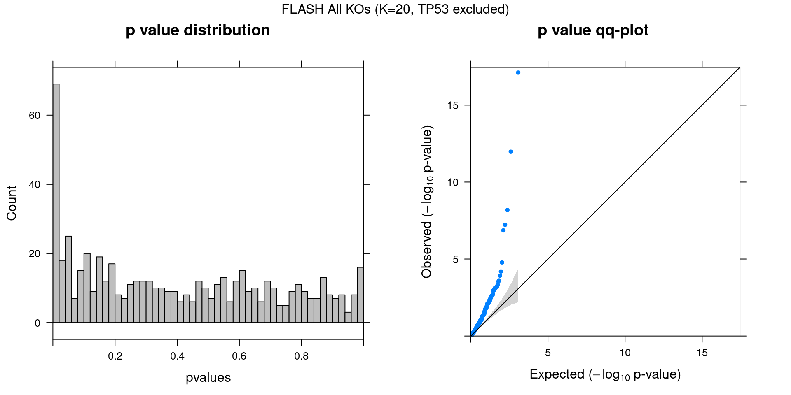

FLASH on MCF10A Treated
– Genes Filtered by Detection Rate
Yifan Zhou (zhouyf@uchicago.edu)
2020-11-09
1 Single cell expression data
CROP-seq data are from this paper: On the design of CRISPR-based single cell molecular screens, GEO accession: GSE108699.
Perturbations:
Knock-outs of 29 tumor-suppressor genes (TP53, …), 1 non-targeting control.
Cells:
MCF10A cells (normal human breast epithelial cells) with exposure to a DNA damaging agent, doxorubicin.
Only cells with gRNA readout were kept, resulted in 5584 cells.
Genes:
Only genes detected in > 5% of cells were kept, resulted in 9895 genes.
Normalization:
Seurat “LogNormalize”: log(count per 10K + 1).
Library size was regressed out, and the residuals were used as input.
2 Factor correlation results
2.1 FLASH Two-Step


3 Gene Ontology Enrichment Analysis
Genes w/ non-zero loadings vs all genes selected for factor analysis.
GO category: Biological Process.
3.1 lfsr cutoff at 0.05
| ID | Description | GeneRatio | BgRatio | FoldChange | qvalue |
|---|---|---|---|---|---|
| GO:0006613 | cotranslational protein targeting to membrane | 88/3073 | 98/8563 | 2.50 | 2.29e-25 |
| GO:0006614 | SRP-dependent cotranslational protein targeting to membrane | 85/3073 | 94/8563 | 2.52 | 3.04e-25 |
| GO:0072599 | establishment of protein localization to endoplasmic reticulum | 93/3073 | 109/8563 | 2.38 | 1.35e-23 |
| GO:0045047 | protein targeting to ER | 91/3073 | 106/8563 | 2.39 | 1.36e-23 |
| GO:0070972 | protein localization to endoplasmic reticulum | 103/3073 | 128/8563 | 2.24 | 2.10e-22 |
| GO:0006413 | translational initiation | 127/3073 | 174/8563 | 2.03 | 5.79e-21 |
| GO:0000184 | nuclear-transcribed mRNA catabolic process, nonsense-mediated decay | 89/3073 | 115/8563 | 2.16 | 3.80e-17 |
| GO:0002181 | cytoplasmic translation | 59/3073 | 79/8563 | 2.08 | 3.28e-10 |
| GO:0035637 | multicellular organismal signaling | 35/3073 | 48/8563 | 2.03 | 1.10e-05 |
| GO:0034109 | homotypic cell-cell adhesion | 30/3073 | 41/8563 | 2.04 | 6.58e-05 |
| GO:0015985 | energy coupled proton transport, down electrochemical gradient | 18/3073 | 21/8563 | 2.39 | 1.62e-04 |
| GO:0015986 | ATP synthesis coupled proton transport | 18/3073 | 21/8563 | 2.39 | 1.62e-04 |
| GO:0099132 | ATP hydrolysis coupled cation transmembrane transport | 26/3073 | 36/8563 | 2.01 | 3.73e-04 |
| GO:0002183 | cytoplasmic translational initiation | 21/3073 | 27/8563 | 2.17 | 3.96e-04 |
| GO:0097066 | response to thyroid hormone | 14/3073 | 16/8563 | 2.44 | 9.87e-04 |
| GO:0061684 | chaperone-mediated autophagy | 10/3073 | 10/8563 | 2.79 | 1.07e-03 |
| GO:0035722 | interleukin-12-mediated signaling pathway | 23/3073 | 32/8563 | 2.00 | 1.09e-03 |
| GO:0050819 | negative regulation of coagulation | 16/3073 | 20/8563 | 2.23 | 1.88e-03 |
| GO:0001732 | formation of cytoplasmic translation initiation complex | 11/3073 | 12/8563 | 2.55 | 2.40e-03 |
| GO:0031581 | hemidesmosome assembly | 11/3073 | 12/8563 | 2.55 | 2.40e-03 |
| GO:0031639 | plasminogen activation | 11/3073 | 12/8563 | 2.55 | 2.40e-03 |
| GO:0042776 | mitochondrial ATP synthesis coupled proton transport | 14/3073 | 17/8563 | 2.29 | 2.63e-03 |
| GO:0045933 | positive regulation of muscle contraction | 14/3073 | 17/8563 | 2.29 | 2.63e-03 |
| GO:0030195 | negative regulation of blood coagulation | 15/3073 | 19/8563 | 2.20 | 3.31e-03 |
| GO:1900047 | negative regulation of hemostasis | 15/3073 | 19/8563 | 2.20 | 3.31e-03 |
| GO:0086065 | cell communication involved in cardiac conduction | 17/3073 | 23/8563 | 2.06 | 4.40e-03 |
| GO:0046033 | AMP metabolic process | 10/3073 | 11/8563 | 2.53 | 4.84e-03 |
| GO:1903115 | regulation of actin filament-based movement | 15/3073 | 20/8563 | 2.09 | 6.99e-03 |
| GO:0090151 | establishment of protein localization to mitochondrial membrane | 12/3073 | 15/8563 | 2.23 | 9.48e-03 |
| GO:0086004 | regulation of cardiac muscle cell contraction | 14/3073 | 19/8563 | 2.05 | 1.26e-02 |
| GO:0060547 | negative regulation of necrotic cell death | 10/3073 | 12/8563 | 2.32 | 1.43e-02 |
| GO:0086091 | regulation of heart rate by cardiac conduction | 10/3073 | 12/8563 | 2.32 | 1.43e-02 |
| GO:0086009 | membrane repolarization | 11/3073 | 14/8563 | 2.19 | 1.76e-02 |
| GO:0003382 | epithelial cell morphogenesis | 12/3073 | 16/8563 | 2.09 | 2.00e-02 |
| GO:0051385 | response to mineralocorticoid | 12/3073 | 16/8563 | 2.09 | 2.00e-02 |
| GO:0061844 | antimicrobial humoral immune response mediated by antimicrobial peptide | 12/3073 | 16/8563 | 2.09 | 2.00e-02 |
| GO:0086002 | cardiac muscle cell action potential involved in contraction | 12/3073 | 16/8563 | 2.09 | 2.00e-02 |
| GO:0099601 | regulation of neurotransmitter receptor activity | 12/3073 | 16/8563 | 2.09 | 2.00e-02 |
| GO:0019511 | peptidyl-proline hydroxylation | 9/3073 | 11/8563 | 2.28 | 2.69e-02 |
| GO:0060669 | embryonic placenta morphogenesis | 10/3073 | 13/8563 | 2.14 | 3.22e-02 |
| GO:0086005 | ventricular cardiac muscle cell action potential | 10/3073 | 13/8563 | 2.14 | 3.22e-02 |
| GO:0000028 | ribosomal small subunit assembly | 11/3073 | 15/8563 | 2.04 | 3.59e-02 |
| GO:0032988 | ribonucleoprotein complex disassembly | 11/3073 | 15/8563 | 2.04 | 3.59e-02 |
| GO:0070296 | sarcoplasmic reticulum calcium ion transport | 11/3073 | 15/8563 | 2.04 | 3.59e-02 |
| GO:0006465 | signal peptide processing | 8/3073 | 10/8563 | 2.23 | 4.92e-02 |
| GO:0009404 | toxin metabolic process | 8/3073 | 10/8563 | 2.23 | 4.92e-02 |
| GO:0010042 | response to manganese ion | 8/3073 | 10/8563 | 2.23 | 4.92e-02 |
| GO:0030449 | regulation of complement activation | 8/3073 | 10/8563 | 2.23 | 4.92e-02 |
| GO:0043267 | negative regulation of potassium ion transport | 8/3073 | 10/8563 | 2.23 | 4.92e-02 |
| GO:0060306 | regulation of membrane repolarization | 8/3073 | 10/8563 | 2.23 | 4.92e-02 |
| GO:0060546 | negative regulation of necroptotic process | 8/3073 | 10/8563 | 2.23 | 4.92e-02 |
| GO:0060713 | labyrinthine layer morphogenesis | 8/3073 | 10/8563 | 2.23 | 4.92e-02 |
| GO:0075522 | IRES-dependent viral translational initiation | 8/3073 | 10/8563 | 2.23 | 4.92e-02 |
| GO:0097067 | cellular response to thyroid hormone stimulus | 8/3073 | 10/8563 | 2.23 | 4.92e-02 |
| GO:0098911 | regulation of ventricular cardiac muscle cell action potential | 8/3073 | 10/8563 | 2.23 | 4.92e-02 |
| GO:0099622 | cardiac muscle cell membrane repolarization | 8/3073 | 10/8563 | 2.23 | 4.92e-02 |
| GO:2000257 | regulation of protein activation cascade | 8/3073 | 10/8563 | 2.23 | 4.92e-02 |
| ID | Description | GeneRatio | BgRatio | FoldChange | qvalue |
|---|---|---|---|---|---|
| GO:0031424 | keratinization | 34/3176 | 44/8563 | 2.08 | 1.26e-05 |
| GO:0003170 | heart valve development | 18/3176 | 22/8563 | 2.21 | 9.86e-04 |
| GO:0003179 | heart valve morphogenesis | 16/3176 | 20/8563 | 2.16 | 3.36e-03 |
| GO:0007157 | heterophilic cell-cell adhesion via plasma membrane cell adhesion molecules | 11/3176 | 12/8563 | 2.47 | 3.88e-03 |
| GO:0031639 | plasminogen activation | 11/3176 | 12/8563 | 2.47 | 3.88e-03 |
| GO:0003176 | aortic valve development | 10/3176 | 11/8563 | 2.45 | 8.15e-03 |
| GO:0030049 | muscle filament sliding | 10/3176 | 11/8563 | 2.45 | 8.15e-03 |
| GO:0033275 | actin-myosin filament sliding | 10/3176 | 11/8563 | 2.45 | 8.15e-03 |
| GO:0033561 | regulation of water loss via skin | 10/3176 | 11/8563 | 2.45 | 8.15e-03 |
| GO:1905314 | semi-lunar valve development | 11/3176 | 13/8563 | 2.28 | 1.22e-02 |
| GO:0001974 | blood vessel remodeling | 15/3176 | 20/8563 | 2.02 | 1.24e-02 |
| GO:0015949 | nucleobase-containing small molecule interconversion | 15/3176 | 20/8563 | 2.02 | 1.24e-02 |
| GO:0002437 | inflammatory response to antigenic stimulus | 12/3176 | 15/8563 | 2.16 | 1.53e-02 |
| GO:0060317 | cardiac epithelial to mesenchymal transition | 12/3176 | 15/8563 | 2.16 | 1.53e-02 |
| GO:0051156 | glucose 6-phosphate metabolic process | 13/3176 | 17/8563 | 2.06 | 1.84e-02 |
| GO:0071295 | cellular response to vitamin | 12/3176 | 16/8563 | 2.02 | 3.05e-02 |
| GO:0003171 | atrioventricular valve development | 9/3176 | 11/8563 | 2.21 | 3.67e-02 |
| GO:0003181 | atrioventricular valve morphogenesis | 9/3176 | 11/8563 | 2.21 | 3.67e-02 |
| GO:0003203 | endocardial cushion morphogenesis | 10/3176 | 13/8563 | 2.07 | 4.45e-02 |
| GO:0006098 | pentose-phosphate shunt | 10/3176 | 13/8563 | 2.07 | 4.45e-02 |
| GO:0031579 | membrane raft organization | 10/3176 | 13/8563 | 2.07 | 4.45e-02 |
| GO:1900025 | negative regulation of substrate adhesion-dependent cell spreading | 10/3176 | 13/8563 | 2.07 | 4.45e-02 |
| ID | Description | GeneRatio | BgRatio | FoldChange | qvalue |
|---|---|---|---|---|---|
| GO:0042273 | ribosomal large subunit biogenesis | 63/3689 | 67/8563 | 2.18 | 6.24e-16 |
| GO:0000027 | ribosomal large subunit assembly | 26/3689 | 28/8563 | 2.16 | 5.47e-06 |
| GO:0000470 | maturation of LSU-rRNA | 18/3689 | 18/8563 | 2.32 | 2.66e-05 |
| GO:0072376 | protein activation cascade | 16/3689 | 18/8563 | 2.06 | 3.06e-03 |
| GO:0000463 | maturation of LSU-rRNA from tricistronic rRNA transcript (SSU-rRNA, 5.8S rRNA, LSU-rRNA) | 11/3689 | 11/8563 | 2.32 | 3.76e-03 |
| GO:1904874 | positive regulation of telomerase RNA localization to Cajal body | 13/3689 | 15/8563 | 2.01 | 2.22e-02 |
| GO:0009072 | aromatic amino acid family metabolic process | 10/3689 | 11/8563 | 2.11 | 4.23e-02 |
| GO:0032196 | transposition | 10/3689 | 11/8563 | 2.11 | 4.23e-02 |
| GO:0042730 | fibrinolysis | 10/3689 | 11/8563 | 2.11 | 4.23e-02 |
| GO:0046033 | AMP metabolic process | 10/3689 | 11/8563 | 2.11 | 4.23e-02 |
| GO:1902570 | protein localization to nucleolus | 10/3689 | 11/8563 | 2.11 | 4.23e-02 |
| ID | Description | GeneRatio | BgRatio | FoldChange | qvalue |
|---|---|---|---|---|---|
| GO:0006614 | SRP-dependent cotranslational protein targeting to membrane | 56/2124 | 94/8563 | 2.40 | 2.23e-09 |
| GO:0006613 | cotranslational protein targeting to membrane | 57/2124 | 98/8563 | 2.34 | 2.23e-09 |
| GO:0045047 | protein targeting to ER | 60/2124 | 106/8563 | 2.28 | 2.23e-09 |
| GO:0070972 | protein localization to endoplasmic reticulum | 68/2124 | 128/8563 | 2.14 | 3.50e-09 |
| GO:0072599 | establishment of protein localization to endoplasmic reticulum | 60/2124 | 109/8563 | 2.22 | 7.46e-09 |
| GO:0000184 | nuclear-transcribed mRNA catabolic process, nonsense-mediated decay | 59/2124 | 115/8563 | 2.07 | 3.21e-07 |
| GO:0006959 | humoral immune response | 32/2124 | 49/8563 | 2.63 | 5.79e-07 |
| GO:0002576 | platelet degranulation | 39/2124 | 71/8563 | 2.21 | 8.68e-06 |
| GO:0031424 | keratinization | 28/2124 | 44/8563 | 2.57 | 9.10e-06 |
| GO:0019730 | antimicrobial humoral response | 18/2124 | 23/8563 | 3.16 | 1.44e-05 |
| GO:0070268 | cornification | 23/2124 | 34/8563 | 2.73 | 2.10e-05 |
| GO:0002181 | cytoplasmic translation | 41/2124 | 79/8563 | 2.09 | 2.21e-05 |
| GO:1903317 | regulation of protein maturation | 27/2124 | 47/8563 | 2.32 | 1.79e-04 |
| GO:0072376 | protein activation cascade | 14/2124 | 18/8563 | 3.14 | 3.27e-04 |
| GO:0070613 | regulation of protein processing | 26/2124 | 46/8563 | 2.28 | 3.84e-04 |
| GO:0061844 | antimicrobial humoral immune response mediated by antimicrobial peptide | 12/2124 | 16/8563 | 3.02 | 2.49e-03 |
| GO:0031581 | hemidesmosome assembly | 10/2124 | 12/8563 | 3.36 | 2.49e-03 |
| GO:0001836 | release of cytochrome c from mitochondria | 23/2124 | 43/8563 | 2.16 | 3.18e-03 |
| GO:0008037 | cell recognition | 24/2124 | 47/8563 | 2.06 | 5.01e-03 |
| GO:1904874 | positive regulation of telomerase RNA localization to Cajal body | 11/2124 | 15/8563 | 2.96 | 5.32e-03 |
| GO:0002526 | acute inflammatory response | 24/2124 | 48/8563 | 2.02 | 6.50e-03 |
| GO:0061045 | negative regulation of wound healing | 17/2124 | 30/8563 | 2.28 | 7.91e-03 |
| GO:0006956 | complement activation | 9/2124 | 12/8563 | 3.02 | 1.19e-02 |
| GO:0090199 | regulation of release of cytochrome c from mitochondria | 18/2124 | 34/8563 | 2.13 | 1.19e-02 |
| GO:0030449 | regulation of complement activation | 8/2124 | 10/8563 | 3.23 | 1.19e-02 |
| GO:1900118 | negative regulation of execution phase of apoptosis | 8/2124 | 10/8563 | 3.23 | 1.19e-02 |
| GO:1903405 | protein localization to nuclear body | 8/2124 | 10/8563 | 3.23 | 1.19e-02 |
| GO:1904851 | positive regulation of establishment of protein localization to telomere | 8/2124 | 10/8563 | 3.23 | 1.19e-02 |
| GO:1904867 | protein localization to Cajal body | 8/2124 | 10/8563 | 3.23 | 1.19e-02 |
| GO:2000257 | regulation of protein activation cascade | 8/2124 | 10/8563 | 3.23 | 1.19e-02 |
| GO:0030195 | negative regulation of blood coagulation | 12/2124 | 19/8563 | 2.55 | 1.32e-02 |
| GO:1900047 | negative regulation of hemostasis | 12/2124 | 19/8563 | 2.55 | 1.32e-02 |
| GO:0051781 | positive regulation of cell division | 19/2124 | 37/8563 | 2.07 | 1.32e-02 |
| GO:1904666 | regulation of ubiquitin protein ligase activity | 11/2124 | 17/8563 | 2.61 | 1.60e-02 |
| GO:0070527 | platelet aggregation | 16/2124 | 30/8563 | 2.15 | 1.93e-02 |
| GO:0070200 | establishment of protein localization to telomere | 10/2124 | 15/8563 | 2.69 | 1.93e-02 |
| GO:1903319 | positive regulation of protein maturation | 10/2124 | 15/8563 | 2.69 | 1.93e-02 |
| GO:0019748 | secondary metabolic process | 14/2124 | 25/8563 | 2.26 | 2.12e-02 |
| GO:0042246 | tissue regeneration | 14/2124 | 25/8563 | 2.26 | 2.12e-02 |
| GO:0071621 | granulocyte chemotaxis | 17/2124 | 33/8563 | 2.08 | 2.12e-02 |
| GO:0050819 | negative regulation of coagulation | 12/2124 | 20/8563 | 2.42 | 2.13e-02 |
| GO:0002920 | regulation of humoral immune response | 9/2124 | 13/8563 | 2.79 | 2.22e-02 |
| GO:1900025 | negative regulation of substrate adhesion-dependent cell spreading | 9/2124 | 13/8563 | 2.79 | 2.22e-02 |
| GO:0042730 | fibrinolysis | 8/2124 | 11/8563 | 2.93 | 2.55e-02 |
| GO:0070203 | regulation of establishment of protein localization to telomere | 8/2124 | 11/8563 | 2.93 | 2.55e-02 |
| GO:1900115 | extracellular regulation of signal transduction | 8/2124 | 11/8563 | 2.93 | 2.55e-02 |
| GO:1900116 | extracellular negative regulation of signal transduction | 8/2124 | 11/8563 | 2.93 | 2.55e-02 |
| GO:0030593 | neutrophil chemotaxis | 13/2124 | 23/8563 | 2.28 | 2.57e-02 |
| GO:1904872 | regulation of telomerase RNA localization to Cajal body | 11/2124 | 18/8563 | 2.46 | 2.59e-02 |
| GO:0030193 | regulation of blood coagulation | 16/2124 | 31/8563 | 2.08 | 2.59e-02 |
| GO:1900046 | regulation of hemostasis | 16/2124 | 31/8563 | 2.08 | 2.59e-02 |
| GO:0031145 | anaphase-promoting complex-dependent catabolic process | 17/2124 | 34/8563 | 2.02 | 2.86e-02 |
| GO:0006636 | unsaturated fatty acid biosynthetic process | 14/2124 | 26/8563 | 2.17 | 3.00e-02 |
| GO:0008207 | C21-steroid hormone metabolic process | 10/2124 | 16/8563 | 2.52 | 3.20e-02 |
| GO:0035722 | interleukin-12-mediated signaling pathway | 16/2124 | 32/8563 | 2.02 | 3.55e-02 |
| GO:1900117 | regulation of execution phase of apoptosis | 13/2124 | 24/8563 | 2.18 | 3.70e-02 |
| GO:0010954 | positive regulation of protein processing | 9/2124 | 14/8563 | 2.59 | 3.84e-02 |
| GO:0090670 | RNA localization to Cajal body | 11/2124 | 19/8563 | 2.33 | 3.89e-02 |
| GO:0090671 | telomerase RNA localization to Cajal body | 11/2124 | 19/8563 | 2.33 | 3.89e-02 |
| GO:0090672 | telomerase RNA localization | 11/2124 | 19/8563 | 2.33 | 3.89e-02 |
| GO:0090685 | RNA localization to nucleus | 11/2124 | 19/8563 | 2.33 | 3.89e-02 |
| GO:0002183 | cytoplasmic translational initiation | 14/2124 | 27/8563 | 2.09 | 3.99e-02 |
| GO:1990266 | neutrophil migration | 14/2124 | 27/8563 | 2.09 | 3.99e-02 |
| GO:0022617 | extracellular matrix disassembly | 15/2124 | 30/8563 | 2.02 | 4.38e-02 |
| GO:0010224 | response to UV-B | 8/2124 | 12/8563 | 2.69 | 4.41e-02 |
| GO:0030574 | collagen catabolic process | 8/2124 | 12/8563 | 2.69 | 4.41e-02 |
| GO:0031639 | plasminogen activation | 8/2124 | 12/8563 | 2.69 | 4.41e-02 |
| GO:0070202 | regulation of establishment of protein localization to chromosome | 8/2124 | 12/8563 | 2.69 | 4.41e-02 |
| GO:1904816 | positive regulation of protein localization to chromosome, telomeric region | 8/2124 | 12/8563 | 2.69 | 4.41e-02 |
| GO:1990173 | protein localization to nucleoplasm | 8/2124 | 12/8563 | 2.69 | 4.41e-02 |
| GO:0070228 | regulation of lymphocyte apoptotic process | 12/2124 | 22/8563 | 2.20 | 4.43e-02 |
| GO:1900744 | regulation of p38MAPK cascade | 13/2124 | 25/8563 | 2.10 | 4.79e-02 |
| ID | Description | GeneRatio | BgRatio | FoldChange | qvalue |
|---|---|---|---|---|---|
| GO:0031055 | chromatin remodeling at centromere | 25/2751 | 31/8563 | 2.51 | 7.04e-06 |
| GO:0034508 | centromere complex assembly | 29/2751 | 39/8563 | 2.31 | 1.25e-05 |
| GO:0042769 | DNA damage response, detection of DNA damage | 28/2751 | 38/8563 | 2.29 | 2.55e-05 |
| GO:0034080 | CENP-A containing nucleosome assembly | 22/2751 | 27/8563 | 2.54 | 2.55e-05 |
| GO:0061641 | CENP-A containing chromatin organization | 22/2751 | 27/8563 | 2.54 | 2.55e-05 |
| GO:0033260 | nuclear DNA replication | 29/2751 | 40/8563 | 2.26 | 2.58e-05 |
| GO:0044786 | cell cycle DNA replication | 34/2751 | 50/8563 | 2.12 | 2.71e-05 |
| GO:0048144 | fibroblast proliferation | 36/2751 | 55/8563 | 2.04 | 4.25e-05 |
| GO:0048145 | regulation of fibroblast proliferation | 36/2751 | 55/8563 | 2.04 | 4.25e-05 |
| GO:0032201 | telomere maintenance via semi-conservative replication | 18/2751 | 21/8563 | 2.67 | 6.33e-05 |
| GO:0010965 | regulation of mitotic sister chromatid separation | 29/2751 | 44/8563 | 2.05 | 3.47e-04 |
| GO:0048146 | positive regulation of fibroblast proliferation | 22/2751 | 30/8563 | 2.28 | 3.47e-04 |
| GO:0030071 | regulation of mitotic metaphase/anaphase transition | 27/2751 | 40/8563 | 2.10 | 3.53e-04 |
| GO:1902099 | regulation of metaphase/anaphase transition of cell cycle | 27/2751 | 40/8563 | 2.10 | 3.53e-04 |
| GO:0007091 | metaphase/anaphase transition of mitotic cell cycle | 28/2751 | 43/8563 | 2.03 | 5.97e-04 |
| GO:0044784 | metaphase/anaphase transition of cell cycle | 28/2751 | 43/8563 | 2.03 | 5.97e-04 |
| GO:1905819 | negative regulation of chromosome separation | 21/2751 | 29/8563 | 2.25 | 6.40e-04 |
| GO:2000816 | negative regulation of mitotic sister chromatid separation | 21/2751 | 29/8563 | 2.25 | 6.40e-04 |
| GO:0006336 | DNA replication-independent nucleosome assembly | 25/2751 | 37/8563 | 2.10 | 6.40e-04 |
| GO:0043486 | histone exchange | 24/2751 | 35/8563 | 2.13 | 6.40e-04 |
| GO:0033046 | negative regulation of sister chromatid segregation | 23/2751 | 33/8563 | 2.17 | 6.40e-04 |
| GO:0051985 | negative regulation of chromosome segregation | 23/2751 | 33/8563 | 2.17 | 6.40e-04 |
| GO:0006297 | nucleotide-excision repair, DNA gap filling | 17/2751 | 22/8563 | 2.41 | 9.74e-04 |
| GO:0051784 | negative regulation of nuclear division | 26/2751 | 40/8563 | 2.02 | 1.04e-03 |
| GO:0034724 | DNA replication-independent nucleosome organization | 25/2751 | 38/8563 | 2.05 | 1.08e-03 |
| GO:0045839 | negative regulation of mitotic nuclear division | 25/2751 | 38/8563 | 2.05 | 1.08e-03 |
| GO:0045841 | negative regulation of mitotic metaphase/anaphase transition | 20/2751 | 28/8563 | 2.22 | 1.13e-03 |
| GO:1902100 | negative regulation of metaphase/anaphase transition of cell cycle | 20/2751 | 28/8563 | 2.22 | 1.13e-03 |
| GO:0033048 | negative regulation of mitotic sister chromatid segregation | 22/2751 | 32/8563 | 2.14 | 1.13e-03 |
| GO:0009262 | deoxyribonucleotide metabolic process | 21/2751 | 30/8563 | 2.18 | 1.13e-03 |
| GO:0006298 | mismatch repair | 17/2751 | 23/8563 | 2.30 | 2.09e-03 |
| GO:0045740 | positive regulation of DNA replication | 18/2751 | 25/8563 | 2.24 | 2.15e-03 |
| GO:0031145 | anaphase-promoting complex-dependent catabolic process | 22/2751 | 34/8563 | 2.01 | 3.66e-03 |
| GO:0032612 | interleukin-1 production | 22/2751 | 34/8563 | 2.01 | 3.66e-03 |
| GO:0007094 | mitotic spindle assembly checkpoint | 18/2751 | 26/8563 | 2.15 | 4.05e-03 |
| GO:0031577 | spindle checkpoint | 18/2751 | 26/8563 | 2.15 | 4.05e-03 |
| GO:0071173 | spindle assembly checkpoint | 18/2751 | 26/8563 | 2.15 | 4.05e-03 |
| GO:0071174 | mitotic spindle checkpoint | 18/2751 | 26/8563 | 2.15 | 4.05e-03 |
| GO:0009263 | deoxyribonucleotide biosynthetic process | 11/2751 | 13/8563 | 2.63 | 4.88e-03 |
| GO:0032652 | regulation of interleukin-1 production | 20/2751 | 31/8563 | 2.01 | 6.40e-03 |
| GO:0022616 | DNA strand elongation | 14/2751 | 19/8563 | 2.29 | 7.03e-03 |
| GO:0070987 | error-free translesion synthesis | 14/2751 | 19/8563 | 2.29 | 7.03e-03 |
| GO:0009157 | deoxyribonucleoside monophosphate biosynthetic process | 9/2751 | 10/8563 | 2.80 | 7.40e-03 |
| GO:0009162 | deoxyribonucleoside monophosphate metabolic process | 10/2751 | 12/8563 | 2.59 | 9.66e-03 |
| GO:0019692 | deoxyribose phosphate metabolic process | 18/2751 | 28/8563 | 2.00 | 1.11e-02 |
| GO:0008608 | attachment of spindle microtubules to kinetochore | 17/2751 | 26/8563 | 2.04 | 1.16e-02 |
| GO:0009394 | 2’-deoxyribonucleotide metabolic process | 17/2751 | 26/8563 | 2.04 | 1.16e-02 |
| GO:0018149 | peptide cross-linking | 13/2751 | 18/8563 | 2.25 | 1.24e-02 |
| GO:0071634 | regulation of transforming growth factor beta production | 13/2751 | 18/8563 | 2.25 | 1.24e-02 |
| GO:0051383 | kinetochore organization | 14/2751 | 20/8563 | 2.18 | 1.24e-02 |
| GO:0006270 | DNA replication initiation | 15/2751 | 23/8563 | 2.03 | 2.02e-02 |
| GO:1903053 | regulation of extracellular matrix organization | 15/2751 | 23/8563 | 2.03 | 2.02e-02 |
| GO:0006271 | DNA strand elongation involved in DNA replication | 10/2751 | 13/8563 | 2.39 | 2.08e-02 |
| GO:0030195 | negative regulation of blood coagulation | 13/2751 | 19/8563 | 2.13 | 2.15e-02 |
| GO:0071604 | transforming growth factor beta production | 13/2751 | 19/8563 | 2.13 | 2.15e-02 |
| GO:1900047 | negative regulation of hemostasis | 13/2751 | 19/8563 | 2.13 | 2.15e-02 |
| GO:0010955 | negative regulation of protein processing | 13/2751 | 20/8563 | 2.02 | 3.75e-02 |
| GO:0050819 | negative regulation of coagulation | 13/2751 | 20/8563 | 2.02 | 3.75e-02 |
| GO:1903318 | negative regulation of protein maturation | 13/2751 | 20/8563 | 2.02 | 3.75e-02 |
| GO:0006268 | DNA unwinding involved in DNA replication | 8/2751 | 10/8563 | 2.49 | 3.77e-02 |
| GO:0009265 | 2’-deoxyribonucleotide biosynthetic process | 8/2751 | 10/8563 | 2.49 | 3.77e-02 |
| GO:0046385 | deoxyribose phosphate biosynthetic process | 8/2751 | 10/8563 | 2.49 | 3.77e-02 |
| GO:0046622 | positive regulation of organ growth | 12/2751 | 18/8563 | 2.08 | 3.90e-02 |
| GO:0050830 | defense response to Gram-positive bacterium | 12/2751 | 18/8563 | 2.08 | 3.90e-02 |
| GO:0046633 | alpha-beta T cell proliferation | 9/2751 | 12/8563 | 2.33 | 4.05e-02 |
| GO:1902991 | regulation of amyloid precursor protein catabolic process | 11/2751 | 16/8563 | 2.14 | 4.05e-02 |
| ID | Description | GeneRatio | BgRatio | FoldChange | qvalue |
|---|---|---|---|---|---|
| GO:0006614 | SRP-dependent cotranslational protein targeting to membrane | 86/3511 | 94/8563 | 2.23 | 2.18e-21 |
| GO:0006613 | cotranslational protein targeting to membrane | 87/3511 | 98/8563 | 2.17 | 9.59e-20 |
| GO:0072599 | establishment of protein localization to endoplasmic reticulum | 91/3511 | 109/8563 | 2.04 | 6.40e-17 |
| GO:0045047 | protein targeting to ER | 89/3511 | 106/8563 | 2.05 | 6.40e-17 |
| GO:0031581 | hemidesmosome assembly | 11/3511 | 12/8563 | 2.24 | 2.55e-02 |
| GO:0048009 | insulin-like growth factor receptor signaling pathway | 12/3511 | 14/8563 | 2.09 | 4.50e-02 |
| ID | Description | GeneRatio | BgRatio | FoldChange | qvalue |
|---|---|---|---|---|---|
| GO:0006613 | cotranslational protein targeting to membrane | 69/711 | 98/8563 | 8.48 | 2.87e-49 |
| GO:0072599 | establishment of protein localization to endoplasmic reticulum | 72/711 | 109/8563 | 7.96 | 6.38e-49 |
| GO:0045047 | protein targeting to ER | 71/711 | 106/8563 | 8.07 | 6.38e-49 |
| GO:0006614 | SRP-dependent cotranslational protein targeting to membrane | 67/711 | 94/8563 | 8.58 | 6.38e-49 |
| GO:0006413 | translational initiation | 87/711 | 174/8563 | 6.02 | 8.85e-46 |
| GO:0070972 | protein localization to endoplasmic reticulum | 74/711 | 128/8563 | 6.96 | 1.39e-44 |
| GO:0000184 | nuclear-transcribed mRNA catabolic process, nonsense-mediated decay | 70/711 | 115/8563 | 7.33 | 2.94e-44 |
| GO:0006612 | protein targeting to membrane | 73/711 | 154/8563 | 5.71 | 4.00e-36 |
| GO:0000956 | nuclear-transcribed mRNA catabolic process | 74/711 | 188/8563 | 4.74 | 5.57e-30 |
| GO:0090150 | establishment of protein localization to membrane | 83/711 | 241/8563 | 4.15 | 5.60e-29 |
| GO:0006402 | mRNA catabolic process | 86/711 | 263/8563 | 3.94 | 3.03e-28 |
| GO:0006401 | RNA catabolic process | 87/711 | 285/8563 | 3.68 | 3.71e-26 |
| GO:0006605 | protein targeting | 95/711 | 338/8563 | 3.39 | 1.09e-25 |
| GO:0034655 | nucleobase-containing compound catabolic process | 104/711 | 410/8563 | 3.05 | 2.42e-24 |
| GO:0044270 | cellular nitrogen compound catabolic process | 105/711 | 425/8563 | 2.98 | 1.29e-23 |
| GO:0046700 | heterocycle catabolic process | 104/711 | 425/8563 | 2.95 | 4.92e-23 |
| GO:0019439 | aromatic compound catabolic process | 104/711 | 432/8563 | 2.90 | 1.89e-22 |
| GO:0072594 | establishment of protein localization to organelle | 104/711 | 433/8563 | 2.89 | 2.18e-22 |
| GO:1901361 | organic cyclic compound catabolic process | 105/711 | 444/8563 | 2.85 | 4.53e-22 |
| GO:0072657 | protein localization to membrane | 97/711 | 395/8563 | 2.96 | 1.52e-21 |
| GO:0002181 | cytoplasmic translation | 35/711 | 79/8563 | 5.34 | 1.16e-15 |
| GO:0009126 | purine nucleoside monophosphate metabolic process | 56/711 | 218/8563 | 3.09 | 9.16e-13 |
| GO:0009167 | purine ribonucleoside monophosphate metabolic process | 56/711 | 218/8563 | 3.09 | 9.16e-13 |
| GO:0009123 | nucleoside monophosphate metabolic process | 59/711 | 245/8563 | 2.90 | 3.68e-12 |
| GO:0009144 | purine nucleoside triphosphate metabolic process | 55/711 | 219/8563 | 3.02 | 4.22e-12 |
| GO:0046034 | ATP metabolic process | 50/711 | 188/8563 | 3.20 | 5.66e-12 |
| GO:0009161 | ribonucleoside monophosphate metabolic process | 56/711 | 230/8563 | 2.93 | 9.39e-12 |
| GO:0009205 | purine ribonucleoside triphosphate metabolic process | 53/711 | 212/8563 | 3.01 | 1.39e-11 |
| GO:0009199 | ribonucleoside triphosphate metabolic process | 53/711 | 217/8563 | 2.94 | 3.69e-11 |
| GO:0009141 | nucleoside triphosphate metabolic process | 55/711 | 233/8563 | 2.84 | 5.65e-11 |
| GO:0006119 | oxidative phosphorylation | 35/711 | 112/8563 | 3.76 | 2.24e-10 |
| GO:0006091 | generation of precursor metabolites and energy | 65/711 | 323/8563 | 2.42 | 9.22e-10 |
| GO:0006163 | purine nucleotide metabolic process | 65/711 | 352/8563 | 2.22 | 4.35e-08 |
| GO:0071826 | ribonucleoprotein complex subunit organization | 47/711 | 216/8563 | 2.62 | 5.24e-08 |
| GO:0072521 | purine-containing compound metabolic process | 67/711 | 371/8563 | 2.17 | 5.82e-08 |
| GO:0022618 | ribonucleoprotein complex assembly | 45/711 | 203/8563 | 2.67 | 6.22e-08 |
| GO:0009150 | purine ribonucleotide metabolic process | 62/711 | 334/8563 | 2.24 | 8.15e-08 |
| GO:0022613 | ribonucleoprotein complex biogenesis | 69/711 | 397/8563 | 2.09 | 1.61e-07 |
| GO:0042775 | mitochondrial ATP synthesis coupled electron transport | 25/711 | 79/8563 | 3.81 | 2.03e-07 |
| GO:0042773 | ATP synthesis coupled electron transport | 25/711 | 80/8563 | 3.76 | 2.65e-07 |
| GO:0019693 | ribose phosphate metabolic process | 64/711 | 364/8563 | 2.12 | 3.79e-07 |
| GO:0009259 | ribonucleotide metabolic process | 62/711 | 348/8563 | 2.15 | 3.87e-07 |
| GO:0042255 | ribosome assembly | 20/711 | 56/8563 | 4.30 | 7.28e-07 |
| GO:0022900 | electron transport chain | 34/711 | 143/8563 | 2.86 | 9.92e-07 |
| GO:1902600 | proton transmembrane transport | 25/711 | 91/8563 | 3.31 | 3.98e-06 |
| GO:0045333 | cellular respiration | 34/711 | 151/8563 | 2.71 | 3.98e-06 |
| GO:0022904 | respiratory electron transport chain | 25/711 | 93/8563 | 3.24 | 6.20e-06 |
| GO:0015980 | energy derivation by oxidation of organic compounds | 40/711 | 198/8563 | 2.43 | 6.32e-06 |
| GO:0009127 | purine nucleoside monophosphate biosynthetic process | 26/711 | 102/8563 | 3.07 | 1.04e-05 |
| GO:0009168 | purine ribonucleoside monophosphate biosynthetic process | 26/711 | 102/8563 | 3.07 | 1.04e-05 |
| GO:0015985 | energy coupled proton transport, down electrochemical gradient | 11/711 | 21/8563 | 6.31 | 1.33e-05 |
| GO:0015986 | ATP synthesis coupled proton transport | 11/711 | 21/8563 | 6.31 | 1.33e-05 |
| GO:0009206 | purine ribonucleoside triphosphate biosynthetic process | 23/711 | 88/8563 | 3.15 | 3.17e-05 |
| GO:0002183 | cytoplasmic translational initiation | 12/711 | 27/8563 | 5.35 | 3.49e-05 |
| GO:0000028 | ribosomal small subunit assembly | 9/711 | 15/8563 | 7.23 | 3.66e-05 |
| GO:0009145 | purine nucleoside triphosphate biosynthetic process | 23/711 | 89/8563 | 3.11 | 3.74e-05 |
| GO:0009124 | nucleoside monophosphate biosynthetic process | 28/711 | 124/8563 | 2.72 | 4.63e-05 |
| GO:0001732 | formation of cytoplasmic translation initiation complex | 8/711 | 12/8563 | 8.03 | 4.82e-05 |
| GO:0042273 | ribosomal large subunit biogenesis | 19/711 | 67/8563 | 3.42 | 7.29e-05 |
| GO:0009201 | ribonucleoside triphosphate biosynthetic process | 23/711 | 93/8563 | 2.98 | 7.94e-05 |
| GO:0006754 | ATP biosynthetic process | 21/711 | 80/8563 | 3.16 | 7.94e-05 |
| GO:0009156 | ribonucleoside monophosphate biosynthetic process | 26/711 | 114/8563 | 2.75 | 8.55e-05 |
| GO:0042776 | mitochondrial ATP synthesis coupled proton transport | 9/711 | 17/8563 | 6.38 | 1.32e-04 |
| GO:0042254 | ribosome biogenesis | 44/711 | 257/8563 | 2.06 | 1.40e-04 |
| GO:0010257 | NADH dehydrogenase complex assembly | 18/711 | 64/8563 | 3.39 | 1.42e-04 |
| GO:0032981 | mitochondrial respiratory chain complex I assembly | 18/711 | 64/8563 | 3.39 | 1.42e-04 |
| GO:0006120 | mitochondrial electron transport, NADH to ubiquinone | 15/711 | 47/8563 | 3.84 | 1.67e-04 |
| GO:0009142 | nucleoside triphosphate biosynthetic process | 23/711 | 101/8563 | 2.74 | 3.18e-04 |
| GO:0015672 | monovalent inorganic cation transport | 35/711 | 197/8563 | 2.14 | 6.00e-04 |
| GO:0001666 | response to hypoxia | 32/711 | 173/8563 | 2.23 | 6.00e-04 |
| GO:0036293 | response to decreased oxygen levels | 33/711 | 183/8563 | 2.17 | 7.54e-04 |
| GO:0033108 | mitochondrial respiratory chain complex assembly | 21/711 | 95/8563 | 2.66 | 1.23e-03 |
| GO:0007007 | inner mitochondrial membrane organization | 13/711 | 43/8563 | 3.64 | 1.35e-03 |
| GO:0042407 | cristae formation | 11/711 | 32/8563 | 4.14 | 1.45e-03 |
| GO:0070482 | response to oxygen levels | 34/711 | 201/8563 | 2.04 | 2.12e-03 |
| GO:0006414 | translational elongation | 24/711 | 121/8563 | 2.39 | 2.12e-03 |
| GO:0006364 | rRNA processing | 32/711 | 189/8563 | 2.04 | 3.09e-03 |
| GO:0007006 | mitochondrial membrane organization | 22/711 | 111/8563 | 2.39 | 3.92e-03 |
| GO:0042274 | ribosomal small subunit biogenesis | 15/711 | 61/8563 | 2.96 | 4.09e-03 |
| GO:0010499 | proteasomal ubiquitin-independent protein catabolic process | 8/711 | 20/8563 | 4.82 | 4.47e-03 |
| GO:0072522 | purine-containing compound biosynthetic process | 30/711 | 177/8563 | 2.04 | 4.83e-03 |
| GO:0070125 | mitochondrial translational elongation | 18/711 | 84/8563 | 2.58 | 5.58e-03 |
| GO:0070126 | mitochondrial translational termination | 18/711 | 85/8563 | 2.55 | 6.35e-03 |
| GO:0006164 | purine nucleotide biosynthetic process | 28/711 | 167/8563 | 2.02 | 8.79e-03 |
| GO:0009152 | purine ribonucleotide biosynthetic process | 27/711 | 160/8563 | 2.03 | 9.85e-03 |
| GO:0000027 | ribosomal large subunit assembly | 9/711 | 28/8563 | 3.87 | 1.01e-02 |
| GO:0048024 | regulation of mRNA splicing, via spliceosome | 16/711 | 74/8563 | 2.60 | 1.03e-02 |
| GO:0009060 | aerobic respiration | 15/711 | 67/8563 | 2.70 | 1.05e-02 |
| GO:0042542 | response to hydrogen peroxide | 19/711 | 97/8563 | 2.36 | 1.11e-02 |
| GO:0032543 | mitochondrial translation | 23/711 | 130/8563 | 2.13 | 1.29e-02 |
| GO:0032760 | positive regulation of tumor necrosis factor production | 8/711 | 24/8563 | 4.01 | 1.55e-02 |
| GO:1903557 | positive regulation of tumor necrosis factor superfamily cytokine production | 8/711 | 24/8563 | 4.01 | 1.55e-02 |
| GO:0099132 | ATP hydrolysis coupled cation transmembrane transport | 10/711 | 36/8563 | 3.35 | 1.61e-02 |
| GO:0007339 | binding of sperm to zona pellucida | 6/711 | 14/8563 | 5.16 | 1.66e-02 |
| GO:0010800 | positive regulation of peptidyl-threonine phosphorylation | 6/711 | 14/8563 | 5.16 | 1.66e-02 |
| GO:0019081 | viral translation | 6/711 | 14/8563 | 5.16 | 1.66e-02 |
| GO:0001906 | cell killing | 12/711 | 50/8563 | 2.89 | 1.87e-02 |
| GO:0031640 | killing of cells of other organism | 5/711 | 10/8563 | 6.02 | 2.03e-02 |
| GO:0044364 | disruption of cells of other organism | 5/711 | 10/8563 | 6.02 | 2.03e-02 |
| GO:0034250 | positive regulation of cellular amide metabolic process | 20/711 | 111/8563 | 2.17 | 2.10e-02 |
| GO:0006415 | translational termination | 18/711 | 96/8563 | 2.26 | 2.31e-02 |
| GO:0061418 | regulation of transcription from RNA polymerase II promoter in response to hypoxia | 8/711 | 27/8563 | 3.57 | 3.20e-02 |
| GO:0006123 | mitochondrial electron transport, cytochrome c to oxygen | 5/711 | 11/8563 | 5.47 | 3.20e-02 |
| GO:0019646 | aerobic electron transport chain | 5/711 | 11/8563 | 5.47 | 3.20e-02 |
| GO:1900115 | extracellular regulation of signal transduction | 5/711 | 11/8563 | 5.47 | 3.20e-02 |
| GO:1900116 | extracellular negative regulation of signal transduction | 5/711 | 11/8563 | 5.47 | 3.20e-02 |
| GO:0010466 | negative regulation of peptidase activity | 19/711 | 108/8563 | 2.12 | 3.52e-02 |
| GO:1903008 | organelle disassembly | 16/711 | 85/8563 | 2.27 | 3.90e-02 |
| GO:0042026 | protein refolding | 7/711 | 22/8563 | 3.83 | 3.90e-02 |
| GO:0006294 | nucleotide-excision repair, preincision complex assembly | 8/711 | 28/8563 | 3.44 | 3.90e-02 |
| GO:0009409 | response to cold | 8/711 | 28/8563 | 3.44 | 3.90e-02 |
| GO:0070671 | response to interleukin-12 | 9/711 | 35/8563 | 3.10 | 4.44e-02 |
| GO:0042451 | purine nucleoside biosynthetic process | 6/711 | 17/8563 | 4.25 | 4.44e-02 |
| GO:0046129 | purine ribonucleoside biosynthetic process | 6/711 | 17/8563 | 4.25 | 4.44e-02 |
| GO:0046794 | transport of virus | 6/711 | 17/8563 | 4.25 | 4.44e-02 |
| GO:0086064 | cell communication by electrical coupling involved in cardiac conduction | 5/711 | 12/8563 | 5.02 | 4.64e-02 |
| GO:0044766 | multi-organism transport | 8/711 | 29/8563 | 3.32 | 4.70e-02 |
| GO:1902579 | multi-organism localization | 8/711 | 29/8563 | 3.32 | 4.70e-02 |
| ID | Description | GeneRatio | BgRatio | FoldChange | qvalue |
|---|---|---|---|---|---|
| GO:0034330 | cell junction organization | 76/1233 | 178/8563 | 2.97 | 5.84e-17 |
| GO:0051270 | regulation of cellular component movement | 136/1233 | 468/8563 | 2.02 | 3.21e-14 |
| GO:0031589 | cell-substrate adhesion | 70/1233 | 174/8563 | 2.79 | 3.21e-14 |
| GO:0034329 | cell junction assembly | 63/1233 | 148/8563 | 2.96 | 3.54e-14 |
| GO:0030334 | regulation of cell migration | 122/1233 | 405/8563 | 2.09 | 4.03e-14 |
| GO:2000145 | regulation of cell motility | 128/1233 | 436/8563 | 2.04 | 5.37e-14 |
| GO:0098609 | cell-cell adhesion | 102/1233 | 315/8563 | 2.25 | 5.65e-14 |
| GO:0009611 | response to wounding | 99/1233 | 312/8563 | 2.20 | 5.73e-13 |
| GO:0030198 | extracellular matrix organization | 58/1233 | 141/8563 | 2.86 | 1.66e-12 |
| GO:0030855 | epithelial cell differentiation | 96/1233 | 305/8563 | 2.19 | 2.29e-12 |
| GO:0007044 | cell-substrate junction assembly | 38/1233 | 71/8563 | 3.72 | 2.49e-12 |
| GO:0030155 | regulation of cell adhesion | 99/1233 | 320/8563 | 2.15 | 2.49e-12 |
| GO:0043062 | extracellular structure organization | 61/1233 | 163/8563 | 2.60 | 3.53e-11 |
| GO:0030036 | actin cytoskeleton organization | 106/1233 | 367/8563 | 2.01 | 3.53e-11 |
| GO:0042060 | wound healing | 83/1233 | 260/8563 | 2.22 | 4.29e-11 |
| GO:0007160 | cell-matrix adhesion | 48/1233 | 115/8563 | 2.90 | 1.06e-10 |
| GO:0010810 | regulation of cell-substrate adhesion | 47/1233 | 116/8563 | 2.81 | 6.37e-10 |
| GO:0051272 | positive regulation of cellular component movement | 79/1233 | 254/8563 | 2.16 | 6.43e-10 |
| GO:0030335 | positive regulation of cell migration | 76/1233 | 244/8563 | 2.16 | 1.41e-09 |
| GO:2000147 | positive regulation of cell motility | 77/1233 | 249/8563 | 2.15 | 1.46e-09 |
| GO:0040017 | positive regulation of locomotion | 80/1233 | 265/8563 | 2.10 | 2.08e-09 |
| GO:0045785 | positive regulation of cell adhesion | 62/1233 | 183/8563 | 2.35 | 2.08e-09 |
| GO:0048729 | tissue morphogenesis | 87/1233 | 299/8563 | 2.02 | 2.27e-09 |
| GO:0007229 | integrin-mediated signaling pathway | 27/1233 | 50/8563 | 3.75 | 5.91e-09 |
| GO:0050900 | leukocyte migration | 55/1233 | 158/8563 | 2.42 | 7.60e-09 |
| GO:0007015 | actin filament organization | 69/1233 | 225/8563 | 2.13 | 2.02e-08 |
| GO:0032970 | regulation of actin filament-based process | 64/1233 | 210/8563 | 2.12 | 1.16e-07 |
| GO:0003012 | muscle system process | 55/1233 | 169/8563 | 2.26 | 1.20e-07 |
| GO:0010811 | positive regulation of cell-substrate adhesion | 29/1233 | 63/8563 | 3.20 | 1.34e-07 |
| GO:0034332 | adherens junction organization | 37/1233 | 94/8563 | 2.73 | 1.69e-07 |
| GO:0050878 | regulation of body fluid levels | 66/1233 | 222/8563 | 2.06 | 1.70e-07 |
| GO:0051017 | actin filament bundle assembly | 36/1233 | 92/8563 | 2.72 | 3.06e-07 |
| GO:0042330 | taxis | 67/1233 | 231/8563 | 2.01 | 3.59e-07 |
| GO:0032956 | regulation of actin cytoskeleton organization | 58/1233 | 189/8563 | 2.13 | 3.91e-07 |
| GO:0061572 | actin filament bundle organization | 36/1233 | 93/8563 | 2.69 | 3.94e-07 |
| GO:0042445 | hormone metabolic process | 34/1233 | 86/8563 | 2.75 | 5.31e-07 |
| GO:0006936 | muscle contraction | 42/1233 | 121/8563 | 2.41 | 8.74e-07 |
| GO:0008544 | epidermis development | 53/1233 | 172/8563 | 2.14 | 1.26e-06 |
| GO:0051146 | striated muscle cell differentiation | 40/1233 | 114/8563 | 2.44 | 1.27e-06 |
| GO:1902903 | regulation of supramolecular fiber organization | 58/1233 | 199/8563 | 2.02 | 2.21e-06 |
| GO:0007045 | cell-substrate adherens junction assembly | 25/1233 | 56/8563 | 3.10 | 2.21e-06 |
| GO:0048041 | focal adhesion assembly | 25/1233 | 56/8563 | 3.10 | 2.21e-06 |
| GO:0045216 | cell-cell junction organization | 30/1233 | 75/8563 | 2.78 | 2.21e-06 |
| GO:0043269 | regulation of ion transport | 59/1233 | 204/8563 | 2.01 | 2.21e-06 |
| GO:0034333 | adherens junction assembly | 27/1233 | 64/8563 | 2.93 | 2.65e-06 |
| GO:1902905 | positive regulation of supramolecular fiber organization | 41/1233 | 122/8563 | 2.33 | 2.83e-06 |
| GO:0010817 | regulation of hormone levels | 57/1233 | 197/8563 | 2.01 | 3.43e-06 |
| GO:0010469 | regulation of signaling receptor activity | 44/1233 | 138/8563 | 2.21 | 4.77e-06 |
| GO:0071559 | response to transforming growth factor beta | 44/1233 | 138/8563 | 2.21 | 4.77e-06 |
| GO:0090287 | regulation of cellular response to growth factor stimulus | 44/1233 | 138/8563 | 2.21 | 4.77e-06 |
| GO:0110053 | regulation of actin filament organization | 47/1233 | 152/8563 | 2.15 | 4.92e-06 |
| GO:0050920 | regulation of chemotaxis | 30/1233 | 78/8563 | 2.67 | 5.03e-06 |
| GO:0043588 | skin development | 45/1233 | 144/8563 | 2.17 | 6.16e-06 |
| GO:0060485 | mesenchyme development | 39/1233 | 117/8563 | 2.31 | 6.17e-06 |
| GO:0002576 | platelet degranulation | 28/1233 | 71/8563 | 2.74 | 6.55e-06 |
| GO:0007157 | heterophilic cell-cell adhesion via plasma membrane cell adhesion molecules | 10/1233 | 12/8563 | 5.79 | 6.64e-06 |
| GO:0031581 | hemidesmosome assembly | 10/1233 | 12/8563 | 5.79 | 6.64e-06 |
| GO:0031960 | response to corticosteroid | 30/1233 | 80/8563 | 2.60 | 8.54e-06 |
| GO:0003013 | circulatory system process | 50/1233 | 170/8563 | 2.04 | 9.53e-06 |
| GO:0010951 | negative regulation of endopeptidase activity | 36/1233 | 106/8563 | 2.36 | 9.75e-06 |
| GO:0072507 | divalent inorganic cation homeostasis | 51/1233 | 175/8563 | 2.02 | 9.75e-06 |
| GO:0031032 | actomyosin structure organization | 35/1233 | 103/8563 | 2.36 | 1.31e-05 |
| GO:0007596 | blood coagulation | 46/1233 | 153/8563 | 2.09 | 1.31e-05 |
| GO:1904018 | positive regulation of vasculature development | 31/1233 | 86/8563 | 2.50 | 1.35e-05 |
| GO:0071560 | cellular response to transforming growth factor beta stimulus | 42/1233 | 135/8563 | 2.16 | 1.41e-05 |
| GO:0090288 | negative regulation of cellular response to growth factor stimulus | 29/1233 | 78/8563 | 2.58 | 1.41e-05 |
| GO:0010466 | negative regulation of peptidase activity | 36/1233 | 108/8563 | 2.31 | 1.41e-05 |
| GO:0050817 | coagulation | 46/1233 | 154/8563 | 2.07 | 1.47e-05 |
| GO:0022617 | extracellular matrix disassembly | 16/1233 | 30/8563 | 3.70 | 1.72e-05 |
| GO:0042098 | T cell proliferation | 28/1233 | 75/8563 | 2.59 | 1.84e-05 |
| GO:0001952 | regulation of cell-matrix adhesion | 27/1233 | 71/8563 | 2.64 | 1.88e-05 |
| GO:0007178 | transmembrane receptor protein serine/threonine kinase signaling pathway | 49/1233 | 170/8563 | 2.00 | 1.90e-05 |
| GO:0007599 | hemostasis | 46/1233 | 156/8563 | 2.05 | 1.99e-05 |
| GO:0070972 | protein localization to endoplasmic reticulum | 40/1233 | 128/8563 | 2.17 | 2.01e-05 |
| GO:0030216 | keratinocyte differentiation | 32/1233 | 93/8563 | 2.39 | 2.38e-05 |
| GO:0051384 | response to glucocorticoid | 27/1233 | 72/8563 | 2.60 | 2.44e-05 |
| GO:0051271 | negative regulation of cellular component movement | 45/1233 | 153/8563 | 2.04 | 2.73e-05 |
| GO:0070371 | ERK1 and ERK2 cascade | 40/1233 | 130/8563 | 2.14 | 2.97e-05 |
| GO:0048762 | mesenchymal cell differentiation | 32/1233 | 94/8563 | 2.36 | 2.98e-05 |
| GO:0007159 | leukocyte cell-cell adhesion | 41/1233 | 135/8563 | 2.11 | 3.15e-05 |
| GO:0050921 | positive regulation of chemotaxis | 22/1233 | 53/8563 | 2.88 | 3.17e-05 |
| GO:0007043 | cell-cell junction assembly | 24/1233 | 61/8563 | 2.73 | 3.35e-05 |
| GO:0032350 | regulation of hormone metabolic process | 12/1233 | 19/8563 | 4.39 | 3.35e-05 |
| GO:0044706 | multi-multicellular organism process | 33/1233 | 99/8563 | 2.31 | 3.37e-05 |
| GO:0070372 | regulation of ERK1 and ERK2 cascade | 38/1233 | 122/8563 | 2.16 | 3.69e-05 |
| GO:0032103 | positive regulation of response to external stimulus | 36/1233 | 113/8563 | 2.21 | 3.76e-05 |
| GO:0003015 | heart process | 31/1233 | 91/8563 | 2.37 | 3.99e-05 |
| GO:0008016 | regulation of heart contraction | 26/1233 | 70/8563 | 2.58 | 4.19e-05 |
| GO:0009913 | epidermal cell differentiation | 36/1233 | 114/8563 | 2.19 | 4.59e-05 |
| GO:1903522 | regulation of blood circulation | 28/1233 | 79/8563 | 2.46 | 4.94e-05 |
| GO:0032102 | negative regulation of response to external stimulus | 40/1233 | 133/8563 | 2.09 | 4.98e-05 |
| GO:0032602 | chemokine production | 17/1233 | 36/8563 | 3.28 | 5.31e-05 |
| GO:0035987 | endodermal cell differentiation | 13/1233 | 23/8563 | 3.93 | 6.17e-05 |
| GO:0050819 | negative regulation of coagulation | 12/1233 | 20/8563 | 4.17 | 6.31e-05 |
| GO:0002526 | acute inflammatory response | 20/1233 | 48/8563 | 2.89 | 7.29e-05 |
| GO:1903391 | regulation of adherens junction organization | 20/1233 | 48/8563 | 2.89 | 7.29e-05 |
| GO:0030574 | collagen catabolic process | 9/1233 | 12/8563 | 5.21 | 7.29e-05 |
| GO:0090092 | regulation of transmembrane receptor protein serine/threonine kinase signaling pathway | 35/1233 | 112/8563 | 2.17 | 7.29e-05 |
| GO:0090257 | regulation of muscle system process | 33/1233 | 103/8563 | 2.23 | 7.45e-05 |
| GO:0042129 | regulation of T cell proliferation | 23/1233 | 60/8563 | 2.66 | 7.56e-05 |
| GO:0070527 | platelet aggregation | 15/1233 | 30/8563 | 3.47 | 7.60e-05 |
| GO:0045766 | positive regulation of angiogenesis | 27/1233 | 77/8563 | 2.44 | 8.14e-05 |
| GO:0034109 | homotypic cell-cell adhesion | 18/1233 | 41/8563 | 3.05 | 8.66e-05 |
| GO:1903034 | regulation of response to wounding | 25/1233 | 69/8563 | 2.52 | 9.15e-05 |
| GO:1903845 | negative regulation of cellular response to transforming growth factor beta stimulus | 20/1233 | 49/8563 | 2.83 | 9.75e-05 |
| GO:0032355 | response to estradiol | 23/1233 | 61/8563 | 2.62 | 9.75e-05 |
| GO:0090101 | negative regulation of transmembrane receptor protein serine/threonine kinase signaling pathway | 23/1233 | 61/8563 | 2.62 | 9.75e-05 |
| GO:1901888 | regulation of cell junction assembly | 22/1233 | 57/8563 | 2.68 | 9.90e-05 |
| GO:0001706 | endoderm formation | 13/1233 | 24/8563 | 3.76 | 9.97e-05 |
| GO:0002064 | epithelial cell development | 33/1233 | 105/8563 | 2.18 | 1.07e-04 |
| GO:0046718 | viral entry into host cell | 25/1233 | 70/8563 | 2.48 | 1.16e-04 |
| GO:0098742 | cell-cell adhesion via plasma-membrane adhesion molecules | 25/1233 | 70/8563 | 2.48 | 1.16e-04 |
| GO:0001890 | placenta development | 28/1233 | 83/8563 | 2.34 | 1.17e-04 |
| GO:0051893 | regulation of focal adhesion assembly | 18/1233 | 42/8563 | 2.98 | 1.20e-04 |
| GO:0090109 | regulation of cell-substrate junction assembly | 18/1233 | 42/8563 | 2.98 | 1.20e-04 |
| GO:0051897 | positive regulation of protein kinase B signaling | 23/1233 | 62/8563 | 2.58 | 1.27e-04 |
| GO:1903037 | regulation of leukocyte cell-cell adhesion | 36/1233 | 121/8563 | 2.07 | 1.58e-04 |
| GO:0006613 | cotranslational protein targeting to membrane | 31/1233 | 98/8563 | 2.20 | 1.63e-04 |
| GO:2000377 | regulation of reactive oxygen species metabolic process | 31/1233 | 98/8563 | 2.20 | 1.63e-04 |
| GO:0048660 | regulation of smooth muscle cell proliferation | 23/1233 | 63/8563 | 2.54 | 1.65e-04 |
| GO:0007179 | transforming growth factor beta receptor signaling pathway | 34/1233 | 112/8563 | 2.11 | 1.66e-04 |
| GO:0051495 | positive regulation of cytoskeleton organization | 38/1233 | 131/8563 | 2.01 | 1.67e-04 |
| GO:0010634 | positive regulation of epithelial cell migration | 28/1233 | 85/8563 | 2.29 | 1.79e-04 |
| GO:0060047 | heart contraction | 28/1233 | 85/8563 | 2.29 | 1.79e-04 |
| GO:1903844 | regulation of cellular response to transforming growth factor beta stimulus | 25/1233 | 72/8563 | 2.41 | 1.85e-04 |
| GO:0030195 | negative regulation of blood coagulation | 11/1233 | 19/8563 | 4.02 | 1.99e-04 |
| GO:1900047 | negative regulation of hemostasis | 11/1233 | 19/8563 | 4.02 | 1.99e-04 |
| GO:0048659 | smooth muscle cell proliferation | 23/1233 | 64/8563 | 2.50 | 2.10e-04 |
| GO:0006937 | regulation of muscle contraction | 22/1233 | 60/8563 | 2.55 | 2.21e-04 |
| GO:0051099 | positive regulation of binding | 37/1233 | 128/8563 | 2.01 | 2.22e-04 |
| GO:0030512 | negative regulation of transforming growth factor beta receptor signaling pathway | 19/1233 | 48/8563 | 2.75 | 2.33e-04 |
| GO:0050818 | regulation of coagulation | 15/1233 | 33/8563 | 3.16 | 2.55e-04 |
| GO:0060326 | cell chemotaxis | 30/1233 | 96/8563 | 2.17 | 2.65e-04 |
| GO:0022409 | positive regulation of cell-cell adhesion | 31/1233 | 101/8563 | 2.13 | 2.85e-04 |
| GO:0061041 | regulation of wound healing | 21/1233 | 57/8563 | 2.56 | 3.01e-04 |
| GO:0045047 | protein targeting to ER | 32/1233 | 106/8563 | 2.10 | 3.02e-04 |
| GO:0070661 | leukocyte proliferation | 32/1233 | 106/8563 | 2.10 | 3.02e-04 |
| GO:0002688 | regulation of leukocyte chemotaxis | 18/1233 | 45/8563 | 2.78 | 3.14e-04 |
| GO:0050730 | regulation of peptidyl-tyrosine phosphorylation | 33/1233 | 111/8563 | 2.06 | 3.18e-04 |
| GO:0006939 | smooth muscle contraction | 14/1233 | 30/8563 | 3.24 | 3.19e-04 |
| GO:0061045 | negative regulation of wound healing | 14/1233 | 30/8563 | 3.24 | 3.19e-04 |
| GO:0045444 | fat cell differentiation | 34/1233 | 116/8563 | 2.04 | 3.26e-04 |
| GO:1901890 | positive regulation of cell junction assembly | 11/1233 | 20/8563 | 3.82 | 3.43e-04 |
| GO:0007173 | epidermal growth factor receptor signaling pathway | 25/1233 | 75/8563 | 2.31 | 3.55e-04 |
| GO:0030038 | contractile actin filament bundle assembly | 22/1233 | 62/8563 | 2.46 | 3.55e-04 |
| GO:0043149 | stress fiber assembly | 22/1233 | 62/8563 | 2.46 | 3.55e-04 |
| GO:0097529 | myeloid leukocyte migration | 22/1233 | 62/8563 | 2.46 | 3.55e-04 |
| GO:1901654 | response to ketone | 30/1233 | 98/8563 | 2.13 | 3.75e-04 |
| GO:0002685 | regulation of leukocyte migration | 24/1233 | 71/8563 | 2.35 | 3.86e-04 |
| GO:0017015 | regulation of transforming growth factor beta receptor signaling pathway | 24/1233 | 71/8563 | 2.35 | 3.86e-04 |
| GO:0032963 | collagen metabolic process | 17/1233 | 42/8563 | 2.81 | 4.07e-04 |
| GO:0006614 | SRP-dependent cotranslational protein targeting to membrane | 29/1233 | 94/8563 | 2.14 | 4.25e-04 |
| GO:0030193 | regulation of blood coagulation | 14/1233 | 31/8563 | 3.14 | 4.61e-04 |
| GO:1900046 | regulation of hemostasis | 14/1233 | 31/8563 | 3.14 | 4.61e-04 |
| GO:0055001 | muscle cell development | 24/1233 | 72/8563 | 2.31 | 4.74e-04 |
| GO:0003206 | cardiac chamber morphogenesis | 21/1233 | 59/8563 | 2.47 | 4.74e-04 |
| GO:0032231 | regulation of actin filament bundle assembly | 21/1233 | 59/8563 | 2.47 | 4.74e-04 |
| GO:0072599 | establishment of protein localization to endoplasmic reticulum | 32/1233 | 109/8563 | 2.04 | 4.86e-04 |
| GO:1903035 | negative regulation of response to wounding | 15/1233 | 35/8563 | 2.98 | 5.01e-04 |
| GO:0030168 | platelet activation | 23/1233 | 68/8563 | 2.35 | 5.17e-04 |
| GO:1903039 | positive regulation of leukocyte cell-cell adhesion | 27/1233 | 86/8563 | 2.18 | 5.21e-04 |
| GO:0046651 | lymphocyte proliferation | 30/1233 | 100/8563 | 2.08 | 5.26e-04 |
| GO:0055123 | digestive system development | 18/1233 | 47/8563 | 2.66 | 5.33e-04 |
| GO:0007565 | female pregnancy | 28/1233 | 91/8563 | 2.14 | 5.56e-04 |
| GO:0038127 | ERBB signaling pathway | 28/1233 | 91/8563 | 2.14 | 5.56e-04 |
| GO:0030260 | entry into host cell | 26/1233 | 82/8563 | 2.20 | 5.73e-04 |
| GO:0044409 | entry into host | 26/1233 | 82/8563 | 2.20 | 5.73e-04 |
| GO:0051806 | entry into cell of other organism involved in symbiotic interaction | 26/1233 | 82/8563 | 2.20 | 5.73e-04 |
| GO:0051828 | entry into other organism involved in symbiotic interaction | 26/1233 | 82/8563 | 2.20 | 5.73e-04 |
| GO:0030595 | leukocyte chemotaxis | 24/1233 | 73/8563 | 2.28 | 5.74e-04 |
| GO:0010595 | positive regulation of endothelial cell migration | 21/1233 | 60/8563 | 2.43 | 5.93e-04 |
| GO:0032943 | mononuclear cell proliferation | 30/1233 | 101/8563 | 2.06 | 6.13e-04 |
| GO:0050731 | positive regulation of peptidyl-tyrosine phosphorylation | 23/1233 | 69/8563 | 2.31 | 6.22e-04 |
| GO:0001954 | positive regulation of cell-matrix adhesion | 14/1233 | 32/8563 | 3.04 | 6.31e-04 |
| GO:0003044 | regulation of systemic arterial blood pressure mediated by a chemical signal | 9/1233 | 15/8563 | 4.17 | 6.33e-04 |
| GO:0002687 | positive regulation of leukocyte migration | 19/1233 | 52/8563 | 2.54 | 6.52e-04 |
| GO:0055002 | striated muscle cell development | 22/1233 | 65/8563 | 2.35 | 6.73e-04 |
| GO:0034754 | cellular hormone metabolic process | 18/1233 | 48/8563 | 2.60 | 6.75e-04 |
| GO:0007492 | endoderm development | 16/1233 | 40/8563 | 2.78 | 6.79e-04 |
| GO:0010927 | cellular component assembly involved in morphogenesis | 17/1233 | 44/8563 | 2.68 | 6.79e-04 |
| GO:0031424 | keratinization | 17/1233 | 44/8563 | 2.68 | 6.79e-04 |
| GO:0048565 | digestive tract development | 17/1233 | 44/8563 | 2.68 | 6.79e-04 |
| GO:0051153 | regulation of striated muscle cell differentiation | 17/1233 | 44/8563 | 2.68 | 6.79e-04 |
| GO:0033002 | muscle cell proliferation | 27/1233 | 88/8563 | 2.13 | 7.17e-04 |
| GO:0030856 | regulation of epithelial cell differentiation | 23/1233 | 70/8563 | 2.28 | 7.50e-04 |
| GO:0001704 | formation of primary germ layer | 19/1233 | 53/8563 | 2.49 | 8.33e-04 |
| GO:0030239 | myofibril assembly | 11/1233 | 22/8563 | 3.47 | 8.35e-04 |
| GO:0031099 | regeneration | 28/1233 | 94/8563 | 2.07 | 9.14e-04 |
| GO:0051896 | regulation of protein kinase B signaling | 28/1233 | 94/8563 | 2.07 | 9.14e-04 |
| GO:0007156 | homophilic cell adhesion via plasma membrane adhesion molecules | 16/1233 | 41/8563 | 2.71 | 9.19e-04 |
| GO:0008360 | regulation of cell shape | 26/1233 | 85/8563 | 2.12 | 9.69e-04 |
| GO:0022612 | gland morphogenesis | 20/1233 | 58/8563 | 2.39 | 9.75e-04 |
| GO:0032689 | negative regulation of interferon-gamma production | 7/1233 | 10/8563 | 4.86 | 1.00e-03 |
| GO:0070663 | regulation of leukocyte proliferation | 25/1233 | 81/8563 | 2.14 | 1.10e-03 |
| GO:0045823 | positive regulation of heart contraction | 9/1233 | 16/8563 | 3.91 | 1.11e-03 |
| GO:0051894 | positive regulation of focal adhesion assembly | 9/1233 | 16/8563 | 3.91 | 1.11e-03 |
| GO:0071280 | cellular response to copper ion | 8/1233 | 13/8563 | 4.27 | 1.15e-03 |
| GO:1902742 | apoptotic process involved in development | 8/1233 | 13/8563 | 4.27 | 1.15e-03 |
| GO:0070268 | cornification | 14/1233 | 34/8563 | 2.86 | 1.22e-03 |
| GO:1901224 | positive regulation of NIK/NF-kappaB signaling | 15/1233 | 38/8563 | 2.74 | 1.24e-03 |
| GO:0050670 | regulation of lymphocyte proliferation | 24/1233 | 77/8563 | 2.16 | 1.24e-03 |
| GO:1903524 | positive regulation of blood circulation | 11/1233 | 23/8563 | 3.32 | 1.29e-03 |
| GO:0030879 | mammary gland development | 23/1233 | 73/8563 | 2.19 | 1.40e-03 |
| GO:0032944 | regulation of mononuclear cell proliferation | 24/1233 | 78/8563 | 2.14 | 1.52e-03 |
| GO:0033559 | unsaturated fatty acid metabolic process | 17/1233 | 47/8563 | 2.51 | 1.55e-03 |
| GO:0072006 | nephron development | 17/1233 | 47/8563 | 2.51 | 1.55e-03 |
| GO:0061138 | morphogenesis of a branching epithelium | 25/1233 | 83/8563 | 2.09 | 1.60e-03 |
| GO:0048661 | positive regulation of smooth muscle cell proliferation | 15/1233 | 39/8563 | 2.67 | 1.66e-03 |
| GO:1900024 | regulation of substrate adhesion-dependent cell spreading | 15/1233 | 39/8563 | 2.67 | 1.66e-03 |
| GO:0042446 | hormone biosynthetic process | 14/1233 | 35/8563 | 2.78 | 1.67e-03 |
| GO:0001763 | morphogenesis of a branching structure | 26/1233 | 88/8563 | 2.05 | 1.67e-03 |
| GO:0001755 | neural crest cell migration | 9/1233 | 17/8563 | 3.68 | 1.88e-03 |
| GO:0045933 | positive regulation of muscle contraction | 9/1233 | 17/8563 | 3.68 | 1.88e-03 |
| GO:0001837 | epithelial to mesenchymal transition | 22/1233 | 70/8563 | 2.18 | 1.89e-03 |
| GO:0050870 | positive regulation of T cell activation | 25/1233 | 84/8563 | 2.07 | 1.89e-03 |
| GO:0071248 | cellular response to metal ion | 25/1233 | 84/8563 | 2.07 | 1.89e-03 |
| GO:0033273 | response to vitamin | 17/1233 | 48/8563 | 2.46 | 1.97e-03 |
| GO:0006814 | sodium ion transport | 23/1233 | 75/8563 | 2.13 | 2.04e-03 |
| GO:0045214 | sarcomere organization | 8/1233 | 14/8563 | 3.97 | 2.10e-03 |
| GO:0046885 | regulation of hormone biosynthetic process | 8/1233 | 14/8563 | 3.97 | 2.10e-03 |
| GO:0034446 | substrate adhesion-dependent cell spreading | 19/1233 | 57/8563 | 2.31 | 2.10e-03 |
| GO:0090184 | positive regulation of kidney development | 7/1233 | 11/8563 | 4.42 | 2.11e-03 |
| GO:0003205 | cardiac chamber development | 24/1233 | 80/8563 | 2.08 | 2.13e-03 |
| GO:0032642 | regulation of chemokine production | 13/1233 | 32/8563 | 2.82 | 2.20e-03 |
| GO:0033627 | cell adhesion mediated by integrin | 13/1233 | 32/8563 | 2.82 | 2.20e-03 |
| GO:0008217 | regulation of blood pressure | 18/1233 | 53/8563 | 2.36 | 2.29e-03 |
| GO:0007369 | gastrulation | 26/1233 | 90/8563 | 2.01 | 2.31e-03 |
| GO:0010043 | response to zinc ion | 10/1233 | 21/8563 | 3.31 | 2.40e-03 |
| GO:0044319 | wound healing, spreading of cells | 10/1233 | 21/8563 | 3.31 | 2.40e-03 |
| GO:0090505 | epiboly involved in wound healing | 10/1233 | 21/8563 | 3.31 | 2.40e-03 |
| GO:0032640 | tumor necrosis factor production | 17/1233 | 49/8563 | 2.41 | 2.47e-03 |
| GO:0003231 | cardiac ventricle development | 19/1233 | 58/8563 | 2.28 | 2.58e-03 |
| GO:0110020 | regulation of actomyosin structure organization | 19/1233 | 58/8563 | 2.28 | 2.58e-03 |
| GO:0048771 | tissue remodeling | 22/1233 | 72/8563 | 2.12 | 2.73e-03 |
| GO:1901568 | fatty acid derivative metabolic process | 22/1233 | 72/8563 | 2.12 | 2.73e-03 |
| GO:1900026 | positive regulation of substrate adhesion-dependent cell spreading | 11/1233 | 25/8563 | 3.06 | 2.75e-03 |
| GO:0006690 | icosanoid metabolic process | 15/1233 | 41/8563 | 2.54 | 2.81e-03 |
| GO:0061180 | mammary gland epithelium development | 15/1233 | 41/8563 | 2.54 | 2.81e-03 |
| GO:0031214 | biomineral tissue development | 18/1233 | 54/8563 | 2.31 | 2.83e-03 |
| GO:0051492 | regulation of stress fiber assembly | 18/1233 | 54/8563 | 2.31 | 2.83e-03 |
| GO:0002690 | positive regulation of leukocyte chemotaxis | 14/1233 | 37/8563 | 2.63 | 2.91e-03 |
| GO:0045598 | regulation of fat cell differentiation | 21/1233 | 68/8563 | 2.14 | 3.05e-03 |
| GO:0061351 | neural precursor cell proliferation | 21/1233 | 68/8563 | 2.14 | 3.05e-03 |
| GO:0031100 | animal organ regeneration | 17/1233 | 50/8563 | 2.36 | 3.07e-03 |
| GO:0071706 | tumor necrosis factor superfamily cytokine production | 17/1233 | 50/8563 | 2.36 | 3.07e-03 |
| GO:0090504 | epiboly | 10/1233 | 22/8563 | 3.16 | 3.53e-03 |
| GO:1903393 | positive regulation of adherens junction organization | 10/1233 | 22/8563 | 3.16 | 3.53e-03 |
| GO:0014902 | myotube differentiation | 14/1233 | 38/8563 | 2.56 | 3.79e-03 |
| GO:0071384 | cellular response to corticosteroid stimulus | 14/1233 | 38/8563 | 2.56 | 3.79e-03 |
| GO:0098754 | detoxification | 19/1233 | 60/8563 | 2.20 | 3.85e-03 |
| GO:0060561 | apoptotic process involved in morphogenesis | 7/1233 | 12/8563 | 4.05 | 3.89e-03 |
| GO:0055117 | regulation of cardiac muscle contraction | 13/1233 | 34/8563 | 2.66 | 3.93e-03 |
| GO:0042102 | positive regulation of T cell proliferation | 12/1233 | 30/8563 | 2.78 | 3.96e-03 |
| GO:1903317 | regulation of protein maturation | 16/1233 | 47/8563 | 2.36 | 4.23e-03 |
| GO:2000379 | positive regulation of reactive oxygen species metabolic process | 16/1233 | 47/8563 | 2.36 | 4.23e-03 |
| GO:0006882 | cellular zinc ion homeostasis | 9/1233 | 19/8563 | 3.29 | 4.47e-03 |
| GO:0055069 | zinc ion homeostasis | 9/1233 | 19/8563 | 3.29 | 4.47e-03 |
| GO:0090183 | regulation of kidney development | 9/1233 | 19/8563 | 3.29 | 4.47e-03 |
| GO:0042476 | odontogenesis | 17/1233 | 52/8563 | 2.27 | 4.76e-03 |
| GO:0072073 | kidney epithelium development | 17/1233 | 52/8563 | 2.27 | 4.76e-03 |
| GO:0070252 | actin-mediated cell contraction | 14/1233 | 39/8563 | 2.49 | 4.87e-03 |
| GO:0006692 | prostanoid metabolic process | 10/1233 | 23/8563 | 3.02 | 5.00e-03 |
| GO:0006693 | prostaglandin metabolic process | 10/1233 | 23/8563 | 3.02 | 5.00e-03 |
| GO:0019730 | antimicrobial humoral response | 10/1233 | 23/8563 | 3.02 | 5.00e-03 |
| GO:0050918 | positive chemotaxis | 10/1233 | 23/8563 | 3.02 | 5.00e-03 |
| GO:0061098 | positive regulation of protein tyrosine kinase activity | 10/1233 | 23/8563 | 3.02 | 5.00e-03 |
| GO:1903053 | regulation of extracellular matrix organization | 10/1233 | 23/8563 | 3.02 | 5.00e-03 |
| GO:0043536 | positive regulation of blood vessel endothelial cell migration | 13/1233 | 35/8563 | 2.58 | 5.09e-03 |
| GO:0071385 | cellular response to glucocorticoid stimulus | 13/1233 | 35/8563 | 2.58 | 5.09e-03 |
| GO:0002065 | columnar/cuboidal epithelial cell differentiation | 16/1233 | 48/8563 | 2.31 | 5.18e-03 |
| GO:0035282 | segmentation | 16/1233 | 48/8563 | 2.31 | 5.18e-03 |
| GO:0061097 | regulation of protein tyrosine kinase activity | 16/1233 | 48/8563 | 2.31 | 5.18e-03 |
| GO:0030834 | regulation of actin filament depolymerization | 11/1233 | 27/8563 | 2.83 | 5.20e-03 |
| GO:0003208 | cardiac ventricle morphogenesis | 12/1233 | 31/8563 | 2.69 | 5.20e-03 |
| GO:0110110 | positive regulation of animal organ morphogenesis | 12/1233 | 31/8563 | 2.69 | 5.20e-03 |
| GO:0006940 | regulation of smooth muscle contraction | 8/1233 | 16/8563 | 3.47 | 5.45e-03 |
| GO:0008207 | C21-steroid hormone metabolic process | 8/1233 | 16/8563 | 3.47 | 5.45e-03 |
| GO:0071526 | semaphorin-plexin signaling pathway | 8/1233 | 16/8563 | 3.47 | 5.45e-03 |
| GO:0032091 | negative regulation of protein binding | 19/1233 | 62/8563 | 2.13 | 5.50e-03 |
| GO:0051592 | response to calcium ion | 21/1233 | 72/8563 | 2.03 | 6.13e-03 |
| GO:0043297 | apical junction assembly | 14/1233 | 40/8563 | 2.43 | 6.18e-03 |
| GO:0006959 | humoral immune response | 16/1233 | 49/8563 | 2.27 | 6.44e-03 |
| GO:0050848 | regulation of calcium-mediated signaling | 16/1233 | 49/8563 | 2.27 | 6.44e-03 |
| GO:0061077 | chaperone-mediated protein folding | 16/1233 | 49/8563 | 2.27 | 6.44e-03 |
| GO:0010830 | regulation of myotube differentiation | 9/1233 | 20/8563 | 3.13 | 6.50e-03 |
| GO:0010955 | negative regulation of protein processing | 9/1233 | 20/8563 | 3.13 | 6.50e-03 |
| GO:1903318 | negative regulation of protein maturation | 9/1233 | 20/8563 | 3.13 | 6.50e-03 |
| GO:1900449 | regulation of glutamate receptor signaling pathway | 7/1233 | 13/8563 | 3.74 | 6.54e-03 |
| GO:0001885 | endothelial cell development | 13/1233 | 36/8563 | 2.51 | 6.54e-03 |
| GO:0030282 | bone mineralization | 13/1233 | 36/8563 | 2.51 | 6.54e-03 |
| GO:0032609 | interferon-gamma production | 12/1233 | 32/8563 | 2.60 | 6.87e-03 |
| GO:0070167 | regulation of biomineral tissue development | 12/1233 | 32/8563 | 2.60 | 6.87e-03 |
| GO:0043534 | blood vessel endothelial cell migration | 20/1233 | 68/8563 | 2.04 | 6.87e-03 |
| GO:0042130 | negative regulation of T cell proliferation | 10/1233 | 24/8563 | 2.89 | 6.87e-03 |
| GO:1905207 | regulation of cardiocyte differentiation | 10/1233 | 24/8563 | 2.89 | 6.87e-03 |
| GO:0032649 | regulation of interferon-gamma production | 11/1233 | 28/8563 | 2.73 | 6.97e-03 |
| GO:0001990 | regulation of systemic arterial blood pressure by hormone | 6/1233 | 10/8563 | 4.17 | 7.08e-03 |
| GO:0060575 | intestinal epithelial cell differentiation | 6/1233 | 10/8563 | 4.17 | 7.08e-03 |
| GO:0060841 | venous blood vessel development | 6/1233 | 10/8563 | 4.17 | 7.08e-03 |
| GO:0071542 | dopaminergic neuron differentiation | 6/1233 | 10/8563 | 4.17 | 7.08e-03 |
| GO:0032233 | positive regulation of actin filament bundle assembly | 14/1233 | 41/8563 | 2.37 | 7.66e-03 |
| GO:0021782 | glial cell development | 16/1233 | 50/8563 | 2.22 | 7.75e-03 |
| GO:0032092 | positive regulation of protein binding | 19/1233 | 64/8563 | 2.06 | 7.78e-03 |
| GO:0014033 | neural crest cell differentiation | 13/1233 | 37/8563 | 2.44 | 8.20e-03 |
| GO:0060191 | regulation of lipase activity | 13/1233 | 37/8563 | 2.44 | 8.20e-03 |
| GO:2000177 | regulation of neural precursor cell proliferation | 13/1233 | 37/8563 | 2.44 | 8.20e-03 |
| GO:0070613 | regulation of protein processing | 15/1233 | 46/8563 | 2.26 | 8.55e-03 |
| GO:0042982 | amyloid precursor protein metabolic process | 12/1233 | 33/8563 | 2.53 | 8.74e-03 |
| GO:0046209 | nitric oxide metabolic process | 12/1233 | 33/8563 | 2.53 | 8.74e-03 |
| GO:2001057 | reactive nitrogen species metabolic process | 12/1233 | 33/8563 | 2.53 | 8.74e-03 |
| GO:0003158 | endothelium development | 18/1233 | 60/8563 | 2.08 | 8.76e-03 |
| GO:0007215 | glutamate receptor signaling pathway | 9/1233 | 21/8563 | 2.98 | 9.04e-03 |
| GO:0046683 | response to organophosphorus | 19/1233 | 65/8563 | 2.03 | 9.14e-03 |
| GO:0003073 | regulation of systemic arterial blood pressure | 11/1233 | 29/8563 | 2.63 | 9.14e-03 |
| GO:0019748 | secondary metabolic process | 10/1233 | 25/8563 | 2.78 | 9.24e-03 |
| GO:0046688 | response to copper ion | 10/1233 | 25/8563 | 2.78 | 9.24e-03 |
| GO:0071548 | response to dexamethasone | 10/1233 | 25/8563 | 2.78 | 9.24e-03 |
| GO:0061337 | cardiac conduction | 14/1233 | 42/8563 | 2.31 | 9.37e-03 |
| GO:0070373 | negative regulation of ERK1 and ERK2 cascade | 14/1233 | 42/8563 | 2.31 | 9.37e-03 |
| GO:0003279 | cardiac septum development | 17/1233 | 56/8563 | 2.11 | 9.85e-03 |
| GO:0051261 | protein depolymerization | 17/1233 | 56/8563 | 2.11 | 9.85e-03 |
| GO:1901222 | regulation of NIK/NF-kappaB signaling | 17/1233 | 56/8563 | 2.11 | 9.85e-03 |
| GO:0051043 | regulation of membrane protein ectodomain proteolysis | 7/1233 | 14/8563 | 3.47 | 1.01e-02 |
| GO:1905209 | positive regulation of cardiocyte differentiation | 7/1233 | 14/8563 | 3.47 | 1.01e-02 |
| GO:0006942 | regulation of striated muscle contraction | 13/1233 | 38/8563 | 2.38 | 1.03e-02 |
| GO:0032680 | regulation of tumor necrosis factor production | 15/1233 | 47/8563 | 2.22 | 1.03e-02 |
| GO:1903555 | regulation of tumor necrosis factor superfamily cytokine production | 15/1233 | 47/8563 | 2.22 | 1.03e-02 |
| GO:2001257 | regulation of cation channel activity | 15/1233 | 47/8563 | 2.22 | 1.03e-02 |
| GO:0014032 | neural crest cell development | 12/1233 | 34/8563 | 2.45 | 1.10e-02 |
| GO:0060993 | kidney morphogenesis | 12/1233 | 34/8563 | 2.45 | 1.10e-02 |
| GO:0042742 | defense response to bacterium | 16/1233 | 52/8563 | 2.14 | 1.10e-02 |
| GO:1901879 | regulation of protein depolymerization | 14/1233 | 43/8563 | 2.26 | 1.14e-02 |
| GO:0006929 | substrate-dependent cell migration | 8/1233 | 18/8563 | 3.09 | 1.16e-02 |
| GO:0038084 | vascular endothelial growth factor signaling pathway | 8/1233 | 18/8563 | 3.09 | 1.16e-02 |
| GO:0050922 | negative regulation of chemotaxis | 8/1233 | 18/8563 | 3.09 | 1.16e-02 |
| GO:0030042 | actin filament depolymerization | 11/1233 | 30/8563 | 2.55 | 1.17e-02 |
| GO:0060135 | maternal process involved in female pregnancy | 11/1233 | 30/8563 | 2.55 | 1.17e-02 |
| GO:0070664 | negative regulation of leukocyte proliferation | 11/1233 | 30/8563 | 2.55 | 1.17e-02 |
| GO:0010715 | regulation of extracellular matrix disassembly | 6/1233 | 11/8563 | 3.79 | 1.17e-02 |
| GO:0030049 | muscle filament sliding | 6/1233 | 11/8563 | 3.79 | 1.17e-02 |
| GO:0033275 | actin-myosin filament sliding | 6/1233 | 11/8563 | 3.79 | 1.17e-02 |
| GO:0042730 | fibrinolysis | 6/1233 | 11/8563 | 3.79 | 1.17e-02 |
| GO:0046697 | decidualization | 6/1233 | 11/8563 | 3.79 | 1.17e-02 |
| GO:0070168 | negative regulation of biomineral tissue development | 6/1233 | 11/8563 | 3.79 | 1.17e-02 |
| GO:1900115 | extracellular regulation of signal transduction | 6/1233 | 11/8563 | 3.79 | 1.17e-02 |
| GO:1900116 | extracellular negative regulation of signal transduction | 6/1233 | 11/8563 | 3.79 | 1.17e-02 |
| GO:0006636 | unsaturated fatty acid biosynthetic process | 10/1233 | 26/8563 | 2.67 | 1.19e-02 |
| GO:0006821 | chloride transport | 10/1233 | 26/8563 | 2.67 | 1.19e-02 |
| GO:0050886 | endocrine process | 10/1233 | 26/8563 | 2.67 | 1.19e-02 |
| GO:0033598 | mammary gland epithelial cell proliferation | 9/1233 | 22/8563 | 2.84 | 1.19e-02 |
| GO:0051155 | positive regulation of striated muscle cell differentiation | 9/1233 | 22/8563 | 2.84 | 1.19e-02 |
| GO:0060389 | pathway-restricted SMAD protein phosphorylation | 9/1233 | 22/8563 | 2.84 | 1.19e-02 |
| GO:0035637 | multicellular organismal signaling | 15/1233 | 48/8563 | 2.17 | 1.21e-02 |
| GO:0035725 | sodium ion transmembrane transport | 15/1233 | 48/8563 | 2.17 | 1.21e-02 |
| GO:0055067 | monovalent inorganic cation homeostasis | 16/1233 | 53/8563 | 2.10 | 1.29e-02 |
| GO:0014031 | mesenchymal cell development | 12/1233 | 35/8563 | 2.38 | 1.34e-02 |
| GO:0031529 | ruffle organization | 12/1233 | 35/8563 | 2.38 | 1.34e-02 |
| GO:0035296 | regulation of tube diameter | 12/1233 | 35/8563 | 2.38 | 1.34e-02 |
| GO:0060411 | cardiac septum morphogenesis | 12/1233 | 35/8563 | 2.38 | 1.34e-02 |
| GO:0097746 | regulation of blood vessel diameter | 12/1233 | 35/8563 | 2.38 | 1.34e-02 |
| GO:0032526 | response to retinoic acid | 14/1233 | 44/8563 | 2.21 | 1.35e-02 |
| GO:0048640 | negative regulation of developmental growth | 14/1233 | 44/8563 | 2.21 | 1.35e-02 |
| GO:0097553 | calcium ion transmembrane import into cytosol | 15/1233 | 49/8563 | 2.13 | 1.44e-02 |
| GO:0002088 | lens development in camera-type eye | 11/1233 | 31/8563 | 2.46 | 1.44e-02 |
| GO:0006809 | nitric oxide biosynthetic process | 11/1233 | 31/8563 | 2.46 | 1.44e-02 |
| GO:0007586 | digestion | 11/1233 | 31/8563 | 2.46 | 1.44e-02 |
| GO:0001516 | prostaglandin biosynthetic process | 7/1233 | 15/8563 | 3.24 | 1.44e-02 |
| GO:0002369 | T cell cytokine production | 7/1233 | 15/8563 | 3.24 | 1.44e-02 |
| GO:0019369 | arachidonic acid metabolic process | 7/1233 | 15/8563 | 3.24 | 1.44e-02 |
| GO:0035767 | endothelial cell chemotaxis | 7/1233 | 15/8563 | 3.24 | 1.44e-02 |
| GO:0046457 | prostanoid biosynthetic process | 7/1233 | 15/8563 | 3.24 | 1.44e-02 |
| GO:0009791 | post-embryonic development | 16/1233 | 54/8563 | 2.06 | 1.51e-02 |
| GO:0043154 | negative regulation of cysteine-type endopeptidase activity involved in apoptotic process | 16/1233 | 54/8563 | 2.06 | 1.51e-02 |
| GO:0045446 | endothelial cell differentiation | 16/1233 | 54/8563 | 2.06 | 1.51e-02 |
| GO:0055007 | cardiac muscle cell differentiation | 16/1233 | 54/8563 | 2.06 | 1.51e-02 |
| GO:0003229 | ventricular cardiac muscle tissue development | 10/1233 | 27/8563 | 2.57 | 1.53e-02 |
| GO:1990266 | neutrophil migration | 10/1233 | 27/8563 | 2.57 | 1.53e-02 |
| GO:0006813 | potassium ion transport | 17/1233 | 59/8563 | 2.00 | 1.56e-02 |
| GO:0001893 | maternal placenta development | 8/1233 | 19/8563 | 2.92 | 1.56e-02 |
| GO:0010518 | positive regulation of phospholipase activity | 8/1233 | 19/8563 | 2.92 | 1.56e-02 |
| GO:0050849 | negative regulation of calcium-mediated signaling | 8/1233 | 19/8563 | 2.92 | 1.56e-02 |
| GO:1903672 | positive regulation of sprouting angiogenesis | 8/1233 | 19/8563 | 2.92 | 1.56e-02 |
| GO:0030593 | neutrophil chemotaxis | 9/1233 | 23/8563 | 2.72 | 1.58e-02 |
| GO:0001892 | embryonic placenta development | 14/1233 | 45/8563 | 2.16 | 1.62e-02 |
| GO:0003281 | ventricular septum development | 12/1233 | 36/8563 | 2.31 | 1.64e-02 |
| GO:0016101 | diterpenoid metabolic process | 12/1233 | 36/8563 | 2.31 | 1.64e-02 |
| GO:0043627 | response to estrogen | 12/1233 | 36/8563 | 2.31 | 1.64e-02 |
| GO:0045600 | positive regulation of fat cell differentiation | 12/1233 | 36/8563 | 2.31 | 1.64e-02 |
| GO:0048864 | stem cell development | 12/1233 | 36/8563 | 2.31 | 1.64e-02 |
| GO:0051496 | positive regulation of stress fiber assembly | 12/1233 | 36/8563 | 2.31 | 1.64e-02 |
| GO:0099132 | ATP hydrolysis coupled cation transmembrane transport | 12/1233 | 36/8563 | 2.31 | 1.64e-02 |
| GO:0060048 | cardiac muscle contraction | 15/1233 | 50/8563 | 2.08 | 1.70e-02 |
| GO:0071804 | cellular potassium ion transport | 15/1233 | 50/8563 | 2.08 | 1.70e-02 |
| GO:0071805 | potassium ion transmembrane transport | 15/1233 | 50/8563 | 2.08 | 1.70e-02 |
| GO:0030048 | actin filament-based movement | 16/1233 | 55/8563 | 2.02 | 1.77e-02 |
| GO:0048013 | ephrin receptor signaling pathway | 16/1233 | 55/8563 | 2.02 | 1.77e-02 |
| GO:0060402 | calcium ion transport into cytosol | 16/1233 | 55/8563 | 2.02 | 1.77e-02 |
| GO:1901655 | cellular response to ketone | 16/1233 | 55/8563 | 2.02 | 1.77e-02 |
| GO:0045071 | negative regulation of viral genome replication | 11/1233 | 32/8563 | 2.39 | 1.78e-02 |
| GO:0019229 | regulation of vasoconstriction | 6/1233 | 12/8563 | 3.47 | 1.78e-02 |
| GO:0048333 | mesodermal cell differentiation | 6/1233 | 12/8563 | 3.47 | 1.78e-02 |
| GO:0048846 | axon extension involved in axon guidance | 6/1233 | 12/8563 | 3.47 | 1.78e-02 |
| GO:0055078 | sodium ion homeostasis | 6/1233 | 12/8563 | 3.47 | 1.78e-02 |
| GO:1902003 | regulation of amyloid-beta formation | 6/1233 | 12/8563 | 3.47 | 1.78e-02 |
| GO:1902284 | neuron projection extension involved in neuron projection guidance | 6/1233 | 12/8563 | 3.47 | 1.78e-02 |
| GO:0060419 | heart growth | 13/1233 | 41/8563 | 2.20 | 1.78e-02 |
| GO:0002066 | columnar/cuboidal epithelial cell development | 10/1233 | 28/8563 | 2.48 | 1.91e-02 |
| GO:0022600 | digestive system process | 10/1233 | 28/8563 | 2.48 | 1.91e-02 |
| GO:0032945 | negative regulation of mononuclear cell proliferation | 10/1233 | 28/8563 | 2.48 | 1.91e-02 |
| GO:0050672 | negative regulation of lymphocyte proliferation | 10/1233 | 28/8563 | 2.48 | 1.91e-02 |
| GO:0061333 | renal tubule morphogenesis | 10/1233 | 28/8563 | 2.48 | 1.91e-02 |
| GO:0097178 | ruffle assembly | 10/1233 | 28/8563 | 2.48 | 1.91e-02 |
| GO:0097530 | granulocyte migration | 12/1233 | 37/8563 | 2.25 | 1.98e-02 |
| GO:1903573 | negative regulation of response to endoplasmic reticulum stress | 12/1233 | 37/8563 | 2.25 | 1.98e-02 |
| GO:0050798 | activated T cell proliferation | 7/1233 | 16/8563 | 3.04 | 2.01e-02 |
| GO:0051385 | response to mineralocorticoid | 7/1233 | 16/8563 | 3.04 | 2.01e-02 |
| GO:0061844 | antimicrobial humoral immune response mediated by antimicrobial peptide | 7/1233 | 16/8563 | 3.04 | 2.01e-02 |
| GO:1902991 | regulation of amyloid precursor protein catabolic process | 7/1233 | 16/8563 | 3.04 | 2.01e-02 |
| GO:1904645 | response to amyloid-beta | 7/1233 | 16/8563 | 3.04 | 2.01e-02 |
| GO:0045744 | negative regulation of G protein-coupled receptor signaling pathway | 9/1233 | 24/8563 | 2.60 | 2.02e-02 |
| GO:0060393 | regulation of pathway-restricted SMAD protein phosphorylation | 8/1233 | 20/8563 | 2.78 | 2.07e-02 |
| GO:0071549 | cellular response to dexamethasone stimulus | 8/1233 | 20/8563 | 2.78 | 2.07e-02 |
| GO:0050671 | positive regulation of lymphocyte proliferation | 13/1233 | 42/8563 | 2.15 | 2.14e-02 |
| GO:0001657 | ureteric bud development | 11/1233 | 33/8563 | 2.31 | 2.19e-02 |
| GO:0071621 | granulocyte chemotaxis | 11/1233 | 33/8563 | 2.31 | 2.19e-02 |
| GO:0072080 | nephron tubule development | 11/1233 | 33/8563 | 2.31 | 2.19e-02 |
| GO:0002456 | T cell mediated immunity | 14/1233 | 47/8563 | 2.07 | 2.25e-02 |
| GO:0003018 | vascular process in circulatory system | 14/1233 | 47/8563 | 2.07 | 2.25e-02 |
| GO:0010717 | regulation of epithelial to mesenchymal transition | 14/1233 | 47/8563 | 2.07 | 2.25e-02 |
| GO:0042058 | regulation of epidermal growth factor receptor signaling pathway | 15/1233 | 52/8563 | 2.00 | 2.32e-02 |
| GO:0051208 | sequestering of calcium ion | 15/1233 | 52/8563 | 2.00 | 2.32e-02 |
| GO:0002367 | cytokine production involved in immune response | 12/1233 | 38/8563 | 2.19 | 2.38e-02 |
| GO:1903426 | regulation of reactive oxygen species biosynthetic process | 12/1233 | 38/8563 | 2.19 | 2.38e-02 |
| GO:2001238 | positive regulation of extrinsic apoptotic signaling pathway | 12/1233 | 38/8563 | 2.19 | 2.38e-02 |
| GO:0001676 | long-chain fatty acid metabolic process | 13/1233 | 43/8563 | 2.10 | 2.55e-02 |
| GO:0032946 | positive regulation of mononuclear cell proliferation | 13/1233 | 43/8563 | 2.10 | 2.55e-02 |
| GO:0070059 | intrinsic apoptotic signaling pathway in response to endoplasmic reticulum stress | 13/1233 | 43/8563 | 2.10 | 2.55e-02 |
| GO:0010761 | fibroblast migration | 9/1233 | 25/8563 | 2.50 | 2.57e-02 |
| GO:0030500 | regulation of bone mineralization | 9/1233 | 25/8563 | 2.50 | 2.57e-02 |
| GO:0045428 | regulation of nitric oxide biosynthetic process | 9/1233 | 25/8563 | 2.50 | 2.57e-02 |
| GO:0060193 | positive regulation of lipase activity | 9/1233 | 25/8563 | 2.50 | 2.57e-02 |
| GO:0002026 | regulation of the force of heart contraction | 6/1233 | 13/8563 | 3.21 | 2.60e-02 |
| GO:0006953 | acute-phase response | 6/1233 | 13/8563 | 3.21 | 2.60e-02 |
| GO:0016486 | peptide hormone processing | 6/1233 | 13/8563 | 3.21 | 2.60e-02 |
| GO:0050728 | negative regulation of inflammatory response | 14/1233 | 48/8563 | 2.03 | 2.63e-02 |
| GO:1903409 | reactive oxygen species biosynthetic process | 14/1233 | 48/8563 | 2.03 | 2.63e-02 |
| GO:0002027 | regulation of heart rate | 11/1233 | 34/8563 | 2.25 | 2.64e-02 |
| GO:0061326 | renal tubule development | 11/1233 | 34/8563 | 2.25 | 2.64e-02 |
| GO:0072163 | mesonephric epithelium development | 11/1233 | 34/8563 | 2.25 | 2.64e-02 |
| GO:0072164 | mesonephric tubule development | 11/1233 | 34/8563 | 2.25 | 2.64e-02 |
| GO:0098661 | inorganic anion transmembrane transport | 11/1233 | 34/8563 | 2.25 | 2.64e-02 |
| GO:0032722 | positive regulation of chemokine production | 8/1233 | 21/8563 | 2.65 | 2.68e-02 |
| GO:1900101 | regulation of endoplasmic reticulum unfolded protein response | 8/1233 | 21/8563 | 2.65 | 2.68e-02 |
| GO:0008038 | neuron recognition | 7/1233 | 17/8563 | 2.86 | 2.71e-02 |
| GO:0032835 | glomerulus development | 7/1233 | 17/8563 | 2.86 | 2.71e-02 |
| GO:0042310 | vasoconstriction | 7/1233 | 17/8563 | 2.86 | 2.71e-02 |
| GO:0051154 | negative regulation of striated muscle cell differentiation | 7/1233 | 17/8563 | 2.86 | 2.71e-02 |
| GO:1903170 | negative regulation of calcium ion transmembrane transport | 7/1233 | 17/8563 | 2.86 | 2.71e-02 |
| GO:0035150 | regulation of tube size | 12/1233 | 39/8563 | 2.14 | 2.82e-02 |
| GO:0050880 | regulation of blood vessel size | 12/1233 | 39/8563 | 2.14 | 2.82e-02 |
| GO:0072009 | nephron epithelium development | 12/1233 | 39/8563 | 2.14 | 2.82e-02 |
| GO:0048708 | astrocyte differentiation | 10/1233 | 30/8563 | 2.31 | 2.91e-02 |
| GO:0001823 | mesonephros development | 11/1233 | 35/8563 | 2.18 | 3.16e-02 |
| GO:0010611 | regulation of cardiac muscle hypertrophy | 11/1233 | 35/8563 | 2.18 | 3.16e-02 |
| GO:0014743 | regulation of muscle hypertrophy | 11/1233 | 35/8563 | 2.18 | 3.16e-02 |
| GO:0034308 | primary alcohol metabolic process | 11/1233 | 35/8563 | 2.18 | 3.16e-02 |
| GO:0010517 | regulation of phospholipase activity | 9/1233 | 26/8563 | 2.40 | 3.17e-02 |
| GO:0072078 | nephron tubule morphogenesis | 9/1233 | 26/8563 | 2.40 | 3.17e-02 |
| GO:0010460 | positive regulation of heart rate | 5/1233 | 10/8563 | 3.47 | 3.17e-02 |
| GO:0010523 | negative regulation of calcium ion transport into cytosol | 5/1233 | 10/8563 | 3.47 | 3.17e-02 |
| GO:0031640 | killing of cells of other organism | 5/1233 | 10/8563 | 3.47 | 3.17e-02 |
| GO:0042554 | superoxide anion generation | 5/1233 | 10/8563 | 3.47 | 3.17e-02 |
| GO:0044364 | disruption of cells of other organism | 5/1233 | 10/8563 | 3.47 | 3.17e-02 |
| GO:0045730 | respiratory burst | 5/1233 | 10/8563 | 3.47 | 3.17e-02 |
| GO:0045954 | positive regulation of natural killer cell mediated cytotoxicity | 5/1233 | 10/8563 | 3.47 | 3.17e-02 |
| GO:0045987 | positive regulation of smooth muscle contraction | 5/1233 | 10/8563 | 3.47 | 3.17e-02 |
| GO:0048012 | hepatocyte growth factor receptor signaling pathway | 5/1233 | 10/8563 | 3.47 | 3.17e-02 |
| GO:0048569 | post-embryonic animal organ development | 5/1233 | 10/8563 | 3.47 | 3.17e-02 |
| GO:0050926 | regulation of positive chemotaxis | 5/1233 | 10/8563 | 3.47 | 3.17e-02 |
| GO:0050927 | positive regulation of positive chemotaxis | 5/1233 | 10/8563 | 3.47 | 3.17e-02 |
| GO:0051284 | positive regulation of sequestering of calcium ion | 5/1233 | 10/8563 | 3.47 | 3.17e-02 |
| GO:0060546 | negative regulation of necroptotic process | 5/1233 | 10/8563 | 3.47 | 3.17e-02 |
| GO:0060644 | mammary gland epithelial cell differentiation | 5/1233 | 10/8563 | 3.47 | 3.17e-02 |
| GO:0085029 | extracellular matrix assembly | 5/1233 | 10/8563 | 3.47 | 3.17e-02 |
| GO:0090382 | phagosome maturation | 5/1233 | 10/8563 | 3.47 | 3.17e-02 |
| GO:0097186 | amelogenesis | 5/1233 | 10/8563 | 3.47 | 3.17e-02 |
| GO:0097284 | hepatocyte apoptotic process | 5/1233 | 10/8563 | 3.47 | 3.17e-02 |
| GO:0007589 | body fluid secretion | 12/1233 | 40/8563 | 2.08 | 3.27e-02 |
| GO:0043388 | positive regulation of DNA binding | 12/1233 | 40/8563 | 2.08 | 3.27e-02 |
| GO:0001953 | negative regulation of cell-matrix adhesion | 8/1233 | 22/8563 | 2.53 | 3.33e-02 |
| GO:0003170 | heart valve development | 8/1233 | 22/8563 | 2.53 | 3.33e-02 |
| GO:0010712 | regulation of collagen metabolic process | 8/1233 | 22/8563 | 2.53 | 3.33e-02 |
| GO:0035019 | somatic stem cell population maintenance | 8/1233 | 22/8563 | 2.53 | 3.33e-02 |
| GO:0035088 | establishment or maintenance of apical/basal cell polarity | 8/1233 | 22/8563 | 2.53 | 3.33e-02 |
| GO:0045599 | negative regulation of fat cell differentiation | 8/1233 | 22/8563 | 2.53 | 3.33e-02 |
| GO:0051452 | intracellular pH reduction | 8/1233 | 22/8563 | 2.53 | 3.33e-02 |
| GO:0061245 | establishment or maintenance of bipolar cell polarity | 8/1233 | 22/8563 | 2.53 | 3.33e-02 |
| GO:0098659 | inorganic cation import across plasma membrane | 8/1233 | 22/8563 | 2.53 | 3.33e-02 |
| GO:0099587 | inorganic ion import across plasma membrane | 8/1233 | 22/8563 | 2.53 | 3.33e-02 |
| GO:0003300 | cardiac muscle hypertrophy | 13/1233 | 45/8563 | 2.01 | 3.34e-02 |
| GO:0014896 | muscle hypertrophy | 13/1233 | 45/8563 | 2.01 | 3.34e-02 |
| GO:0014897 | striated muscle hypertrophy | 13/1233 | 45/8563 | 2.01 | 3.34e-02 |
| GO:0050729 | positive regulation of inflammatory response | 13/1233 | 45/8563 | 2.01 | 3.34e-02 |
| GO:0070665 | positive regulation of leukocyte proliferation | 13/1233 | 45/8563 | 2.01 | 3.34e-02 |
| GO:0046847 | filopodium assembly | 10/1233 | 31/8563 | 2.24 | 3.43e-02 |
| GO:0010714 | positive regulation of collagen metabolic process | 6/1233 | 14/8563 | 2.98 | 3.46e-02 |
| GO:0046006 | regulation of activated T cell proliferation | 6/1233 | 14/8563 | 2.98 | 3.46e-02 |
| GO:0070306 | lens fiber cell differentiation | 6/1233 | 14/8563 | 2.98 | 3.46e-02 |
| GO:0071622 | regulation of granulocyte chemotaxis | 6/1233 | 14/8563 | 2.98 | 3.46e-02 |
| GO:0086009 | membrane repolarization | 6/1233 | 14/8563 | 2.98 | 3.46e-02 |
| GO:1902043 | positive regulation of extrinsic apoptotic signaling pathway via death domain receptors | 6/1233 | 14/8563 | 2.98 | 3.46e-02 |
| GO:1903055 | positive regulation of extracellular matrix organization | 6/1233 | 14/8563 | 2.98 | 3.46e-02 |
| GO:2001258 | negative regulation of cation channel activity | 6/1233 | 14/8563 | 2.98 | 3.46e-02 |
| GO:0007176 | regulation of epidermal growth factor-activated receptor activity | 7/1233 | 18/8563 | 2.70 | 3.46e-02 |
| GO:0071634 | regulation of transforming growth factor beta production | 7/1233 | 18/8563 | 2.70 | 3.46e-02 |
| GO:0010812 | negative regulation of cell-substrate adhesion | 11/1233 | 36/8563 | 2.12 | 3.64e-02 |
| GO:0042475 | odontogenesis of dentin-containing tooth | 11/1233 | 36/8563 | 2.12 | 3.64e-02 |
| GO:0045646 | regulation of erythrocyte differentiation | 11/1233 | 36/8563 | 2.12 | 3.64e-02 |
| GO:0046634 | regulation of alpha-beta T cell activation | 11/1233 | 36/8563 | 2.12 | 3.64e-02 |
| GO:0072091 | regulation of stem cell proliferation | 11/1233 | 36/8563 | 2.12 | 3.64e-02 |
| GO:0098739 | import across plasma membrane | 11/1233 | 36/8563 | 2.12 | 3.64e-02 |
| GO:0006509 | membrane protein ectodomain proteolysis | 9/1233 | 27/8563 | 2.31 | 3.75e-02 |
| GO:0072028 | nephron morphogenesis | 9/1233 | 27/8563 | 2.31 | 3.75e-02 |
| GO:0072088 | nephron epithelium morphogenesis | 9/1233 | 27/8563 | 2.31 | 3.75e-02 |
| GO:0002028 | regulation of sodium ion transport | 12/1233 | 41/8563 | 2.03 | 3.75e-02 |
| GO:0006721 | terpenoid metabolic process | 12/1233 | 41/8563 | 2.03 | 3.75e-02 |
| GO:0030004 | cellular monovalent inorganic cation homeostasis | 12/1233 | 41/8563 | 2.03 | 3.75e-02 |
| GO:0050868 | negative regulation of T cell activation | 12/1233 | 41/8563 | 2.03 | 3.75e-02 |
| GO:0001523 | retinoid metabolic process | 10/1233 | 32/8563 | 2.17 | 4.06e-02 |
| GO:0006458 | ‘de novo’ protein folding | 10/1233 | 32/8563 | 2.17 | 4.06e-02 |
| GO:0030279 | negative regulation of ossification | 10/1233 | 32/8563 | 2.17 | 4.06e-02 |
| GO:0035329 | hippo signaling | 10/1233 | 32/8563 | 2.17 | 4.06e-02 |
| GO:0002673 | regulation of acute inflammatory response | 8/1233 | 23/8563 | 2.42 | 4.08e-02 |
| GO:0034113 | heterotypic cell-cell adhesion | 8/1233 | 23/8563 | 2.42 | 4.08e-02 |
| GO:0045851 | pH reduction | 8/1233 | 23/8563 | 2.42 | 4.08e-02 |
| GO:0051085 | chaperone cofactor-dependent protein refolding | 8/1233 | 23/8563 | 2.42 | 4.08e-02 |
| GO:1904705 | regulation of vascular smooth muscle cell proliferation | 8/1233 | 23/8563 | 2.42 | 4.08e-02 |
| GO:1990874 | vascular smooth muscle cell proliferation | 8/1233 | 23/8563 | 2.42 | 4.08e-02 |
| GO:0002011 | morphogenesis of an epithelial sheet | 11/1233 | 37/8563 | 2.06 | 4.26e-02 |
| GO:0042136 | neurotransmitter biosynthetic process | 11/1233 | 37/8563 | 2.06 | 4.26e-02 |
| GO:0007431 | salivary gland development | 7/1233 | 19/8563 | 2.56 | 4.39e-02 |
| GO:0071604 | transforming growth factor beta production | 7/1233 | 19/8563 | 2.56 | 4.39e-02 |
| GO:0097756 | negative regulation of blood vessel diameter | 7/1233 | 19/8563 | 2.56 | 4.39e-02 |
| GO:2000179 | positive regulation of neural precursor cell proliferation | 7/1233 | 19/8563 | 2.56 | 4.39e-02 |
| GO:0002717 | positive regulation of natural killer cell mediated immunity | 5/1233 | 11/8563 | 3.16 | 4.42e-02 |
| GO:0006700 | C21-steroid hormone biosynthetic process | 5/1233 | 11/8563 | 3.16 | 4.42e-02 |
| GO:0009072 | aromatic amino acid family metabolic process | 5/1233 | 11/8563 | 3.16 | 4.42e-02 |
| GO:0034110 | regulation of homotypic cell-cell adhesion | 5/1233 | 11/8563 | 3.16 | 4.42e-02 |
| GO:0035162 | embryonic hemopoiesis | 5/1233 | 11/8563 | 3.16 | 4.42e-02 |
| GO:0044342 | type B pancreatic cell proliferation | 5/1233 | 11/8563 | 3.16 | 4.42e-02 |
| GO:0060396 | growth hormone receptor signaling pathway | 5/1233 | 11/8563 | 3.16 | 4.42e-02 |
| GO:0071378 | cellular response to growth hormone stimulus | 5/1233 | 11/8563 | 3.16 | 4.42e-02 |
| GO:1900102 | negative regulation of endoplasmic reticulum unfolded protein response | 5/1233 | 11/8563 | 3.16 | 4.42e-02 |
| GO:2000727 | positive regulation of cardiac muscle cell differentiation | 5/1233 | 11/8563 | 3.16 | 4.42e-02 |
| GO:0007585 | respiratory gaseous exchange | 9/1233 | 28/8563 | 2.23 | 4.48e-02 |
| GO:0010718 | positive regulation of epithelial to mesenchymal transition | 9/1233 | 28/8563 | 2.23 | 4.48e-02 |
| GO:0035924 | cellular response to vascular endothelial growth factor stimulus | 9/1233 | 28/8563 | 2.23 | 4.48e-02 |
| GO:0048644 | muscle organ morphogenesis | 9/1233 | 28/8563 | 2.23 | 4.48e-02 |
| GO:0051353 | positive regulation of oxidoreductase activity | 9/1233 | 28/8563 | 2.23 | 4.48e-02 |
| GO:0000028 | ribosomal small subunit assembly | 6/1233 | 15/8563 | 2.78 | 4.49e-02 |
| GO:0002548 | monocyte chemotaxis | 6/1233 | 15/8563 | 2.78 | 4.49e-02 |
| GO:0033599 | regulation of mammary gland epithelial cell proliferation | 6/1233 | 15/8563 | 2.78 | 4.49e-02 |
| GO:0034975 | protein folding in endoplasmic reticulum | 6/1233 | 15/8563 | 2.78 | 4.49e-02 |
| GO:0045577 | regulation of B cell differentiation | 6/1233 | 15/8563 | 2.78 | 4.49e-02 |
| GO:0070169 | positive regulation of biomineral tissue development | 6/1233 | 15/8563 | 2.78 | 4.49e-02 |
| GO:1900543 | negative regulation of purine nucleotide metabolic process | 6/1233 | 15/8563 | 2.78 | 4.49e-02 |
| GO:1903579 | negative regulation of ATP metabolic process | 6/1233 | 15/8563 | 2.78 | 4.49e-02 |
| GO:1904646 | cellular response to amyloid-beta | 6/1233 | 15/8563 | 2.78 | 4.49e-02 |
| GO:2000679 | positive regulation of transcription regulatory region DNA binding | 6/1233 | 15/8563 | 2.78 | 4.49e-02 |
| GO:0003151 | outflow tract morphogenesis | 10/1233 | 33/8563 | 2.10 | 4.75e-02 |
| GO:0070830 | bicellular tight junction assembly | 10/1233 | 33/8563 | 2.10 | 4.75e-02 |
| GO:0001570 | vasculogenesis | 11/1233 | 38/8563 | 2.01 | 4.92e-02 |
| GO:0032760 | positive regulation of tumor necrosis factor production | 8/1233 | 24/8563 | 2.31 | 4.95e-02 |
| GO:0043616 | keratinocyte proliferation | 8/1233 | 24/8563 | 2.31 | 4.95e-02 |
| GO:0046888 | negative regulation of hormone secretion | 8/1233 | 24/8563 | 2.31 | 4.95e-02 |
| GO:0060443 | mammary gland morphogenesis | 8/1233 | 24/8563 | 2.31 | 4.95e-02 |
| GO:0071674 | mononuclear cell migration | 8/1233 | 24/8563 | 2.31 | 4.95e-02 |
| GO:1903557 | positive regulation of tumor necrosis factor superfamily cytokine production | 8/1233 | 24/8563 | 2.31 | 4.95e-02 |
| GO:1903779 | regulation of cardiac conduction | 8/1233 | 24/8563 | 2.31 | 4.95e-02 |
| ID | Description | GeneRatio | BgRatio | FoldChange | qvalue |
|---|---|---|---|---|---|
| GO:0042254 | ribosome biogenesis | 110/1800 | 257/8563 | 2.04 | 4.53e-12 |
| GO:0006119 | oxidative phosphorylation | 52/1800 | 112/8563 | 2.21 | 7.18e-07 |
| GO:0070268 | cornification | 21/1800 | 34/8563 | 2.94 | 5.33e-05 |
| GO:0015985 | energy coupled proton transport, down electrochemical gradient | 15/1800 | 21/8563 | 3.40 | 1.31e-04 |
| GO:0015986 | ATP synthesis coupled proton transport | 15/1800 | 21/8563 | 3.40 | 1.31e-04 |
| GO:0031424 | keratinization | 24/1800 | 44/8563 | 2.59 | 1.33e-04 |
| GO:0002576 | platelet degranulation | 33/1800 | 71/8563 | 2.21 | 1.69e-04 |
| GO:0042776 | mitochondrial ATP synthesis coupled proton transport | 13/1800 | 17/8563 | 3.64 | 1.87e-04 |
| GO:0006754 | ATP biosynthetic process | 35/1800 | 80/8563 | 2.08 | 4.26e-04 |
| GO:0002181 | cytoplasmic translation | 34/1800 | 79/8563 | 2.05 | 8.18e-04 |
| GO:0042773 | ATP synthesis coupled electron transport | 34/1800 | 80/8563 | 2.02 | 1.04e-03 |
| GO:0042273 | ribosomal large subunit biogenesis | 29/1800 | 67/8563 | 2.06 | 2.46e-03 |
| GO:0042274 | ribosomal small subunit biogenesis | 27/1800 | 61/8563 | 2.11 | 2.73e-03 |
| GO:0006120 | mitochondrial electron transport, NADH to ubiquinone | 22/1800 | 47/8563 | 2.23 | 4.75e-03 |
| GO:0099132 | ATP hydrolysis coupled cation transmembrane transport | 18/1800 | 36/8563 | 2.38 | 7.13e-03 |
| GO:0033628 | regulation of cell adhesion mediated by integrin | 13/1800 | 22/8563 | 2.81 | 7.20e-03 |
| GO:0061041 | regulation of wound healing | 24/1800 | 57/8563 | 2.00 | 1.37e-02 |
| GO:0032609 | interferon-gamma production | 16/1800 | 32/8563 | 2.38 | 1.38e-02 |
| GO:0033627 | cell adhesion mediated by integrin | 16/1800 | 32/8563 | 2.38 | 1.38e-02 |
| GO:0050810 | regulation of steroid biosynthetic process | 23/1800 | 54/8563 | 2.03 | 1.43e-02 |
| GO:0070232 | regulation of T cell apoptotic process | 8/1800 | 11/8563 | 3.46 | 1.72e-02 |
| GO:0061045 | negative regulation of wound healing | 15/1800 | 30/8563 | 2.38 | 2.00e-02 |
| GO:0061615 | glycolytic process through fructose-6-phosphate | 11/1800 | 19/8563 | 2.75 | 2.21e-02 |
| GO:0061620 | glycolytic process through glucose-6-phosphate | 11/1800 | 19/8563 | 2.75 | 2.21e-02 |
| GO:0070613 | regulation of protein processing | 20/1800 | 46/8563 | 2.07 | 2.21e-02 |
| GO:0007589 | body fluid secretion | 18/1800 | 40/8563 | 2.14 | 2.34e-02 |
| GO:0090069 | regulation of ribosome biogenesis | 9/1800 | 14/8563 | 3.06 | 2.34e-02 |
| GO:0030193 | regulation of blood coagulation | 15/1800 | 31/8563 | 2.30 | 2.53e-02 |
| GO:1900046 | regulation of hemostasis | 15/1800 | 31/8563 | 2.30 | 2.53e-02 |
| GO:0006081 | cellular aldehyde metabolic process | 20/1800 | 47/8563 | 2.02 | 2.69e-02 |
| GO:1903317 | regulation of protein maturation | 20/1800 | 47/8563 | 2.02 | 2.69e-02 |
| GO:0031639 | plasminogen activation | 8/1800 | 12/8563 | 3.17 | 3.01e-02 |
| GO:2000232 | regulation of rRNA processing | 8/1800 | 12/8563 | 3.17 | 3.01e-02 |
| GO:0034113 | heterotypic cell-cell adhesion | 12/1800 | 23/8563 | 2.48 | 3.29e-02 |
| GO:0000054 | ribosomal subunit export from nucleus | 9/1800 | 15/8563 | 2.85 | 3.75e-02 |
| GO:0033750 | ribosome localization | 9/1800 | 15/8563 | 2.85 | 3.75e-02 |
| GO:0006735 | NADH regeneration | 10/1800 | 18/8563 | 2.64 | 4.17e-02 |
| GO:0018149 | peptide cross-linking | 10/1800 | 18/8563 | 2.64 | 4.17e-02 |
| GO:0061621 | canonical glycolysis | 10/1800 | 18/8563 | 2.64 | 4.17e-02 |
| GO:0061718 | glucose catabolic process to pyruvate | 10/1800 | 18/8563 | 2.64 | 4.17e-02 |
| GO:0072376 | protein activation cascade | 10/1800 | 18/8563 | 2.64 | 4.17e-02 |
| GO:0050818 | regulation of coagulation | 15/1800 | 33/8563 | 2.16 | 4.26e-02 |
| GO:0071621 | granulocyte chemotaxis | 15/1800 | 33/8563 | 2.16 | 4.26e-02 |
| GO:0007595 | lactation | 13/1800 | 27/8563 | 2.29 | 4.54e-02 |
| ID | Description | GeneRatio | BgRatio | FoldChange | qvalue |
|---|---|---|---|---|---|
| GO:0006614 | SRP-dependent cotranslational protein targeting to membrane | 45/1393 | 94/8563 | 2.94 | 1.86e-09 |
| GO:0006613 | cotranslational protein targeting to membrane | 46/1393 | 98/8563 | 2.89 | 1.86e-09 |
| GO:0072599 | establishment of protein localization to endoplasmic reticulum | 47/1393 | 109/8563 | 2.65 | 2.85e-08 |
| GO:0045047 | protein targeting to ER | 46/1393 | 106/8563 | 2.67 | 2.85e-08 |
| GO:0000184 | nuclear-transcribed mRNA catabolic process, nonsense-mediated decay | 47/1393 | 115/8563 | 2.51 | 1.71e-07 |
| GO:0070972 | protein localization to endoplasmic reticulum | 50/1393 | 128/8563 | 2.40 | 2.57e-07 |
| GO:0006413 | translational initiation | 57/1393 | 174/8563 | 2.01 | 2.36e-05 |
| GO:0006612 | protein targeting to membrane | 51/1393 | 154/8563 | 2.04 | 6.06e-05 |
| GO:0046916 | cellular transition metal ion homeostasis | 25/1393 | 64/8563 | 2.40 | 6.93e-04 |
| GO:0031581 | hemidesmosome assembly | 9/1393 | 12/8563 | 4.61 | 7.41e-04 |
| GO:0071456 | cellular response to hypoxia | 31/1393 | 90/8563 | 2.12 | 1.16e-03 |
| GO:0009206 | purine ribonucleoside triphosphate biosynthetic process | 30/1393 | 88/8563 | 2.10 | 1.75e-03 |
| GO:0098754 | detoxification | 23/1393 | 60/8563 | 2.36 | 1.76e-03 |
| GO:0009142 | nucleoside triphosphate biosynthetic process | 33/1393 | 101/8563 | 2.01 | 1.87e-03 |
| GO:0009201 | ribonucleoside triphosphate biosynthetic process | 31/1393 | 93/8563 | 2.05 | 1.99e-03 |
| GO:0009145 | purine nucleoside triphosphate biosynthetic process | 30/1393 | 89/8563 | 2.07 | 2.05e-03 |
| GO:0043270 | positive regulation of ion transport | 28/1393 | 81/8563 | 2.12 | 2.17e-03 |
| GO:0055076 | transition metal ion homeostasis | 28/1393 | 83/8563 | 2.07 | 3.29e-03 |
| GO:0006754 | ATP biosynthetic process | 27/1393 | 80/8563 | 2.07 | 3.97e-03 |
| GO:0031960 | response to corticosteroid | 27/1393 | 80/8563 | 2.07 | 3.97e-03 |
| GO:0051384 | response to glucocorticoid | 25/1393 | 72/8563 | 2.13 | 4.11e-03 |
| GO:0042743 | hydrogen peroxide metabolic process | 12/1393 | 24/8563 | 3.07 | 5.28e-03 |
| GO:0090200 | positive regulation of release of cytochrome c from mitochondria | 11/1393 | 21/8563 | 3.22 | 5.65e-03 |
| GO:2001244 | positive regulation of intrinsic apoptotic signaling pathway | 17/1393 | 42/8563 | 2.49 | 5.68e-03 |
| GO:0046688 | response to copper ion | 12/1393 | 25/8563 | 2.95 | 7.64e-03 |
| GO:0098869 | cellular oxidant detoxification | 19/1393 | 51/8563 | 2.29 | 8.28e-03 |
| GO:0007566 | embryo implantation | 13/1393 | 29/8563 | 2.76 | 9.16e-03 |
| GO:0031638 | zymogen activation | 13/1393 | 29/8563 | 2.76 | 9.16e-03 |
| GO:0033135 | regulation of peptidyl-serine phosphorylation | 23/1393 | 69/8563 | 2.05 | 1.19e-02 |
| GO:1990748 | cellular detoxification | 19/1393 | 53/8563 | 2.20 | 1.30e-02 |
| GO:0050848 | regulation of calcium-mediated signaling | 18/1393 | 49/8563 | 2.26 | 1.30e-02 |
| GO:2000249 | regulation of actin cytoskeleton reorganization | 10/1393 | 20/8563 | 3.07 | 1.48e-02 |
| GO:0006749 | glutathione metabolic process | 12/1393 | 27/8563 | 2.73 | 1.56e-02 |
| GO:0006090 | pyruvate metabolic process | 22/1393 | 67/8563 | 2.02 | 1.81e-02 |
| GO:0051928 | positive regulation of calcium ion transport | 14/1393 | 35/8563 | 2.46 | 1.91e-02 |
| GO:0050850 | positive regulation of calcium-mediated signaling | 10/1393 | 21/8563 | 2.93 | 2.15e-02 |
| GO:0009566 | fertilization | 20/1393 | 60/8563 | 2.05 | 2.32e-02 |
| GO:0002065 | columnar/cuboidal epithelial cell differentiation | 17/1393 | 48/8563 | 2.18 | 2.48e-02 |
| GO:0002526 | acute inflammatory response | 17/1393 | 48/8563 | 2.18 | 2.48e-02 |
| GO:0051187 | cofactor catabolic process | 11/1393 | 25/8563 | 2.70 | 2.52e-02 |
| GO:0000028 | ribosomal small subunit assembly | 8/1393 | 15/8563 | 3.28 | 2.61e-02 |
| GO:0010882 | regulation of cardiac muscle contraction by calcium ion signaling | 7/1393 | 12/8563 | 3.59 | 2.68e-02 |
| GO:1901685 | glutathione derivative metabolic process | 7/1393 | 12/8563 | 3.59 | 2.68e-02 |
| GO:1901687 | glutathione derivative biosynthetic process | 7/1393 | 12/8563 | 3.59 | 2.68e-02 |
| GO:0060563 | neuroepithelial cell differentiation | 10/1393 | 22/8563 | 2.79 | 2.91e-02 |
| GO:0098659 | inorganic cation import across plasma membrane | 10/1393 | 22/8563 | 2.79 | 2.91e-02 |
| GO:0099587 | inorganic ion import across plasma membrane | 10/1393 | 22/8563 | 2.79 | 2.91e-02 |
| GO:0007156 | homophilic cell adhesion via plasma membrane adhesion molecules | 15/1393 | 41/8563 | 2.25 | 3.02e-02 |
| GO:0030195 | negative regulation of blood coagulation | 9/1393 | 19/8563 | 2.91 | 3.41e-02 |
| GO:1900047 | negative regulation of hemostasis | 9/1393 | 19/8563 | 2.91 | 3.41e-02 |
| GO:0031100 | animal organ regeneration | 17/1393 | 50/8563 | 2.09 | 3.60e-02 |
| GO:0033138 | positive regulation of peptidyl-serine phosphorylation | 17/1393 | 50/8563 | 2.09 | 3.60e-02 |
| GO:0006805 | xenobiotic metabolic process | 14/1393 | 38/8563 | 2.26 | 3.77e-02 |
| GO:0006007 | glucose catabolic process | 10/1393 | 23/8563 | 2.67 | 4.01e-02 |
| GO:1902253 | regulation of intrinsic apoptotic signaling pathway by p53 class mediator | 10/1393 | 23/8563 | 2.67 | 4.01e-02 |
| GO:0046939 | nucleotide phosphorylation | 18/1393 | 55/8563 | 2.01 | 4.18e-02 |
| GO:0002026 | regulation of the force of heart contraction | 7/1393 | 13/8563 | 3.31 | 4.35e-02 |
| GO:1904064 | positive regulation of cation transmembrane transport | 15/1393 | 43/8563 | 2.14 | 4.68e-02 |
| GO:0001974 | blood vessel remodeling | 9/1393 | 20/8563 | 2.77 | 4.84e-02 |
| GO:0050819 | negative regulation of coagulation | 9/1393 | 20/8563 | 2.77 | 4.84e-02 |
| ID | Description | GeneRatio | BgRatio | FoldChange | qvalue |
|---|---|---|---|---|---|
| GO:0006614 | SRP-dependent cotranslational protein targeting to membrane | 67/2175 | 94/8563 | 2.81 | 3.83e-17 |
| GO:0006613 | cotranslational protein targeting to membrane | 67/2175 | 98/8563 | 2.69 | 7.15e-16 |
| GO:0045047 | protein targeting to ER | 70/2175 | 106/8563 | 2.60 | 1.47e-15 |
| GO:0072599 | establishment of protein localization to endoplasmic reticulum | 70/2175 | 109/8563 | 2.53 | 1.09e-14 |
| GO:0070972 | protein localization to endoplasmic reticulum | 77/2175 | 128/8563 | 2.37 | 5.03e-14 |
| GO:0006413 | translational initiation | 94/2175 | 174/8563 | 2.13 | 2.91e-13 |
| GO:0006612 | protein targeting to membrane | 85/2175 | 154/8563 | 2.17 | 1.22e-12 |
| GO:0000184 | nuclear-transcribed mRNA catabolic process, nonsense-mediated decay | 69/2175 | 115/8563 | 2.36 | 1.62e-12 |
| GO:0002181 | cytoplasmic translation | 42/2175 | 79/8563 | 2.09 | 2.32e-05 |
| GO:0042273 | ribosomal large subunit biogenesis | 35/2175 | 67/8563 | 2.06 | 3.66e-04 |
| GO:0017004 | cytochrome complex assembly | 20/2175 | 32/8563 | 2.46 | 1.29e-03 |
| GO:0030262 | apoptotic nuclear changes | 15/2175 | 24/8563 | 2.46 | 1.33e-02 |
| GO:0002183 | cytoplasmic translational initiation | 16/2175 | 27/8563 | 2.33 | 1.72e-02 |
| GO:0006309 | apoptotic DNA fragmentation | 12/2175 | 18/8563 | 2.62 | 2.26e-02 |
| GO:0008535 | respiratory chain complex IV assembly | 14/2175 | 23/8563 | 2.40 | 2.62e-02 |
| GO:0000083 | regulation of transcription involved in G1/S transition of mitotic cell cycle | 13/2175 | 21/8563 | 2.44 | 3.29e-02 |
| GO:0009162 | deoxyribonucleoside monophosphate metabolic process | 9/2175 | 12/8563 | 2.95 | 3.30e-02 |
| GO:0006921 | cellular component disassembly involved in execution phase of apoptosis | 15/2175 | 26/8563 | 2.27 | 3.38e-02 |
| ID | Description | GeneRatio | BgRatio | FoldChange | qvalue |
|---|---|---|---|---|---|
| GO:0006613 | cotranslational protein targeting to membrane | 50/1557 | 98/8563 | 2.81 | 5.31e-10 |
| GO:0006614 | SRP-dependent cotranslational protein targeting to membrane | 48/1557 | 94/8563 | 2.81 | 7.89e-10 |
| GO:0072599 | establishment of protein localization to endoplasmic reticulum | 51/1557 | 109/8563 | 2.57 | 6.12e-09 |
| GO:0045047 | protein targeting to ER | 50/1557 | 106/8563 | 2.59 | 6.12e-09 |
| GO:0070972 | protein localization to endoplasmic reticulum | 55/1557 | 128/8563 | 2.36 | 4.26e-08 |
| GO:0000184 | nuclear-transcribed mRNA catabolic process, nonsense-mediated decay | 45/1557 | 115/8563 | 2.15 | 1.87e-05 |
| GO:0030216 | keratinocyte differentiation | 38/1557 | 93/8563 | 2.25 | 4.57e-05 |
| GO:0031424 | keratinization | 22/1557 | 44/8563 | 2.75 | 1.51e-04 |
| GO:0009913 | epidermal cell differentiation | 42/1557 | 114/8563 | 2.03 | 1.59e-04 |
| GO:0071456 | cellular response to hypoxia | 35/1557 | 90/8563 | 2.14 | 2.72e-04 |
| GO:0046031 | ADP metabolic process | 23/1557 | 50/8563 | 2.53 | 4.62e-04 |
| GO:0009166 | nucleotide catabolic process | 33/1557 | 85/8563 | 2.14 | 4.76e-04 |
| GO:1901292 | nucleoside phosphate catabolic process | 33/1557 | 87/8563 | 2.09 | 7.89e-04 |
| GO:0009132 | nucleoside diphosphate metabolic process | 28/1557 | 69/8563 | 2.23 | 8.10e-04 |
| GO:0061844 | antimicrobial humoral immune response mediated by antimicrobial peptide | 11/1557 | 16/8563 | 3.78 | 8.40e-04 |
| GO:0009185 | ribonucleoside diphosphate metabolic process | 25/1557 | 59/8563 | 2.33 | 8.74e-04 |
| GO:0009206 | purine ribonucleoside triphosphate biosynthetic process | 33/1557 | 88/8563 | 2.06 | 8.94e-04 |
| GO:0009145 | purine nucleoside triphosphate biosynthetic process | 33/1557 | 89/8563 | 2.04 | 1.08e-03 |
| GO:0006165 | nucleoside diphosphate phosphorylation | 23/1557 | 53/8563 | 2.39 | 1.08e-03 |
| GO:0009135 | purine nucleoside diphosphate metabolic process | 24/1557 | 57/8563 | 2.32 | 1.20e-03 |
| GO:0009179 | purine ribonucleoside diphosphate metabolic process | 24/1557 | 57/8563 | 2.32 | 1.20e-03 |
| GO:0002181 | cytoplasmic translation | 30/1557 | 79/8563 | 2.09 | 1.34e-03 |
| GO:0046939 | nucleotide phosphorylation | 23/1557 | 55/8563 | 2.30 | 1.69e-03 |
| GO:0006090 | pyruvate metabolic process | 26/1557 | 67/8563 | 2.13 | 2.43e-03 |
| GO:0045454 | cell redox homeostasis | 22/1557 | 53/8563 | 2.28 | 2.61e-03 |
| GO:0043618 | regulation of transcription from RNA polymerase II promoter in response to stress | 23/1557 | 57/8563 | 2.22 | 2.98e-03 |
| GO:0019471 | 4-hydroxyproline metabolic process | 9/1557 | 13/8563 | 3.81 | 3.01e-03 |
| GO:0046135 | pyrimidine nucleoside catabolic process | 8/1557 | 11/8563 | 4.00 | 4.19e-03 |
| GO:0061615 | glycolytic process through fructose-6-phosphate | 11/1557 | 19/8563 | 3.18 | 4.39e-03 |
| GO:0061620 | glycolytic process through glucose-6-phosphate | 11/1557 | 19/8563 | 3.18 | 4.39e-03 |
| GO:0098742 | cell-cell adhesion via plasma-membrane adhesion molecules | 26/1557 | 70/8563 | 2.04 | 4.63e-03 |
| GO:0032527 | protein exit from endoplasmic reticulum | 16/1557 | 35/8563 | 2.51 | 5.58e-03 |
| GO:0006959 | humoral immune response | 20/1557 | 49/8563 | 2.24 | 6.00e-03 |
| GO:0009164 | nucleoside catabolic process | 10/1557 | 17/8563 | 3.24 | 7.18e-03 |
| GO:0006007 | glucose catabolic process | 12/1557 | 23/8563 | 2.87 | 7.47e-03 |
| GO:0015988 | energy coupled proton transmembrane transport, against electrochemical gradient | 12/1557 | 23/8563 | 2.87 | 7.47e-03 |
| GO:0019730 | antimicrobial humoral response | 12/1557 | 23/8563 | 2.87 | 7.47e-03 |
| GO:0006096 | glycolytic process | 18/1557 | 43/8563 | 2.30 | 7.87e-03 |
| GO:0006757 | ATP generation from ADP | 18/1557 | 43/8563 | 2.30 | 7.87e-03 |
| GO:0031581 | hemidesmosome assembly | 8/1557 | 12/8563 | 3.67 | 8.86e-03 |
| GO:0043620 | regulation of DNA-templated transcription in response to stress | 23/1557 | 62/8563 | 2.04 | 9.75e-03 |
| GO:0061418 | regulation of transcription from RNA polymerase II promoter in response to hypoxia | 13/1557 | 27/8563 | 2.65 | 1.04e-02 |
| GO:0042866 | pyruvate biosynthetic process | 18/1557 | 44/8563 | 2.25 | 1.04e-02 |
| GO:0034975 | protein folding in endoplasmic reticulum | 9/1557 | 15/8563 | 3.30 | 1.07e-02 |
| GO:0042743 | hydrogen peroxide metabolic process | 12/1557 | 24/8563 | 2.75 | 1.10e-02 |
| GO:0006735 | NADH regeneration | 10/1557 | 18/8563 | 3.06 | 1.10e-02 |
| GO:0007176 | regulation of epidermal growth factor-activated receptor activity | 10/1557 | 18/8563 | 3.06 | 1.10e-02 |
| GO:0018149 | peptide cross-linking | 10/1557 | 18/8563 | 3.06 | 1.10e-02 |
| GO:0061621 | canonical glycolysis | 10/1557 | 18/8563 | 3.06 | 1.10e-02 |
| GO:0061718 | glucose catabolic process to pyruvate | 10/1557 | 18/8563 | 3.06 | 1.10e-02 |
| GO:0070861 | regulation of protein exit from endoplasmic reticulum | 10/1557 | 18/8563 | 3.06 | 1.10e-02 |
| GO:0035637 | multicellular organismal signaling | 19/1557 | 48/8563 | 2.18 | 1.11e-02 |
| GO:0045730 | respiratory burst | 7/1557 | 10/8563 | 3.85 | 1.25e-02 |
| GO:0019748 | secondary metabolic process | 12/1557 | 25/8563 | 2.64 | 1.57e-02 |
| GO:0048026 | positive regulation of mRNA splicing, via spliceosome | 9/1557 | 16/8563 | 3.09 | 1.72e-02 |
| GO:0009435 | NAD biosynthetic process | 14/1557 | 32/8563 | 2.41 | 1.74e-02 |
| GO:0030970 | retrograde protein transport, ER to cytosol | 12/1557 | 26/8563 | 2.54 | 2.15e-02 |
| GO:1901658 | glycosyl compound catabolic process | 12/1557 | 26/8563 | 2.54 | 2.15e-02 |
| GO:1903513 | endoplasmic reticulum to cytosol transport | 12/1557 | 26/8563 | 2.54 | 2.15e-02 |
| GO:0046033 | AMP metabolic process | 7/1557 | 11/8563 | 3.50 | 2.33e-02 |
| GO:1904152 | regulation of retrograde protein transport, ER to cytosol | 7/1557 | 11/8563 | 3.50 | 2.33e-02 |
| GO:0086065 | cell communication involved in cardiac conduction | 11/1557 | 23/8563 | 2.63 | 2.33e-02 |
| GO:0019674 | NAD metabolic process | 17/1557 | 44/8563 | 2.12 | 2.37e-02 |
| GO:0034754 | cellular hormone metabolic process | 18/1557 | 48/8563 | 2.06 | 2.56e-02 |
| GO:0042058 | regulation of epidermal growth factor receptor signaling pathway | 19/1557 | 52/8563 | 2.01 | 2.68e-02 |
| GO:0007156 | homophilic cell adhesion via plasma membrane adhesion molecules | 16/1557 | 41/8563 | 2.15 | 2.79e-02 |
| GO:0070268 | cornification | 14/1557 | 34/8563 | 2.26 | 2.92e-02 |
| GO:0090199 | regulation of release of cytochrome c from mitochondria | 14/1557 | 34/8563 | 2.26 | 2.92e-02 |
| GO:0001892 | embryonic placenta development | 17/1557 | 45/8563 | 2.08 | 2.96e-02 |
| GO:0050671 | positive regulation of lymphocyte proliferation | 16/1557 | 42/8563 | 2.10 | 3.37e-02 |
| GO:0061337 | cardiac conduction | 16/1557 | 42/8563 | 2.10 | 3.37e-02 |
| GO:0001844 | protein insertion into mitochondrial membrane involved in apoptotic signaling pathway | 10/1557 | 21/8563 | 2.62 | 3.41e-02 |
| GO:0044319 | wound healing, spreading of cells | 10/1557 | 21/8563 | 2.62 | 3.41e-02 |
| GO:0090200 | positive regulation of release of cytochrome c from mitochondria | 10/1557 | 21/8563 | 2.62 | 3.41e-02 |
| GO:0090505 | epiboly involved in wound healing | 10/1557 | 21/8563 | 2.62 | 3.41e-02 |
| GO:0042446 | hormone biosynthetic process | 14/1557 | 35/8563 | 2.20 | 3.62e-02 |
| GO:0034656 | nucleobase-containing small molecule catabolic process | 12/1557 | 28/8563 | 2.36 | 3.71e-02 |
| GO:0035767 | endothelial cell chemotaxis | 8/1557 | 15/8563 | 2.93 | 3.84e-02 |
| GO:0001836 | release of cytochrome c from mitochondria | 16/1557 | 43/8563 | 2.05 | 4.10e-02 |
| GO:0032946 | positive regulation of mononuclear cell proliferation | 16/1557 | 43/8563 | 2.05 | 4.10e-02 |
| GO:0051187 | cofactor catabolic process | 11/1557 | 25/8563 | 2.42 | 4.14e-02 |
| GO:0060711 | labyrinthine layer development | 11/1557 | 25/8563 | 2.42 | 4.14e-02 |
| GO:0090504 | epiboly | 10/1557 | 22/8563 | 2.50 | 4.58e-02 |
| ID | Description | GeneRatio | BgRatio | FoldChange | qvalue |
|---|---|---|---|---|---|
| GO:0006119 | oxidative phosphorylation | 62/1510 | 112/8563 | 3.14 | 5.47e-16 |
| GO:0042773 | ATP synthesis coupled electron transport | 50/1510 | 80/8563 | 3.54 | 7.35e-16 |
| GO:0042775 | mitochondrial ATP synthesis coupled electron transport | 49/1510 | 79/8563 | 3.52 | 1.78e-15 |
| GO:0046034 | ATP metabolic process | 81/1510 | 188/8563 | 2.44 | 1.75e-13 |
| GO:0006120 | mitochondrial electron transport, NADH to ubiquinone | 34/1510 | 47/8563 | 4.10 | 1.77e-13 |
| GO:0022904 | respiratory electron transport chain | 51/1510 | 93/8563 | 3.11 | 2.57e-13 |
| GO:0022900 | electron transport chain | 67/1510 | 143/8563 | 2.66 | 2.57e-13 |
| GO:0009205 | purine ribonucleoside triphosphate metabolic process | 85/1510 | 212/8563 | 2.27 | 2.73e-12 |
| GO:0009199 | ribonucleoside triphosphate metabolic process | 86/1510 | 217/8563 | 2.25 | 3.75e-12 |
| GO:0009126 | purine nucleoside monophosphate metabolic process | 85/1510 | 218/8563 | 2.21 | 1.26e-11 |
| GO:0009167 | purine ribonucleoside monophosphate metabolic process | 85/1510 | 218/8563 | 2.21 | 1.26e-11 |
| GO:0009141 | nucleoside triphosphate metabolic process | 89/1510 | 233/8563 | 2.17 | 1.26e-11 |
| GO:0009144 | purine nucleoside triphosphate metabolic process | 85/1510 | 219/8563 | 2.20 | 1.54e-11 |
| GO:0009123 | nucleoside monophosphate metabolic process | 91/1510 | 245/8563 | 2.11 | 3.87e-11 |
| GO:0009161 | ribonucleoside monophosphate metabolic process | 86/1510 | 230/8563 | 2.12 | 1.05e-10 |
| GO:0010257 | NADH dehydrogenase complex assembly | 37/1510 | 64/8563 | 3.28 | 1.16e-10 |
| GO:0032981 | mitochondrial respiratory chain complex I assembly | 37/1510 | 64/8563 | 3.28 | 1.16e-10 |
| GO:0033108 | mitochondrial respiratory chain complex assembly | 47/1510 | 95/8563 | 2.81 | 2.01e-10 |
| GO:0045333 | cellular respiration | 59/1510 | 151/8563 | 2.22 | 5.50e-08 |
| GO:0072599 | establishment of protein localization to endoplasmic reticulum | 47/1510 | 109/8563 | 2.45 | 7.25e-08 |
| GO:0015672 | monovalent inorganic cation transport | 70/1510 | 197/8563 | 2.02 | 1.60e-07 |
| GO:0045047 | protein targeting to ER | 45/1510 | 106/8563 | 2.41 | 2.76e-07 |
| GO:0070972 | protein localization to endoplasmic reticulum | 51/1510 | 128/8563 | 2.26 | 3.24e-07 |
| GO:0070268 | cornification | 21/1510 | 34/8563 | 3.50 | 1.31e-06 |
| GO:0070125 | mitochondrial translational elongation | 37/1510 | 84/8563 | 2.50 | 1.52e-06 |
| GO:1902600 | proton transmembrane transport | 39/1510 | 91/8563 | 2.43 | 1.52e-06 |
| GO:0031424 | keratinization | 24/1510 | 44/8563 | 3.09 | 2.65e-06 |
| GO:0098754 | detoxification | 29/1510 | 60/8563 | 2.74 | 3.18e-06 |
| GO:0006614 | SRP-dependent cotranslational protein targeting to membrane | 39/1510 | 94/8563 | 2.35 | 3.26e-06 |
| GO:0006613 | cotranslational protein targeting to membrane | 40/1510 | 98/8563 | 2.31 | 3.65e-06 |
| GO:0070126 | mitochondrial translational termination | 35/1510 | 85/8563 | 2.34 | 1.65e-05 |
| GO:0006415 | translational termination | 37/1510 | 96/8563 | 2.19 | 5.07e-05 |
| GO:0000184 | nuclear-transcribed mRNA catabolic process, nonsense-mediated decay | 42/1510 | 115/8563 | 2.07 | 5.13e-05 |
| GO:0034109 | homotypic cell-cell adhesion | 21/1510 | 41/8563 | 2.90 | 5.13e-05 |
| GO:0006414 | translational elongation | 43/1510 | 121/8563 | 2.02 | 8.27e-05 |
| GO:1990748 | cellular detoxification | 24/1510 | 53/8563 | 2.57 | 1.34e-04 |
| GO:0010810 | regulation of cell-substrate adhesion | 41/1510 | 116/8563 | 2.00 | 1.56e-04 |
| GO:0098869 | cellular oxidant detoxification | 23/1510 | 51/8563 | 2.56 | 2.21e-04 |
| GO:0033561 | regulation of water loss via skin | 9/1510 | 11/8563 | 4.64 | 2.82e-04 |
| GO:0015985 | energy coupled proton transport, down electrochemical gradient | 13/1510 | 21/8563 | 3.51 | 3.31e-04 |
| GO:0015986 | ATP synthesis coupled proton transport | 13/1510 | 21/8563 | 3.51 | 3.31e-04 |
| GO:0045216 | cell-cell junction organization | 28/1510 | 75/8563 | 2.12 | 1.42e-03 |
| GO:0051881 | regulation of mitochondrial membrane potential | 21/1510 | 50/8563 | 2.38 | 1.75e-03 |
| GO:0070527 | platelet aggregation | 15/1510 | 30/8563 | 2.84 | 1.85e-03 |
| GO:0007156 | homophilic cell adhesion via plasma membrane adhesion molecules | 18/1510 | 41/8563 | 2.49 | 2.68e-03 |
| GO:0030193 | regulation of blood coagulation | 15/1510 | 31/8563 | 2.74 | 2.68e-03 |
| GO:1900046 | regulation of hemostasis | 15/1510 | 31/8563 | 2.74 | 2.68e-03 |
| GO:0002576 | platelet degranulation | 26/1510 | 71/8563 | 2.08 | 3.30e-03 |
| GO:0002181 | cytoplasmic translation | 28/1510 | 79/8563 | 2.01 | 3.49e-03 |
| GO:0003158 | endothelium development | 23/1510 | 60/8563 | 2.17 | 3.61e-03 |
| GO:0045214 | sarcomere organization | 9/1510 | 14/8563 | 3.65 | 4.23e-03 |
| GO:0061041 | regulation of wound healing | 22/1510 | 57/8563 | 2.19 | 4.29e-03 |
| GO:0006801 | superoxide metabolic process | 13/1510 | 26/8563 | 2.84 | 4.72e-03 |
| GO:0042776 | mitochondrial ATP synthesis coupled proton transport | 10/1510 | 17/8563 | 3.34 | 4.80e-03 |
| GO:0050818 | regulation of coagulation | 15/1510 | 33/8563 | 2.58 | 5.64e-03 |
| GO:0032703 | negative regulation of interleukin-2 production | 8/1510 | 12/8563 | 3.78 | 6.29e-03 |
| GO:0097284 | hepatocyte apoptotic process | 7/1510 | 10/8563 | 3.97 | 9.28e-03 |
| GO:0006919 | activation of cysteine-type endopeptidase activity involved in apoptotic process | 22/1510 | 61/8563 | 2.05 | 1.02e-02 |
| GO:0046688 | response to copper ion | 12/1510 | 25/8563 | 2.72 | 1.05e-02 |
| GO:0007229 | integrin-mediated signaling pathway | 19/1510 | 50/8563 | 2.15 | 1.11e-02 |
| GO:0030239 | myofibril assembly | 11/1510 | 22/8563 | 2.84 | 1.12e-02 |
| GO:0045103 | intermediate filament-based process | 11/1510 | 22/8563 | 2.84 | 1.12e-02 |
| GO:0045104 | intermediate filament cytoskeleton organization | 11/1510 | 22/8563 | 2.84 | 1.12e-02 |
| GO:0042407 | cristae formation | 14/1510 | 32/8563 | 2.48 | 1.12e-02 |
| GO:0045446 | endothelial cell differentiation | 20/1510 | 54/8563 | 2.10 | 1.14e-02 |
| GO:0072006 | nephron development | 18/1510 | 47/8563 | 2.17 | 1.31e-02 |
| GO:0030048 | actin filament-based movement | 20/1510 | 55/8563 | 2.06 | 1.41e-02 |
| GO:0046902 | regulation of mitochondrial membrane permeability | 20/1510 | 55/8563 | 2.06 | 1.41e-02 |
| GO:0097345 | mitochondrial outer membrane permeabilization | 16/1510 | 40/8563 | 2.27 | 1.42e-02 |
| GO:0010927 | cellular component assembly involved in morphogenesis | 17/1510 | 44/8563 | 2.19 | 1.51e-02 |
| GO:0030049 | muscle filament sliding | 7/1510 | 11/8563 | 3.61 | 1.68e-02 |
| GO:0033275 | actin-myosin filament sliding | 7/1510 | 11/8563 | 3.61 | 1.68e-02 |
| GO:0045662 | negative regulation of myoblast differentiation | 7/1510 | 11/8563 | 3.61 | 1.68e-02 |
| GO:0061045 | negative regulation of wound healing | 13/1510 | 30/8563 | 2.46 | 1.72e-02 |
| GO:0032835 | glomerulus development | 9/1510 | 17/8563 | 3.00 | 1.80e-02 |
| GO:0071450 | cellular response to oxygen radical | 8/1510 | 14/8563 | 3.24 | 1.80e-02 |
| GO:0071451 | cellular response to superoxide | 8/1510 | 14/8563 | 3.24 | 1.80e-02 |
| GO:0042743 | hydrogen peroxide metabolic process | 11/1510 | 24/8563 | 2.60 | 2.21e-02 |
| GO:0045445 | myoblast differentiation | 16/1510 | 42/8563 | 2.16 | 2.22e-02 |
| GO:1902110 | positive regulation of mitochondrial membrane permeability involved in apoptotic process | 16/1510 | 42/8563 | 2.16 | 2.22e-02 |
| GO:0110110 | positive regulation of animal organ morphogenesis | 13/1510 | 31/8563 | 2.38 | 2.22e-02 |
| GO:0035794 | positive regulation of mitochondrial membrane permeability | 17/1510 | 46/8563 | 2.10 | 2.33e-02 |
| GO:1905710 | positive regulation of membrane permeability | 17/1510 | 46/8563 | 2.10 | 2.33e-02 |
| GO:1903035 | negative regulation of response to wounding | 14/1510 | 35/8563 | 2.27 | 2.49e-02 |
| GO:0070252 | actin-mediated cell contraction | 15/1510 | 39/8563 | 2.18 | 2.68e-02 |
| GO:1900024 | regulation of substrate adhesion-dependent cell spreading | 15/1510 | 39/8563 | 2.18 | 2.68e-02 |
| GO:0001836 | release of cytochrome c from mitochondria | 16/1510 | 43/8563 | 2.11 | 2.83e-02 |
| GO:0007007 | inner mitochondrial membrane organization | 16/1510 | 43/8563 | 2.11 | 2.83e-02 |
| GO:0006122 | mitochondrial electron transport, ubiquinol to cytochrome c | 7/1510 | 12/8563 | 3.31 | 2.83e-02 |
| GO:0019430 | removal of superoxide radicals | 7/1510 | 12/8563 | 3.31 | 2.83e-02 |
| GO:0042744 | hydrogen peroxide catabolic process | 7/1510 | 12/8563 | 3.31 | 2.83e-02 |
| GO:0000303 | response to superoxide | 8/1510 | 15/8563 | 3.02 | 2.83e-02 |
| GO:0002437 | inflammatory response to antigenic stimulus | 8/1510 | 15/8563 | 3.02 | 2.83e-02 |
| GO:0035722 | interleukin-12-mediated signaling pathway | 13/1510 | 32/8563 | 2.30 | 2.90e-02 |
| GO:0001885 | endothelial cell development | 14/1510 | 36/8563 | 2.21 | 3.13e-02 |
| GO:0010812 | negative regulation of cell-substrate adhesion | 14/1510 | 36/8563 | 2.21 | 3.13e-02 |
| GO:1902686 | mitochondrial outer membrane permeabilization involved in programmed cell death | 16/1510 | 44/8563 | 2.06 | 3.38e-02 |
| GO:1901028 | regulation of mitochondrial outer membrane permeabilization involved in apoptotic signaling pathway | 13/1510 | 33/8563 | 2.23 | 3.67e-02 |
| GO:0006882 | cellular zinc ion homeostasis | 9/1510 | 19/8563 | 2.69 | 3.73e-02 |
| GO:0030195 | negative regulation of blood coagulation | 9/1510 | 19/8563 | 2.69 | 3.73e-02 |
| GO:0055069 | zinc ion homeostasis | 9/1510 | 19/8563 | 2.69 | 3.73e-02 |
| GO:1900047 | negative regulation of hemostasis | 9/1510 | 19/8563 | 2.69 | 3.73e-02 |
| GO:0010633 | negative regulation of epithelial cell migration | 14/1510 | 37/8563 | 2.15 | 3.86e-02 |
| GO:1902108 | regulation of mitochondrial membrane permeability involved in apoptotic process | 16/1510 | 45/8563 | 2.02 | 4.08e-02 |
| GO:0000305 | response to oxygen radical | 8/1510 | 16/8563 | 2.84 | 4.08e-02 |
| GO:2001024 | negative regulation of response to drug | 8/1510 | 16/8563 | 2.84 | 4.08e-02 |
| GO:0050891 | multicellular organismal water homeostasis | 12/1510 | 30/8563 | 2.27 | 4.17e-02 |
| GO:0042554 | superoxide anion generation | 6/1510 | 10/8563 | 3.40 | 4.17e-02 |
| GO:0043267 | negative regulation of potassium ion transport | 6/1510 | 10/8563 | 3.40 | 4.17e-02 |
| GO:0050926 | regulation of positive chemotaxis | 6/1510 | 10/8563 | 3.40 | 4.17e-02 |
| GO:0050927 | positive regulation of positive chemotaxis | 6/1510 | 10/8563 | 3.40 | 4.17e-02 |
| GO:0098911 | regulation of ventricular cardiac muscle cell action potential | 6/1510 | 10/8563 | 3.40 | 4.17e-02 |
| GO:0071280 | cellular response to copper ion | 7/1510 | 13/8563 | 3.05 | 4.23e-02 |
| GO:0034113 | heterotypic cell-cell adhesion | 10/1510 | 23/8563 | 2.47 | 4.37e-02 |
| GO:1903053 | regulation of extracellular matrix organization | 10/1510 | 23/8563 | 2.47 | 4.37e-02 |
| GO:0071349 | cellular response to interleukin-12 | 13/1510 | 34/8563 | 2.17 | 4.47e-02 |
| GO:2001244 | positive regulation of intrinsic apoptotic signaling pathway | 15/1510 | 42/8563 | 2.03 | 4.72e-02 |
| GO:0006749 | glutathione metabolic process | 11/1510 | 27/8563 | 2.31 | 4.83e-02 |
| GO:0061418 | regulation of transcription from RNA polymerase II promoter in response to hypoxia | 11/1510 | 27/8563 | 2.31 | 4.83e-02 |
| GO:0015949 | nucleobase-containing small molecule interconversion | 9/1510 | 20/8563 | 2.55 | 4.93e-02 |
| GO:0048662 | negative regulation of smooth muscle cell proliferation | 9/1510 | 20/8563 | 2.55 | 4.93e-02 |
| GO:0050819 | negative regulation of coagulation | 9/1510 | 20/8563 | 2.55 | 4.93e-02 |
| ID | Description | GeneRatio | BgRatio | FoldChange | qvalue |
|---|---|---|---|---|---|
| GO:0030198 | extracellular matrix organization | 57/1079 | 141/8563 | 3.21 | 1.24e-13 |
| GO:0043062 | extracellular structure organization | 62/1079 | 163/8563 | 3.02 | 1.24e-13 |
| GO:0052547 | regulation of peptidase activity | 75/1079 | 231/8563 | 2.58 | 1.27e-12 |
| GO:0006614 | SRP-dependent cotranslational protein targeting to membrane | 42/1079 | 94/8563 | 3.55 | 6.59e-12 |
| GO:0052548 | regulation of endopeptidase activity | 70/1079 | 216/8563 | 2.57 | 6.59e-12 |
| GO:0006613 | cotranslational protein targeting to membrane | 43/1079 | 98/8563 | 3.48 | 6.59e-12 |
| GO:0006413 | translational initiation | 60/1079 | 174/8563 | 2.74 | 2.12e-11 |
| GO:0030855 | epithelial cell differentiation | 85/1079 | 305/8563 | 2.21 | 1.02e-10 |
| GO:0045047 | protein targeting to ER | 43/1079 | 106/8563 | 3.22 | 1.12e-10 |
| GO:0045861 | negative regulation of proteolysis | 59/1079 | 177/8563 | 2.65 | 1.19e-10 |
| GO:0000184 | nuclear-transcribed mRNA catabolic process, nonsense-mediated decay | 45/1079 | 115/8563 | 3.11 | 1.21e-10 |
| GO:0001525 | angiogenesis | 69/1079 | 229/8563 | 2.39 | 2.50e-10 |
| GO:0072599 | establishment of protein localization to endoplasmic reticulum | 43/1079 | 109/8563 | 3.13 | 2.50e-10 |
| GO:0030216 | keratinocyte differentiation | 39/1079 | 93/8563 | 3.33 | 2.70e-10 |
| GO:0031424 | keratinization | 25/1079 | 44/8563 | 4.51 | 6.99e-10 |
| GO:0048514 | blood vessel morphogenesis | 75/1079 | 270/8563 | 2.20 | 1.75e-09 |
| GO:1904018 | positive regulation of vasculature development | 36/1079 | 86/8563 | 3.32 | 1.78e-09 |
| GO:0019221 | cytokine-mediated signaling pathway | 85/1079 | 325/8563 | 2.08 | 2.09e-09 |
| GO:0010466 | negative regulation of peptidase activity | 41/1079 | 108/8563 | 3.01 | 2.57e-09 |
| GO:0009913 | epidermal cell differentiation | 42/1079 | 114/8563 | 2.92 | 4.31e-09 |
| GO:0070972 | protein localization to endoplasmic reticulum | 45/1079 | 128/8563 | 2.79 | 4.94e-09 |
| GO:0010951 | negative regulation of endopeptidase activity | 40/1079 | 106/8563 | 2.99 | 4.94e-09 |
| GO:0009611 | response to wounding | 81/1079 | 312/8563 | 2.06 | 7.44e-09 |
| GO:0043588 | skin development | 48/1079 | 144/8563 | 2.65 | 8.20e-09 |
| GO:0001568 | blood vessel development | 81/1079 | 313/8563 | 2.05 | 8.20e-09 |
| GO:0006612 | protein targeting to membrane | 50/1079 | 154/8563 | 2.58 | 8.97e-09 |
| GO:0090150 | establishment of protein localization to membrane | 67/1079 | 241/8563 | 2.21 | 1.17e-08 |
| GO:0008544 | epidermis development | 53/1079 | 172/8563 | 2.45 | 1.79e-08 |
| GO:0006402 | mRNA catabolic process | 70/1079 | 263/8563 | 2.11 | 3.07e-08 |
| GO:0045766 | positive regulation of angiogenesis | 31/1079 | 77/8563 | 3.20 | 7.07e-08 |
| GO:0070268 | cornification | 19/1079 | 34/8563 | 4.43 | 1.63e-07 |
| GO:1901342 | regulation of vasculature development | 45/1079 | 143/8563 | 2.50 | 1.63e-07 |
| GO:0006954 | inflammatory response | 65/1079 | 249/8563 | 2.07 | 2.78e-07 |
| GO:0042060 | wound healing | 67/1079 | 260/8563 | 2.05 | 2.78e-07 |
| GO:0000956 | nuclear-transcribed mRNA catabolic process | 53/1079 | 188/8563 | 2.24 | 4.37e-07 |
| GO:0001666 | response to hypoxia | 50/1079 | 173/8563 | 2.29 | 4.67e-07 |
| GO:0002181 | cytoplasmic translation | 30/1079 | 79/8563 | 3.01 | 5.38e-07 |
| GO:0045765 | regulation of angiogenesis | 41/1079 | 131/8563 | 2.48 | 7.80e-07 |
| GO:0036293 | response to decreased oxygen levels | 51/1079 | 183/8563 | 2.21 | 1.05e-06 |
| GO:0046677 | response to antibiotic | 52/1079 | 190/8563 | 2.17 | 1.46e-06 |
| GO:0031581 | hemidesmosome assembly | 10/1079 | 12/8563 | 6.61 | 2.72e-06 |
| GO:0051896 | regulation of protein kinase B signaling | 32/1079 | 94/8563 | 2.70 | 2.92e-06 |
| GO:0050673 | epithelial cell proliferation | 51/1079 | 189/8563 | 2.14 | 2.94e-06 |
| GO:0031589 | cell-substrate adhesion | 48/1079 | 174/8563 | 2.19 | 3.35e-06 |
| GO:0070482 | response to oxygen levels | 53/1079 | 201/8563 | 2.09 | 3.57e-06 |
| GO:1903034 | regulation of response to wounding | 26/1079 | 69/8563 | 2.99 | 4.70e-06 |
| GO:0061041 | regulation of wound healing | 23/1079 | 57/8563 | 3.20 | 5.62e-06 |
| GO:0051897 | positive regulation of protein kinase B signaling | 24/1079 | 62/8563 | 3.07 | 7.25e-06 |
| GO:0070371 | ERK1 and ERK2 cascade | 38/1079 | 130/8563 | 2.32 | 1.31e-05 |
| GO:0070372 | regulation of ERK1 and ERK2 cascade | 36/1079 | 122/8563 | 2.34 | 1.96e-05 |
| GO:0010038 | response to metal ion | 47/1079 | 180/8563 | 2.07 | 2.08e-05 |
| GO:0006959 | humoral immune response | 20/1079 | 49/8563 | 3.24 | 2.45e-05 |
| GO:0010634 | positive regulation of epithelial cell migration | 28/1079 | 85/8563 | 2.61 | 2.91e-05 |
| GO:0043491 | protein kinase B signaling | 32/1079 | 105/8563 | 2.42 | 3.40e-05 |
| GO:0010810 | regulation of cell-substrate adhesion | 34/1079 | 116/8563 | 2.33 | 4.19e-05 |
| GO:2001242 | regulation of intrinsic apoptotic signaling pathway | 34/1079 | 117/8563 | 2.31 | 5.06e-05 |
| GO:0010952 | positive regulation of peptidase activity | 35/1079 | 123/8563 | 2.26 | 5.88e-05 |
| GO:0034330 | cell junction organization | 45/1079 | 178/8563 | 2.01 | 7.53e-05 |
| GO:0071456 | cellular response to hypoxia | 28/1079 | 90/8563 | 2.47 | 8.81e-05 |
| GO:0007044 | cell-substrate junction assembly | 24/1079 | 71/8563 | 2.68 | 8.81e-05 |
| GO:0050818 | regulation of coagulation | 15/1079 | 33/8563 | 3.61 | 9.82e-05 |
| GO:0050900 | leukocyte migration | 41/1079 | 158/8563 | 2.06 | 9.97e-05 |
| GO:0010631 | epithelial cell migration | 42/1079 | 165/8563 | 2.02 | 1.25e-04 |
| GO:0090132 | epithelium migration | 42/1079 | 165/8563 | 2.02 | 1.25e-04 |
| GO:0010469 | regulation of signaling receptor activity | 37/1079 | 138/8563 | 2.13 | 1.25e-04 |
| GO:2000116 | regulation of cysteine-type endopeptidase activity | 39/1079 | 149/8563 | 2.08 | 1.30e-04 |
| GO:0090130 | tissue migration | 42/1079 | 166/8563 | 2.01 | 1.42e-04 |
| GO:0019730 | antimicrobial humoral response | 12/1079 | 23/8563 | 4.14 | 1.46e-04 |
| GO:2000811 | negative regulation of anoikis | 8/1079 | 11/8563 | 5.77 | 1.93e-04 |
| GO:0044706 | multi-multicellular organism process | 29/1079 | 99/8563 | 2.32 | 1.98e-04 |
| GO:0030193 | regulation of blood coagulation | 14/1079 | 31/8563 | 3.58 | 2.02e-04 |
| GO:1900046 | regulation of hemostasis | 14/1079 | 31/8563 | 3.58 | 2.02e-04 |
| GO:0031960 | response to corticosteroid | 25/1079 | 80/8563 | 2.48 | 2.30e-04 |
| GO:0042177 | negative regulation of protein catabolic process | 28/1079 | 95/8563 | 2.34 | 2.37e-04 |
| GO:0006936 | muscle contraction | 33/1079 | 121/8563 | 2.16 | 2.45e-04 |
| GO:0006119 | oxidative phosphorylation | 31/1079 | 112/8563 | 2.20 | 3.14e-04 |
| GO:0048771 | tissue remodeling | 23/1079 | 72/8563 | 2.54 | 3.24e-04 |
| GO:0042542 | response to hydrogen peroxide | 28/1079 | 97/8563 | 2.29 | 3.38e-04 |
| GO:0046688 | response to copper ion | 12/1079 | 25/8563 | 3.81 | 3.75e-04 |
| GO:0010950 | positive regulation of endopeptidase activity | 30/1079 | 108/8563 | 2.20 | 3.84e-04 |
| GO:0001732 | formation of cytoplasmic translation initiation complex | 8/1079 | 12/8563 | 5.29 | 4.36e-04 |
| GO:0030574 | collagen catabolic process | 8/1079 | 12/8563 | 5.29 | 4.36e-04 |
| GO:0070374 | positive regulation of ERK1 and ERK2 cascade | 23/1079 | 74/8563 | 2.47 | 5.04e-04 |
| GO:0032963 | collagen metabolic process | 16/1079 | 42/8563 | 3.02 | 5.35e-04 |
| GO:0010632 | regulation of epithelial cell migration | 33/1079 | 126/8563 | 2.08 | 5.35e-04 |
| GO:0006937 | regulation of muscle contraction | 20/1079 | 60/8563 | 2.65 | 5.35e-04 |
| GO:0036294 | cellular response to decreased oxygen levels | 28/1079 | 100/8563 | 2.22 | 5.71e-04 |
| GO:0022617 | extracellular matrix disassembly | 13/1079 | 30/8563 | 3.44 | 5.96e-04 |
| GO:0042773 | ATP synthesis coupled electron transport | 24/1079 | 80/8563 | 2.38 | 6.10e-04 |
| GO:0043281 | regulation of cysteine-type endopeptidase activity involved in apoptotic process | 35/1079 | 138/8563 | 2.01 | 6.15e-04 |
| GO:1903672 | positive regulation of sprouting angiogenesis | 10/1079 | 19/8563 | 4.18 | 6.30e-04 |
| GO:0032102 | negative regulation of response to external stimulus | 34/1079 | 133/8563 | 2.03 | 6.60e-04 |
| GO:0007565 | female pregnancy | 26/1079 | 91/8563 | 2.27 | 7.18e-04 |
| GO:0061844 | antimicrobial humoral immune response mediated by antimicrobial peptide | 9/1079 | 16/8563 | 4.46 | 7.67e-04 |
| GO:0034446 | substrate adhesion-dependent cell spreading | 19/1079 | 57/8563 | 2.65 | 7.72e-04 |
| GO:0002526 | acute inflammatory response | 17/1079 | 48/8563 | 2.81 | 8.04e-04 |
| GO:0030260 | entry into host cell | 24/1079 | 82/8563 | 2.32 | 8.65e-04 |
| GO:0044409 | entry into host | 24/1079 | 82/8563 | 2.32 | 8.65e-04 |
| GO:0051806 | entry into cell of other organism involved in symbiotic interaction | 24/1079 | 82/8563 | 2.32 | 8.65e-04 |
| GO:0051828 | entry into other organism involved in symbiotic interaction | 24/1079 | 82/8563 | 2.32 | 8.65e-04 |
| GO:0050819 | negative regulation of coagulation | 10/1079 | 20/8563 | 3.97 | 1.01e-03 |
| GO:0042775 | mitochondrial ATP synthesis coupled electron transport | 23/1079 | 79/8563 | 2.31 | 1.29e-03 |
| GO:0010595 | positive regulation of endothelial cell migration | 19/1079 | 60/8563 | 2.51 | 1.54e-03 |
| GO:0070613 | regulation of protein processing | 16/1079 | 46/8563 | 2.76 | 1.56e-03 |
| GO:0071453 | cellular response to oxygen levels | 29/1079 | 112/8563 | 2.05 | 1.64e-03 |
| GO:0042089 | cytokine biosynthetic process | 15/1079 | 42/8563 | 2.83 | 1.79e-03 |
| GO:0042107 | cytokine metabolic process | 15/1079 | 42/8563 | 2.83 | 1.79e-03 |
| GO:0042255 | ribosome assembly | 18/1079 | 56/8563 | 2.55 | 1.82e-03 |
| GO:2001243 | negative regulation of intrinsic apoptotic signaling pathway | 21/1079 | 71/8563 | 2.35 | 1.93e-03 |
| GO:0006120 | mitochondrial electron transport, NADH to ubiquinone | 16/1079 | 47/8563 | 2.70 | 1.99e-03 |
| GO:1903317 | regulation of protein maturation | 16/1079 | 47/8563 | 2.70 | 1.99e-03 |
| GO:0042035 | regulation of cytokine biosynthetic process | 14/1079 | 38/8563 | 2.92 | 1.99e-03 |
| GO:0090257 | regulation of muscle system process | 27/1079 | 103/8563 | 2.08 | 2.11e-03 |
| GO:0018149 | peptide cross-linking | 9/1079 | 18/8563 | 3.97 | 2.11e-03 |
| GO:0051384 | response to glucocorticoid | 21/1079 | 72/8563 | 2.31 | 2.28e-03 |
| GO:0071356 | cellular response to tumor necrosis factor | 28/1079 | 109/8563 | 2.04 | 2.28e-03 |
| GO:0061045 | negative regulation of wound healing | 12/1079 | 30/8563 | 3.17 | 2.33e-03 |
| GO:0022904 | respiratory electron transport chain | 25/1079 | 93/8563 | 2.13 | 2.33e-03 |
| GO:0033598 | mammary gland epithelial cell proliferation | 10/1079 | 22/8563 | 3.61 | 2.35e-03 |
| GO:0001890 | placenta development | 23/1079 | 83/8563 | 2.20 | 2.55e-03 |
| GO:0070252 | actin-mediated cell contraction | 14/1079 | 39/8563 | 2.85 | 2.55e-03 |
| GO:0090288 | negative regulation of cellular response to growth factor stimulus | 22/1079 | 78/8563 | 2.24 | 2.59e-03 |
| GO:0022612 | gland morphogenesis | 18/1079 | 58/8563 | 2.46 | 2.66e-03 |
| GO:1903035 | negative regulation of response to wounding | 13/1079 | 35/8563 | 2.95 | 2.83e-03 |
| GO:0001818 | negative regulation of cytokine production | 27/1079 | 106/8563 | 2.02 | 3.16e-03 |
| GO:0030195 | negative regulation of blood coagulation | 9/1079 | 19/8563 | 3.76 | 3.16e-03 |
| GO:1900047 | negative regulation of hemostasis | 9/1079 | 19/8563 | 3.76 | 3.16e-03 |
| GO:0045471 | response to ethanol | 18/1079 | 59/8563 | 2.42 | 3.22e-03 |
| GO:0002183 | cytoplasmic translational initiation | 11/1079 | 27/8563 | 3.23 | 3.25e-03 |
| GO:0061418 | regulation of transcription from RNA polymerase II promoter in response to hypoxia | 11/1079 | 27/8563 | 3.23 | 3.25e-03 |
| GO:0090303 | positive regulation of wound healing | 10/1079 | 23/8563 | 3.45 | 3.27e-03 |
| GO:1902175 | regulation of oxidative stress-induced intrinsic apoptotic signaling pathway | 10/1079 | 23/8563 | 3.45 | 3.27e-03 |
| GO:0050679 | positive regulation of epithelial cell proliferation | 22/1079 | 80/8563 | 2.18 | 3.49e-03 |
| GO:0051216 | cartilage development | 22/1079 | 80/8563 | 2.18 | 3.49e-03 |
| GO:0046718 | viral entry into host cell | 20/1079 | 70/8563 | 2.27 | 3.73e-03 |
| GO:2001236 | regulation of extrinsic apoptotic signaling pathway | 25/1079 | 97/8563 | 2.05 | 3.99e-03 |
| GO:0035722 | interleukin-12-mediated signaling pathway | 12/1079 | 32/8563 | 2.98 | 3.99e-03 |
| GO:1900408 | negative regulation of cellular response to oxidative stress | 12/1079 | 32/8563 | 2.98 | 3.99e-03 |
| GO:1902883 | negative regulation of response to oxidative stress | 12/1079 | 32/8563 | 2.98 | 3.99e-03 |
| GO:1903202 | negative regulation of oxidative stress-induced cell death | 12/1079 | 32/8563 | 2.98 | 3.99e-03 |
| GO:0051385 | response to mineralocorticoid | 8/1079 | 16/8563 | 3.97 | 4.07e-03 |
| GO:0099601 | regulation of neurotransmitter receptor activity | 8/1079 | 16/8563 | 3.97 | 4.07e-03 |
| GO:1902176 | negative regulation of oxidative stress-induced intrinsic apoptotic signaling pathway | 8/1079 | 16/8563 | 3.97 | 4.07e-03 |
| GO:0071236 | cellular response to antibiotic | 24/1079 | 92/8563 | 2.07 | 4.17e-03 |
| GO:2001056 | positive regulation of cysteine-type endopeptidase activity | 24/1079 | 92/8563 | 2.07 | 4.17e-03 |
| GO:0009409 | response to cold | 11/1079 | 28/8563 | 3.12 | 4.29e-03 |
| GO:0090101 | negative regulation of transmembrane receptor protein serine/threonine kinase signaling pathway | 18/1079 | 61/8563 | 2.34 | 4.49e-03 |
| GO:0010594 | regulation of endothelial cell migration | 23/1079 | 88/8563 | 2.07 | 5.07e-03 |
| GO:0071621 | granulocyte chemotaxis | 12/1079 | 33/8563 | 2.89 | 5.08e-03 |
| GO:1903670 | regulation of sprouting angiogenesis | 12/1079 | 33/8563 | 2.89 | 5.08e-03 |
| GO:0031579 | membrane raft organization | 7/1079 | 13/8563 | 4.27 | 5.08e-03 |
| GO:0071280 | cellular response to copper ion | 7/1079 | 13/8563 | 4.27 | 5.08e-03 |
| GO:0071709 | membrane assembly | 7/1079 | 13/8563 | 4.27 | 5.08e-03 |
| GO:0002040 | sprouting angiogenesis | 17/1079 | 57/8563 | 2.37 | 5.27e-03 |
| GO:0043618 | regulation of transcription from RNA polymerase II promoter in response to stress | 17/1079 | 57/8563 | 2.37 | 5.27e-03 |
| GO:0031099 | regeneration | 24/1079 | 94/8563 | 2.03 | 5.32e-03 |
| GO:0007566 | embryo implantation | 11/1079 | 29/8563 | 3.01 | 5.43e-03 |
| GO:0031638 | zymogen activation | 11/1079 | 29/8563 | 3.01 | 5.43e-03 |
| GO:0032835 | glomerulus development | 8/1079 | 17/8563 | 3.73 | 5.80e-03 |
| GO:0046794 | transport of virus | 8/1079 | 17/8563 | 3.73 | 5.80e-03 |
| GO:2000209 | regulation of anoikis | 8/1079 | 17/8563 | 3.73 | 5.80e-03 |
| GO:0042092 | type 2 immune response | 6/1079 | 10/8563 | 4.76 | 5.80e-03 |
| GO:0048569 | post-embryonic animal organ development | 6/1079 | 10/8563 | 4.76 | 5.80e-03 |
| GO:0001836 | release of cytochrome c from mitochondria | 14/1079 | 43/8563 | 2.58 | 5.80e-03 |
| GO:0010811 | positive regulation of cell-substrate adhesion | 18/1079 | 63/8563 | 2.27 | 5.96e-03 |
| GO:0032612 | interleukin-1 production | 12/1079 | 34/8563 | 2.80 | 6.18e-03 |
| GO:0071349 | cellular response to interleukin-12 | 12/1079 | 34/8563 | 2.80 | 6.18e-03 |
| GO:0070555 | response to interleukin-1 | 20/1079 | 74/8563 | 2.14 | 6.50e-03 |
| GO:0030278 | regulation of ossification | 22/1079 | 85/8563 | 2.05 | 6.72e-03 |
| GO:1900024 | regulation of substrate adhesion-dependent cell spreading | 13/1079 | 39/8563 | 2.65 | 6.77e-03 |
| GO:1902600 | proton transmembrane transport | 23/1079 | 91/8563 | 2.01 | 7.22e-03 |
| GO:0032640 | tumor necrosis factor production | 15/1079 | 49/8563 | 2.43 | 7.29e-03 |
| GO:1903036 | positive regulation of response to wounding | 10/1079 | 26/8563 | 3.05 | 7.78e-03 |
| GO:0070671 | response to interleukin-12 | 12/1079 | 35/8563 | 2.72 | 7.91e-03 |
| GO:0015850 | organic hydroxy compound transport | 21/1079 | 81/8563 | 2.06 | 8.27e-03 |
| GO:0070301 | cellular response to hydrogen peroxide | 18/1079 | 65/8563 | 2.20 | 8.29e-03 |
| GO:0071634 | regulation of transforming growth factor beta production | 8/1079 | 18/8563 | 3.53 | 8.38e-03 |
| GO:0072376 | protein activation cascade | 8/1079 | 18/8563 | 3.53 | 8.38e-03 |
| GO:0032272 | negative regulation of protein polymerization | 13/1079 | 40/8563 | 2.58 | 8.41e-03 |
| GO:0001892 | embryonic placenta development | 14/1079 | 45/8563 | 2.47 | 8.70e-03 |
| GO:1903201 | regulation of oxidative stress-induced cell death | 14/1079 | 45/8563 | 2.47 | 8.70e-03 |
| GO:0031100 | animal organ regeneration | 15/1079 | 50/8563 | 2.38 | 8.75e-03 |
| GO:0071706 | tumor necrosis factor superfamily cytokine production | 15/1079 | 50/8563 | 2.38 | 8.75e-03 |
| GO:0032652 | regulation of interleukin-1 production | 11/1079 | 31/8563 | 2.82 | 8.97e-03 |
| GO:1903707 | negative regulation of hemopoiesis | 19/1079 | 71/8563 | 2.12 | 9.15e-03 |
| GO:0006123 | mitochondrial electron transport, cytochrome c to oxygen | 6/1079 | 11/8563 | 4.33 | 9.81e-03 |
| GO:0019646 | aerobic electron transport chain | 6/1079 | 11/8563 | 4.33 | 9.81e-03 |
| GO:0030049 | muscle filament sliding | 6/1079 | 11/8563 | 4.33 | 9.81e-03 |
| GO:0030194 | positive regulation of blood coagulation | 6/1079 | 11/8563 | 4.33 | 9.81e-03 |
| GO:0033275 | actin-myosin filament sliding | 6/1079 | 11/8563 | 4.33 | 9.81e-03 |
| GO:0042730 | fibrinolysis | 6/1079 | 11/8563 | 4.33 | 9.81e-03 |
| GO:1900048 | positive regulation of hemostasis | 6/1079 | 11/8563 | 4.33 | 9.81e-03 |
| GO:0006690 | icosanoid metabolic process | 13/1079 | 41/8563 | 2.52 | 1.03e-02 |
| GO:0061180 | mammary gland epithelium development | 13/1079 | 41/8563 | 2.52 | 1.03e-02 |
| GO:0051592 | response to calcium ion | 19/1079 | 72/8563 | 2.09 | 1.06e-02 |
| GO:0030593 | neutrophil chemotaxis | 9/1079 | 23/8563 | 3.11 | 1.12e-02 |
| GO:0034113 | heterotypic cell-cell adhesion | 9/1079 | 23/8563 | 3.11 | 1.12e-02 |
| GO:0090049 | regulation of cell migration involved in sprouting angiogenesis | 9/1079 | 23/8563 | 3.11 | 1.12e-02 |
| GO:0042273 | ribosomal large subunit biogenesis | 18/1079 | 67/8563 | 2.13 | 1.12e-02 |
| GO:0070167 | regulation of biomineral tissue development | 11/1079 | 32/8563 | 2.73 | 1.15e-02 |
| GO:0003044 | regulation of systemic arterial blood pressure mediated by a chemical signal | 7/1079 | 15/8563 | 3.70 | 1.15e-02 |
| GO:0035767 | endothelial cell chemotaxis | 7/1079 | 15/8563 | 3.70 | 1.15e-02 |
| GO:0060317 | cardiac epithelial to mesenchymal transition | 7/1079 | 15/8563 | 3.70 | 1.15e-02 |
| GO:0033209 | tumor necrosis factor-mediated signaling pathway | 17/1079 | 62/8563 | 2.18 | 1.16e-02 |
| GO:0043620 | regulation of DNA-templated transcription in response to stress | 17/1079 | 62/8563 | 2.18 | 1.16e-02 |
| GO:0097529 | myeloid leukocyte migration | 17/1079 | 62/8563 | 2.18 | 1.16e-02 |
| GO:0071604 | transforming growth factor beta production | 8/1079 | 19/8563 | 3.34 | 1.16e-02 |
| GO:0015718 | monocarboxylic acid transport | 16/1079 | 57/8563 | 2.23 | 1.20e-02 |
| GO:1902882 | regulation of response to oxidative stress | 16/1079 | 57/8563 | 2.23 | 1.20e-02 |
| GO:0097530 | granulocyte migration | 12/1079 | 37/8563 | 2.57 | 1.20e-02 |
| GO:0045165 | cell fate commitment | 19/1079 | 73/8563 | 2.07 | 1.20e-02 |
| GO:0032680 | regulation of tumor necrosis factor production | 14/1079 | 47/8563 | 2.36 | 1.25e-02 |
| GO:1903555 | regulation of tumor necrosis factor superfamily cytokine production | 14/1079 | 47/8563 | 2.36 | 1.25e-02 |
| GO:0043534 | blood vessel endothelial cell migration | 18/1079 | 68/8563 | 2.10 | 1.27e-02 |
| GO:1902107 | positive regulation of leukocyte differentiation | 18/1079 | 68/8563 | 2.10 | 1.27e-02 |
| GO:0000027 | ribosomal large subunit assembly | 10/1079 | 28/8563 | 2.83 | 1.29e-02 |
| GO:1903522 | regulation of blood circulation | 20/1079 | 79/8563 | 2.01 | 1.29e-02 |
| GO:2000117 | negative regulation of cysteine-type endopeptidase activity | 16/1079 | 58/8563 | 2.19 | 1.40e-02 |
| GO:0001935 | endothelial cell proliferation | 18/1079 | 69/8563 | 2.07 | 1.46e-02 |
| GO:0006942 | regulation of striated muscle contraction | 12/1079 | 38/8563 | 2.51 | 1.47e-02 |
| GO:0030512 | negative regulation of transforming growth factor beta receptor signaling pathway | 14/1079 | 48/8563 | 2.31 | 1.48e-02 |
| GO:1904064 | positive regulation of cation transmembrane transport | 13/1079 | 43/8563 | 2.40 | 1.48e-02 |
| GO:0050820 | positive regulation of coagulation | 6/1079 | 12/8563 | 3.97 | 1.52e-02 |
| GO:0090050 | positive regulation of cell migration involved in sprouting angiogenesis | 6/1079 | 12/8563 | 3.97 | 1.52e-02 |
| GO:1905048 | regulation of metallopeptidase activity | 6/1079 | 12/8563 | 3.97 | 1.52e-02 |
| GO:0032092 | positive regulation of protein binding | 17/1079 | 64/8563 | 2.11 | 1.52e-02 |
| GO:1903363 | negative regulation of cellular protein catabolic process | 17/1079 | 64/8563 | 2.11 | 1.52e-02 |
| GO:0002287 | alpha-beta T cell activation involved in immune response | 8/1079 | 20/8563 | 3.17 | 1.52e-02 |
| GO:0002293 | alpha-beta T cell differentiation involved in immune response | 8/1079 | 20/8563 | 3.17 | 1.52e-02 |
| GO:0002294 | CD4-positive, alpha-beta T cell differentiation involved in immune response | 8/1079 | 20/8563 | 3.17 | 1.52e-02 |
| GO:0010955 | negative regulation of protein processing | 8/1079 | 20/8563 | 3.17 | 1.52e-02 |
| GO:0032330 | regulation of chondrocyte differentiation | 8/1079 | 20/8563 | 3.17 | 1.52e-02 |
| GO:0042093 | T-helper cell differentiation | 8/1079 | 20/8563 | 3.17 | 1.52e-02 |
| GO:0050873 | brown fat cell differentiation | 8/1079 | 20/8563 | 3.17 | 1.52e-02 |
| GO:1903318 | negative regulation of protein maturation | 8/1079 | 20/8563 | 3.17 | 1.52e-02 |
| GO:0006941 | striated muscle contraction | 16/1079 | 59/8563 | 2.15 | 1.55e-02 |
| GO:0010039 | response to iron ion | 7/1079 | 16/8563 | 3.47 | 1.55e-02 |
| GO:0032461 | positive regulation of protein oligomerization | 7/1079 | 16/8563 | 3.47 | 1.55e-02 |
| GO:0036010 | protein localization to endosome | 7/1079 | 16/8563 | 3.47 | 1.55e-02 |
| GO:1905517 | macrophage migration | 7/1079 | 16/8563 | 3.47 | 1.55e-02 |
| GO:2000273 | positive regulation of signaling receptor activity | 7/1079 | 16/8563 | 3.47 | 1.55e-02 |
| GO:0044766 | multi-organism transport | 10/1079 | 29/8563 | 2.74 | 1.55e-02 |
| GO:1902579 | multi-organism localization | 10/1079 | 29/8563 | 2.74 | 1.55e-02 |
| GO:0031214 | biomineral tissue development | 15/1079 | 54/8563 | 2.20 | 1.61e-02 |
| GO:0043154 | negative regulation of cysteine-type endopeptidase activity involved in apoptotic process | 15/1079 | 54/8563 | 2.20 | 1.61e-02 |
| GO:0051591 | response to cAMP | 14/1079 | 49/8563 | 2.27 | 1.66e-02 |
| GO:1903845 | negative regulation of cellular response to transforming growth factor beta stimulus | 14/1079 | 49/8563 | 2.27 | 1.66e-02 |
| GO:0048565 | digestive tract development | 13/1079 | 44/8563 | 2.34 | 1.68e-02 |
| GO:0017015 | regulation of transforming growth factor beta receptor signaling pathway | 18/1079 | 71/8563 | 2.01 | 1.81e-02 |
| GO:0030048 | actin filament-based movement | 15/1079 | 55/8563 | 2.16 | 1.87e-02 |
| GO:0048708 | astrocyte differentiation | 10/1079 | 30/8563 | 2.65 | 1.93e-02 |
| GO:0070527 | platelet aggregation | 10/1079 | 30/8563 | 2.65 | 1.93e-02 |
| GO:0050710 | negative regulation of cytokine secretion | 8/1079 | 21/8563 | 3.02 | 1.98e-02 |
| GO:0050729 | positive regulation of inflammatory response | 13/1079 | 45/8563 | 2.29 | 2.01e-02 |
| GO:0043536 | positive regulation of blood vessel endothelial cell migration | 11/1079 | 35/8563 | 2.49 | 2.01e-02 |
| GO:0044091 | membrane biogenesis | 7/1079 | 17/8563 | 3.27 | 2.13e-02 |
| GO:0070098 | chemokine-mediated signaling pathway | 7/1079 | 17/8563 | 3.27 | 2.13e-02 |
| GO:0048710 | regulation of astrocyte differentiation | 6/1079 | 13/8563 | 3.66 | 2.14e-02 |
| GO:0060669 | embryonic placenta morphogenesis | 6/1079 | 13/8563 | 3.66 | 2.14e-02 |
| GO:0043524 | negative regulation of neuron apoptotic process | 17/1079 | 67/8563 | 2.01 | 2.20e-02 |
| GO:0071466 | cellular response to xenobiotic stimulus | 17/1079 | 67/8563 | 2.01 | 2.20e-02 |
| GO:0061035 | regulation of cartilage development | 9/1079 | 26/8563 | 2.75 | 2.24e-02 |
| GO:1900407 | regulation of cellular response to oxidative stress | 14/1079 | 51/8563 | 2.18 | 2.28e-02 |
| GO:0030038 | contractile actin filament bundle assembly | 16/1079 | 62/8563 | 2.05 | 2.36e-02 |
| GO:0043149 | stress fiber assembly | 16/1079 | 62/8563 | 2.05 | 2.36e-02 |
| GO:0003208 | cardiac ventricle morphogenesis | 10/1079 | 31/8563 | 2.56 | 2.38e-02 |
| GO:1903078 | positive regulation of protein localization to plasma membrane | 10/1079 | 31/8563 | 2.56 | 2.38e-02 |
| GO:0034109 | homotypic cell-cell adhesion | 12/1079 | 41/8563 | 2.32 | 2.41e-02 |
| GO:0010812 | negative regulation of cell-substrate adhesion | 11/1079 | 36/8563 | 2.42 | 2.42e-02 |
| GO:0045600 | positive regulation of fat cell differentiation | 11/1079 | 36/8563 | 2.42 | 2.42e-02 |
| GO:1904377 | positive regulation of protein localization to cell periphery | 11/1079 | 36/8563 | 2.42 | 2.42e-02 |
| GO:0048010 | vascular endothelial growth factor receptor signaling pathway | 15/1079 | 57/8563 | 2.09 | 2.50e-02 |
| GO:0002292 | T cell differentiation involved in immune response | 8/1079 | 22/8563 | 2.89 | 2.56e-02 |
| GO:0071347 | cellular response to interleukin-1 | 16/1079 | 63/8563 | 2.02 | 2.70e-02 |
| GO:0055123 | digestive system development | 13/1079 | 47/8563 | 2.20 | 2.78e-02 |
| GO:2000379 | positive regulation of reactive oxygen species metabolic process | 13/1079 | 47/8563 | 2.20 | 2.78e-02 |
| GO:0014910 | regulation of smooth muscle cell migration | 9/1079 | 27/8563 | 2.65 | 2.80e-02 |
| GO:0032637 | interleukin-8 production | 9/1079 | 27/8563 | 2.65 | 2.80e-02 |
| GO:0032651 | regulation of interleukin-1 beta production | 9/1079 | 27/8563 | 2.65 | 2.80e-02 |
| GO:1990266 | neutrophil migration | 9/1079 | 27/8563 | 2.65 | 2.80e-02 |
| GO:0035456 | response to interferon-beta | 7/1079 | 18/8563 | 3.09 | 2.84e-02 |
| GO:0061337 | cardiac conduction | 12/1079 | 42/8563 | 2.27 | 2.84e-02 |
| GO:0070373 | negative regulation of ERK1 and ERK2 cascade | 12/1079 | 42/8563 | 2.27 | 2.84e-02 |
| GO:1902106 | negative regulation of leukocyte differentiation | 12/1079 | 42/8563 | 2.27 | 2.84e-02 |
| GO:2001244 | positive regulation of intrinsic apoptotic signaling pathway | 12/1079 | 42/8563 | 2.27 | 2.84e-02 |
| GO:0002042 | cell migration involved in sprouting angiogenesis | 10/1079 | 32/8563 | 2.48 | 2.85e-02 |
| GO:0006027 | glycosaminoglycan catabolic process | 10/1079 | 32/8563 | 2.48 | 2.85e-02 |
| GO:0014909 | smooth muscle cell migration | 10/1079 | 32/8563 | 2.48 | 2.85e-02 |
| GO:0030837 | negative regulation of actin filament polymerization | 10/1079 | 32/8563 | 2.48 | 2.85e-02 |
| GO:0033627 | cell adhesion mediated by integrin | 10/1079 | 32/8563 | 2.48 | 2.85e-02 |
| GO:0046632 | alpha-beta T cell differentiation | 11/1079 | 37/8563 | 2.36 | 2.85e-02 |
| GO:0030449 | regulation of complement activation | 5/1079 | 10/8563 | 3.97 | 2.85e-02 |
| GO:0032689 | negative regulation of interferon-gamma production | 5/1079 | 10/8563 | 3.97 | 2.85e-02 |
| GO:0036336 | dendritic cell migration | 5/1079 | 10/8563 | 3.97 | 2.85e-02 |
| GO:0060713 | labyrinthine layer morphogenesis | 5/1079 | 10/8563 | 3.97 | 2.85e-02 |
| GO:0061684 | chaperone-mediated autophagy | 5/1079 | 10/8563 | 3.97 | 2.85e-02 |
| GO:2000257 | regulation of protein activation cascade | 5/1079 | 10/8563 | 3.97 | 2.85e-02 |
| GO:0019081 | viral translation | 6/1079 | 14/8563 | 3.40 | 2.95e-02 |
| GO:0035455 | response to interferon-alpha | 6/1079 | 14/8563 | 3.40 | 2.95e-02 |
| GO:0051043 | regulation of membrane protein ectodomain proteolysis | 6/1079 | 14/8563 | 3.40 | 2.95e-02 |
| GO:0051131 | chaperone-mediated protein complex assembly | 6/1079 | 14/8563 | 3.40 | 2.95e-02 |
| GO:0075733 | intracellular transport of virus | 6/1079 | 14/8563 | 3.40 | 2.95e-02 |
| GO:0150076 | neuroinflammatory response | 6/1079 | 14/8563 | 3.40 | 2.95e-02 |
| GO:1902043 | positive regulation of extrinsic apoptotic signaling pathway via death domain receptors | 6/1079 | 14/8563 | 3.40 | 2.95e-02 |
| GO:0050921 | positive regulation of chemotaxis | 14/1079 | 53/8563 | 2.10 | 2.97e-02 |
| GO:0031623 | receptor internalization | 13/1079 | 48/8563 | 2.15 | 3.11e-02 |
| GO:0034767 | positive regulation of ion transmembrane transport | 13/1079 | 48/8563 | 2.15 | 3.11e-02 |
| GO:0035637 | multicellular organismal signaling | 13/1079 | 48/8563 | 2.15 | 3.11e-02 |
| GO:0061097 | regulation of protein tyrosine kinase activity | 13/1079 | 48/8563 | 2.15 | 3.11e-02 |
| GO:0035987 | endodermal cell differentiation | 8/1079 | 23/8563 | 2.76 | 3.14e-02 |
| GO:0043276 | anoikis | 8/1079 | 23/8563 | 2.76 | 3.14e-02 |
| GO:0061098 | positive regulation of protein tyrosine kinase activity | 8/1079 | 23/8563 | 2.76 | 3.14e-02 |
| GO:1902253 | regulation of intrinsic apoptotic signaling pathway by p53 class mediator | 8/1079 | 23/8563 | 2.76 | 3.14e-02 |
| GO:0001936 | regulation of endothelial cell proliferation | 15/1079 | 59/8563 | 2.02 | 3.15e-02 |
| GO:0001938 | positive regulation of endothelial cell proliferation | 12/1079 | 43/8563 | 2.21 | 3.24e-02 |
| GO:0045621 | positive regulation of lymphocyte differentiation | 12/1079 | 43/8563 | 2.21 | 3.24e-02 |
| GO:0002286 | T cell activation involved in immune response | 9/1079 | 28/8563 | 2.55 | 3.32e-02 |
| GO:1902373 | negative regulation of mRNA catabolic process | 9/1079 | 28/8563 | 2.55 | 3.32e-02 |
| GO:0006805 | xenobiotic metabolic process | 11/1079 | 38/8563 | 2.30 | 3.32e-02 |
| GO:0010803 | regulation of tumor necrosis factor-mediated signaling pathway | 11/1079 | 38/8563 | 2.30 | 3.32e-02 |
| GO:1902041 | regulation of extrinsic apoptotic signaling pathway via death domain receptors | 11/1079 | 38/8563 | 2.30 | 3.32e-02 |
| GO:2001238 | positive regulation of extrinsic apoptotic signaling pathway | 11/1079 | 38/8563 | 2.30 | 3.32e-02 |
| GO:0043535 | regulation of blood vessel endothelial cell migration | 14/1079 | 54/8563 | 2.06 | 3.33e-02 |
| GO:0045667 | regulation of osteoblast differentiation | 14/1079 | 54/8563 | 2.06 | 3.33e-02 |
| GO:0051492 | regulation of stress fiber assembly | 14/1079 | 54/8563 | 2.06 | 3.33e-02 |
| GO:1903051 | negative regulation of proteolysis involved in cellular protein catabolic process | 14/1079 | 54/8563 | 2.06 | 3.33e-02 |
| GO:0006026 | aminoglycan catabolic process | 10/1079 | 33/8563 | 2.40 | 3.33e-02 |
| GO:0006882 | cellular zinc ion homeostasis | 7/1079 | 19/8563 | 2.92 | 3.56e-02 |
| GO:0042108 | positive regulation of cytokine biosynthetic process | 7/1079 | 19/8563 | 2.92 | 3.56e-02 |
| GO:0051602 | response to electrical stimulus | 7/1079 | 19/8563 | 2.92 | 3.56e-02 |
| GO:0055069 | zinc ion homeostasis | 7/1079 | 19/8563 | 2.92 | 3.56e-02 |
| GO:0048144 | fibroblast proliferation | 14/1079 | 55/8563 | 2.02 | 3.83e-02 |
| GO:0048145 | regulation of fibroblast proliferation | 14/1079 | 55/8563 | 2.02 | 3.83e-02 |
| GO:1903747 | regulation of establishment of protein localization to mitochondrion | 14/1079 | 55/8563 | 2.02 | 3.83e-02 |
| GO:0001706 | endoderm formation | 8/1079 | 24/8563 | 2.65 | 3.90e-02 |
| GO:0042743 | hydrogen peroxide metabolic process | 8/1079 | 24/8563 | 2.65 | 3.90e-02 |
| GO:0044764 | multi-organism cellular process | 8/1079 | 24/8563 | 2.65 | 3.90e-02 |
| GO:0014812 | muscle cell migration | 11/1079 | 39/8563 | 2.24 | 3.90e-02 |
| GO:0032462 | regulation of protein homooligomerization | 6/1079 | 15/8563 | 3.17 | 3.90e-02 |
| GO:0033599 | regulation of mammary gland epithelial cell proliferation | 6/1079 | 15/8563 | 3.17 | 3.90e-02 |
| GO:0045429 | positive regulation of nitric oxide biosynthetic process | 6/1079 | 15/8563 | 3.17 | 3.90e-02 |
| GO:0048246 | macrophage chemotaxis | 6/1079 | 15/8563 | 3.17 | 3.90e-02 |
| GO:0048546 | digestive tract morphogenesis | 6/1079 | 15/8563 | 3.17 | 3.90e-02 |
| GO:1904407 | positive regulation of nitric oxide metabolic process | 6/1079 | 15/8563 | 3.17 | 3.90e-02 |
| GO:0055117 | regulation of cardiac muscle contraction | 10/1079 | 34/8563 | 2.33 | 3.92e-02 |
| GO:0090199 | regulation of release of cytochrome c from mitochondria | 10/1079 | 34/8563 | 2.33 | 3.92e-02 |
| GO:0003073 | regulation of systemic arterial blood pressure | 9/1079 | 29/8563 | 2.46 | 3.92e-02 |
| GO:0032611 | interleukin-1 beta production | 9/1079 | 29/8563 | 2.46 | 3.92e-02 |
| GO:0034103 | regulation of tissue remodeling | 9/1079 | 29/8563 | 2.46 | 3.92e-02 |
| GO:0007229 | integrin-mediated signaling pathway | 13/1079 | 50/8563 | 2.06 | 3.92e-02 |
| GO:0060048 | cardiac muscle contraction | 13/1079 | 50/8563 | 2.06 | 3.92e-02 |
| GO:0003176 | aortic valve development | 5/1079 | 11/8563 | 3.61 | 3.92e-02 |
| GO:0030214 | hyaluronan catabolic process | 5/1079 | 11/8563 | 3.61 | 3.92e-02 |
| GO:0033561 | regulation of water loss via skin | 5/1079 | 11/8563 | 3.61 | 3.92e-02 |
| GO:0070168 | negative regulation of biomineral tissue development | 5/1079 | 11/8563 | 3.61 | 3.92e-02 |
| GO:0090184 | positive regulation of kidney development | 5/1079 | 11/8563 | 3.61 | 3.92e-02 |
| GO:1901032 | negative regulation of response to reactive oxygen species | 5/1079 | 11/8563 | 3.61 | 3.92e-02 |
| GO:1903206 | negative regulation of hydrogen peroxide-induced cell death | 5/1079 | 11/8563 | 3.61 | 3.92e-02 |
| GO:1905521 | regulation of macrophage migration | 5/1079 | 11/8563 | 3.61 | 3.92e-02 |
| GO:2001039 | negative regulation of cellular response to drug | 5/1079 | 11/8563 | 3.61 | 3.92e-02 |
| GO:0002062 | chondrocyte differentiation | 12/1079 | 45/8563 | 2.12 | 4.18e-02 |
| GO:0003179 | heart valve morphogenesis | 7/1079 | 20/8563 | 2.78 | 4.39e-02 |
| GO:0010499 | proteasomal ubiquitin-independent protein catabolic process | 7/1079 | 20/8563 | 2.78 | 4.39e-02 |
| GO:0010939 | regulation of necrotic cell death | 7/1079 | 20/8563 | 2.78 | 4.39e-02 |
| GO:0051290 | protein heterotetramerization | 7/1079 | 20/8563 | 2.78 | 4.39e-02 |
| GO:1901890 | positive regulation of cell junction assembly | 7/1079 | 20/8563 | 2.78 | 4.39e-02 |
| GO:1903428 | positive regulation of reactive oxygen species biosynthetic process | 7/1079 | 20/8563 | 2.78 | 4.39e-02 |
| GO:0019080 | viral gene expression | 13/1079 | 51/8563 | 2.02 | 4.53e-02 |
| GO:0051928 | positive regulation of calcium ion transport | 10/1079 | 35/8563 | 2.27 | 4.59e-02 |
| GO:0030500 | regulation of bone mineralization | 8/1079 | 25/8563 | 2.54 | 4.61e-02 |
| GO:0032459 | regulation of protein oligomerization | 8/1079 | 25/8563 | 2.54 | 4.61e-02 |
| GO:0043367 | CD4-positive, alpha-beta T cell differentiation | 8/1079 | 25/8563 | 2.54 | 4.61e-02 |
| GO:1900026 | positive regulation of substrate adhesion-dependent cell spreading | 8/1079 | 25/8563 | 2.54 | 4.61e-02 |
| GO:0008344 | adult locomotory behavior | 9/1079 | 30/8563 | 2.38 | 4.61e-02 |
| GO:0021762 | substantia nigra development | 9/1079 | 30/8563 | 2.38 | 4.61e-02 |
| GO:0030042 | actin filament depolymerization | 9/1079 | 30/8563 | 2.38 | 4.61e-02 |
| GO:0035710 | CD4-positive, alpha-beta T cell activation | 9/1079 | 30/8563 | 2.38 | 4.61e-02 |
| GO:0048146 | positive regulation of fibroblast proliferation | 9/1079 | 30/8563 | 2.38 | 4.61e-02 |
| GO:1903749 | positive regulation of establishment of protein localization to mitochondrion | 12/1079 | 46/8563 | 2.07 | 4.78e-02 |
| GO:0003382 | epithelial cell morphogenesis | 6/1079 | 16/8563 | 2.98 | 4.98e-02 |
| GO:0006940 | regulation of smooth muscle contraction | 6/1079 | 16/8563 | 2.98 | 4.98e-02 |
| GO:0035850 | epithelial cell differentiation involved in kidney development | 6/1079 | 16/8563 | 2.98 | 4.98e-02 |
| GO:2001024 | negative regulation of response to drug | 6/1079 | 16/8563 | 2.98 | 4.98e-02 |
| ID | Description | GeneRatio | BgRatio | FoldChange | qvalue |
|---|---|---|---|---|---|
| GO:0017144 | drug metabolic process | 55/495 | 441/8563 | 2.16 | 0.000124 |
| GO:1900115 | extracellular regulation of signal transduction | 6/495 | 11/8563 | 9.44 | 0.012588 |
| GO:1900116 | extracellular negative regulation of signal transduction | 6/495 | 11/8563 | 9.44 | 0.012588 |
| GO:0032612 | interleukin-1 production | 10/495 | 34/8563 | 5.09 | 0.012588 |
| GO:0006119 | oxidative phosphorylation | 19/495 | 112/8563 | 2.93 | 0.013904 |
| GO:0046034 | ATP metabolic process | 26/495 | 188/8563 | 2.39 | 0.014260 |
| GO:0009205 | purine ribonucleoside triphosphate metabolic process | 28/495 | 212/8563 | 2.28 | 0.014260 |
| GO:0042737 | drug catabolic process | 12/495 | 53/8563 | 3.92 | 0.014260 |
| GO:0042775 | mitochondrial ATP synthesis coupled electron transport | 15/495 | 79/8563 | 3.28 | 0.014260 |
| GO:0042773 | ATP synthesis coupled electron transport | 15/495 | 80/8563 | 3.24 | 0.014260 |
| GO:0009199 | ribonucleoside triphosphate metabolic process | 28/495 | 217/8563 | 2.23 | 0.014745 |
| GO:0030198 | extracellular matrix organization | 21/495 | 141/8563 | 2.58 | 0.014913 |
| GO:0009144 | purine nucleoside triphosphate metabolic process | 28/495 | 219/8563 | 2.21 | 0.014913 |
| GO:0009141 | nucleoside triphosphate metabolic process | 29/495 | 233/8563 | 2.15 | 0.016877 |
| GO:0001909 | leukocyte mediated cytotoxicity | 10/495 | 41/8563 | 4.22 | 0.018652 |
| GO:0048569 | post-embryonic animal organ development | 5/495 | 10/8563 | 8.65 | 0.021179 |
| GO:0009409 | response to cold | 8/495 | 28/8563 | 4.94 | 0.021179 |
| GO:0009126 | purine nucleoside monophosphate metabolic process | 27/495 | 218/8563 | 2.14 | 0.021179 |
| GO:0009167 | purine ribonucleoside monophosphate metabolic process | 27/495 | 218/8563 | 2.14 | 0.021179 |
| GO:0032611 | interleukin-1 beta production | 8/495 | 29/8563 | 4.77 | 0.025443 |
| GO:0051851 | modification by host of symbiont morphology or physiology | 10/495 | 45/8563 | 3.84 | 0.026506 |
| GO:0016999 | antibiotic metabolic process | 14/495 | 82/8563 | 2.95 | 0.029550 |
| GO:0044788 | modulation by host of viral process | 6/495 | 17/8563 | 6.11 | 0.030118 |
| GO:0022904 | respiratory electron transport chain | 15/495 | 93/8563 | 2.79 | 0.030118 |
| GO:0032652 | regulation of interleukin-1 production | 8/495 | 31/8563 | 4.46 | 0.031658 |
| GO:0009161 | ribonucleoside monophosphate metabolic process | 27/495 | 230/8563 | 2.03 | 0.035786 |
| GO:0002479 | antigen processing and presentation of exogenous peptide antigen via MHC class I, TAP-dependent | 6/495 | 18/8563 | 5.77 | 0.036846 |
| GO:0046688 | response to copper ion | 7/495 | 25/8563 | 4.84 | 0.036846 |
| GO:0051702 | interaction with symbiont | 10/495 | 49/8563 | 3.53 | 0.036846 |
| GO:0015672 | monovalent inorganic cation transport | 24/495 | 197/8563 | 2.11 | 0.036846 |
| GO:0045333 | cellular respiration | 20/495 | 151/8563 | 2.29 | 0.036846 |
| GO:0043062 | extracellular structure organization | 21/495 | 163/8563 | 2.23 | 0.038007 |
| GO:0001906 | cell killing | 10/495 | 50/8563 | 3.46 | 0.038871 |
| GO:0042590 | antigen processing and presentation of exogenous peptide antigen via MHC class I | 6/495 | 19/8563 | 5.46 | 0.039770 |
| GO:0050701 | interleukin-1 secretion | 6/495 | 19/8563 | 5.46 | 0.039770 |
| GO:0022900 | electron transport chain | 19/495 | 143/8563 | 2.30 | 0.040819 |
| GO:0016486 | peptide hormone processing | 5/495 | 13/8563 | 6.65 | 0.040819 |
| GO:0070268 | cornification | 8/495 | 34/8563 | 4.07 | 0.040819 |
| GO:0032651 | regulation of interleukin-1 beta production | 7/495 | 27/8563 | 4.48 | 0.045498 |
| GO:0001912 | positive regulation of leukocyte mediated cytotoxicity | 6/495 | 20/8563 | 5.19 | 0.046059 |
| ID | Description | GeneRatio | BgRatio | FoldChange | qvalue |
|---|---|---|---|---|---|
| GO:0006614 | SRP-dependent cotranslational protein targeting to membrane | 79/691 | 94/8563 | 10.40 | 6.74e-69 |
| GO:0006613 | cotranslational protein targeting to membrane | 80/691 | 98/8563 | 10.10 | 4.31e-68 |
| GO:0045047 | protein targeting to ER | 79/691 | 106/8563 | 9.24 | 1.17e-61 |
| GO:0072599 | establishment of protein localization to endoplasmic reticulum | 79/691 | 109/8563 | 8.98 | 3.63e-60 |
| GO:0000184 | nuclear-transcribed mRNA catabolic process, nonsense-mediated decay | 79/691 | 115/8563 | 8.51 | 2.69e-57 |
| GO:0070972 | protein localization to endoplasmic reticulum | 80/691 | 128/8563 | 7.75 | 3.29e-53 |
| GO:0006612 | protein targeting to membrane | 85/691 | 154/8563 | 6.84 | 1.73e-50 |
| GO:0006413 | translational initiation | 83/691 | 174/8563 | 5.91 | 1.07e-42 |
| GO:0000956 | nuclear-transcribed mRNA catabolic process | 85/691 | 188/8563 | 5.60 | 1.64e-41 |
| GO:0090150 | establishment of protein localization to membrane | 96/691 | 241/8563 | 4.94 | 2.25e-41 |
| GO:0006402 | mRNA catabolic process | 89/691 | 263/8563 | 4.19 | 1.28e-31 |
| GO:0006605 | protein targeting | 100/691 | 338/8563 | 3.67 | 2.90e-30 |
| GO:0006401 | RNA catabolic process | 91/691 | 285/8563 | 3.96 | 3.36e-30 |
| GO:0072594 | establishment of protein localization to organelle | 108/691 | 433/8563 | 3.09 | 8.07e-26 |
| GO:0072657 | protein localization to membrane | 102/691 | 395/8563 | 3.20 | 1.38e-25 |
| GO:0034655 | nucleobase-containing compound catabolic process | 97/691 | 410/8563 | 2.93 | 4.07e-21 |
| GO:0044270 | cellular nitrogen compound catabolic process | 97/691 | 425/8563 | 2.83 | 6.21e-20 |
| GO:0046700 | heterocycle catabolic process | 97/691 | 425/8563 | 2.83 | 6.21e-20 |
| GO:0019439 | aromatic compound catabolic process | 97/691 | 432/8563 | 2.78 | 2.10e-19 |
| GO:1901361 | organic cyclic compound catabolic process | 98/691 | 444/8563 | 2.74 | 4.54e-19 |
| GO:0002181 | cytoplasmic translation | 32/691 | 79/8563 | 5.02 | 3.10e-13 |
| GO:1902600 | proton transmembrane transport | 27/691 | 91/8563 | 3.68 | 2.08e-07 |
| GO:0042255 | ribosome assembly | 20/691 | 56/8563 | 4.43 | 8.02e-07 |
| GO:0006119 | oxidative phosphorylation | 29/691 | 112/8563 | 3.21 | 1.52e-06 |
| GO:0046034 | ATP metabolic process | 38/691 | 188/8563 | 2.50 | 1.18e-05 |
| GO:0042254 | ribosome biogenesis | 45/691 | 257/8563 | 2.17 | 6.20e-05 |
| GO:0042775 | mitochondrial ATP synthesis coupled electron transport | 21/691 | 79/8563 | 3.29 | 8.89e-05 |
| GO:0009205 | purine ribonucleoside triphosphate metabolic process | 39/691 | 212/8563 | 2.28 | 9.46e-05 |
| GO:0042273 | ribosomal large subunit biogenesis | 19/691 | 67/8563 | 3.51 | 9.55e-05 |
| GO:0042773 | ATP synthesis coupled electron transport | 21/691 | 80/8563 | 3.25 | 9.77e-05 |
| GO:0015672 | monovalent inorganic cation transport | 37/691 | 197/8563 | 2.33 | 9.77e-05 |
| GO:0061844 | antimicrobial humoral immune response mediated by antimicrobial peptide | 9/691 | 16/8563 | 6.97 | 1.03e-04 |
| GO:0009199 | ribonucleoside triphosphate metabolic process | 39/691 | 217/8563 | 2.23 | 1.44e-04 |
| GO:0009126 | purine nucleoside monophosphate metabolic process | 39/691 | 218/8563 | 2.22 | 1.54e-04 |
| GO:0009167 | purine ribonucleoside monophosphate metabolic process | 39/691 | 218/8563 | 2.22 | 1.54e-04 |
| GO:0009144 | purine nucleoside triphosphate metabolic process | 39/691 | 219/8563 | 2.21 | 1.68e-04 |
| GO:0022904 | respiratory electron transport chain | 22/691 | 93/8563 | 2.93 | 2.95e-04 |
| GO:0019730 | antimicrobial humoral response | 10/691 | 23/8563 | 5.39 | 4.31e-04 |
| GO:0000027 | ribosomal large subunit assembly | 11/691 | 28/8563 | 4.87 | 4.40e-04 |
| GO:0006123 | mitochondrial electron transport, cytochrome c to oxygen | 7/691 | 11/8563 | 7.89 | 4.40e-04 |
| GO:0019646 | aerobic electron transport chain | 7/691 | 11/8563 | 7.89 | 4.40e-04 |
| GO:0009161 | ribonucleoside monophosphate metabolic process | 39/691 | 230/8563 | 2.10 | 4.90e-04 |
| GO:0000028 | ribosomal small subunit assembly | 8/691 | 15/8563 | 6.61 | 5.24e-04 |
| GO:0009141 | nucleoside triphosphate metabolic process | 39/691 | 233/8563 | 2.07 | 6.44e-04 |
| GO:0022618 | ribonucleoprotein complex assembly | 35/691 | 203/8563 | 2.14 | 9.28e-04 |
| GO:2001244 | positive regulation of intrinsic apoptotic signaling pathway | 13/691 | 42/8563 | 3.84 | 1.11e-03 |
| GO:0043484 | regulation of RNA splicing | 22/691 | 102/8563 | 2.67 | 1.11e-03 |
| GO:0048024 | regulation of mRNA splicing, via spliceosome | 18/691 | 74/8563 | 3.01 | 1.15e-03 |
| GO:2001235 | positive regulation of apoptotic signaling pathway | 25/691 | 126/8563 | 2.46 | 1.31e-03 |
| GO:0071826 | ribonucleoprotein complex subunit organization | 36/691 | 216/8563 | 2.07 | 1.32e-03 |
| GO:0048511 | rhythmic process | 27/691 | 142/8563 | 2.36 | 1.32e-03 |
| GO:0097193 | intrinsic apoptotic signaling pathway | 35/691 | 211/8563 | 2.06 | 1.78e-03 |
| GO:0015988 | energy coupled proton transmembrane transport, against electrochemical gradient | 9/691 | 23/8563 | 4.85 | 2.37e-03 |
| GO:0006364 | rRNA processing | 32/691 | 189/8563 | 2.10 | 2.45e-03 |
| GO:0045333 | cellular respiration | 27/691 | 151/8563 | 2.22 | 3.57e-03 |
| GO:0022900 | electron transport chain | 26/691 | 143/8563 | 2.25 | 3.57e-03 |
| GO:0042274 | ribosomal small subunit biogenesis | 15/691 | 61/8563 | 3.05 | 3.85e-03 |
| GO:0050854 | regulation of antigen receptor-mediated signaling pathway | 10/691 | 30/8563 | 4.13 | 3.85e-03 |
| GO:0007178 | transmembrane receptor protein serine/threonine kinase signaling pathway | 29/691 | 170/8563 | 2.11 | 4.29e-03 |
| GO:0006959 | humoral immune response | 13/691 | 49/8563 | 3.29 | 4.74e-03 |
| GO:0007623 | circadian rhythm | 21/691 | 107/8563 | 2.43 | 5.10e-03 |
| GO:2000059 | negative regulation of ubiquitin-dependent protein catabolic process | 11/691 | 37/8563 | 3.68 | 5.10e-03 |
| GO:0050684 | regulation of mRNA processing | 21/691 | 108/8563 | 2.41 | 5.69e-03 |
| GO:0015985 | energy coupled proton transport, down electrochemical gradient | 8/691 | 21/8563 | 4.72 | 6.12e-03 |
| GO:0015986 | ATP synthesis coupled proton transport | 8/691 | 21/8563 | 4.72 | 6.12e-03 |
| GO:0097237 | cellular response to toxic substance | 24/691 | 133/8563 | 2.24 | 6.14e-03 |
| GO:2001242 | regulation of intrinsic apoptotic signaling pathway | 22/691 | 117/8563 | 2.33 | 6.14e-03 |
| GO:2000514 | regulation of CD4-positive, alpha-beta T cell activation | 8/691 | 22/8563 | 4.51 | 8.26e-03 |
| GO:0042776 | mitochondrial ATP synthesis coupled proton transport | 7/691 | 17/8563 | 5.10 | 8.41e-03 |
| GO:1902107 | positive regulation of leukocyte differentiation | 15/691 | 68/8563 | 2.73 | 1.06e-02 |
| GO:0050856 | regulation of T cell receptor signaling pathway | 8/691 | 23/8563 | 4.31 | 1.11e-02 |
| GO:0002768 | immune response-regulating cell surface receptor signaling pathway | 25/691 | 148/8563 | 2.09 | 1.14e-02 |
| GO:0043620 | regulation of DNA-templated transcription in response to stress | 14/691 | 62/8563 | 2.80 | 1.22e-02 |
| GO:0099132 | ATP hydrolysis coupled cation transmembrane transport | 10/691 | 36/8563 | 3.44 | 1.46e-02 |
| GO:0035710 | CD4-positive, alpha-beta T cell activation | 9/691 | 30/8563 | 3.72 | 1.49e-02 |
| GO:0070059 | intrinsic apoptotic signaling pathway in response to endoplasmic reticulum stress | 11/691 | 43/8563 | 3.17 | 1.58e-02 |
| GO:0043618 | regulation of transcription from RNA polymerase II promoter in response to stress | 13/691 | 57/8563 | 2.83 | 1.64e-02 |
| GO:0035914 | skeletal muscle cell differentiation | 9/691 | 31/8563 | 3.60 | 1.84e-02 |
| GO:0032435 | negative regulation of proteasomal ubiquitin-dependent protein catabolic process | 8/691 | 27/8563 | 3.67 | 2.84e-02 |
| GO:0071236 | cellular response to antibiotic | 17/691 | 92/8563 | 2.29 | 2.84e-02 |
| GO:1903051 | negative regulation of proteolysis involved in cellular protein catabolic process | 12/691 | 54/8563 | 2.75 | 2.94e-02 |
| GO:2000516 | positive regulation of CD4-positive, alpha-beta T cell activation | 5/691 | 11/8563 | 5.63 | 2.99e-02 |
| GO:0048026 | positive regulation of mRNA splicing, via spliceosome | 6/691 | 16/8563 | 4.65 | 3.05e-02 |
| GO:1901798 | positive regulation of signal transduction by p53 class mediator | 6/691 | 16/8563 | 4.65 | 3.05e-02 |
| GO:0031099 | regeneration | 17/691 | 94/8563 | 2.24 | 3.39e-02 |
| GO:0050805 | negative regulation of synaptic transmission | 7/691 | 22/8563 | 3.94 | 3.42e-02 |
| GO:0050863 | regulation of T cell activation | 21/691 | 128/8563 | 2.03 | 3.44e-02 |
| GO:0017015 | regulation of transforming growth factor beta receptor signaling pathway | 14/691 | 71/8563 | 2.44 | 3.62e-02 |
| GO:0045582 | positive regulation of T cell differentiation | 9/691 | 35/8563 | 3.19 | 3.71e-02 |
| GO:0007179 | transforming growth factor beta receptor signaling pathway | 19/691 | 112/8563 | 2.10 | 3.74e-02 |
| GO:1903037 | regulation of leukocyte cell-cell adhesion | 20/691 | 121/8563 | 2.05 | 3.90e-02 |
| GO:0036499 | PERK-mediated unfolded protein response | 6/691 | 17/8563 | 4.37 | 3.90e-02 |
| GO:1903844 | regulation of cellular response to transforming growth factor beta stimulus | 14/691 | 72/8563 | 2.41 | 3.97e-02 |
| GO:0006122 | mitochondrial electron transport, ubiquinol to cytochrome c | 5/691 | 12/8563 | 5.16 | 4.07e-02 |
| GO:0016577 | histone demethylation | 7/691 | 23/8563 | 3.77 | 4.08e-02 |
| GO:1902235 | regulation of endoplasmic reticulum stress-induced intrinsic apoptotic signaling pathway | 7/691 | 23/8563 | 3.77 | 4.08e-02 |
| GO:0007254 | JNK cascade | 20/691 | 122/8563 | 2.03 | 4.10e-02 |
| GO:0007519 | skeletal muscle tissue development | 14/691 | 73/8563 | 2.38 | 4.37e-02 |
| GO:1903321 | negative regulation of protein modification by small protein conjugation or removal | 13/691 | 66/8563 | 2.44 | 4.78e-02 |
| GO:0043370 | regulation of CD4-positive, alpha-beta T cell differentiation | 6/691 | 18/8563 | 4.13 | 4.89e-02 |
| GO:0050830 | defense response to Gram-positive bacterium | 6/691 | 18/8563 | 4.13 | 4.89e-02 |
| GO:0050685 | positive regulation of mRNA processing | 7/691 | 24/8563 | 3.61 | 4.94e-02 |
| GO:0051204 | protein insertion into mitochondrial membrane | 7/691 | 24/8563 | 3.61 | 4.94e-02 |
| ID | Description | GeneRatio | BgRatio | FoldChange | qvalue |
|---|---|---|---|---|---|
| GO:0045047 | protein targeting to ER | 44/868 | 106/8563 | 4.09 | 7.83e-14 |
| GO:0072599 | establishment of protein localization to endoplasmic reticulum | 44/868 | 109/8563 | 3.98 | 1.39e-13 |
| GO:0006614 | SRP-dependent cotranslational protein targeting to membrane | 40/868 | 94/8563 | 4.20 | 2.73e-13 |
| GO:0070972 | protein localization to endoplasmic reticulum | 47/868 | 128/8563 | 3.62 | 5.05e-13 |
| GO:0006613 | cotranslational protein targeting to membrane | 40/868 | 98/8563 | 4.03 | 9.35e-13 |
| GO:0016126 | sterol biosynthetic process | 28/868 | 54/8563 | 5.12 | 9.38e-12 |
| GO:0000184 | nuclear-transcribed mRNA catabolic process, nonsense-mediated decay | 42/868 | 115/8563 | 3.60 | 1.34e-11 |
| GO:1902653 | secondary alcohol biosynthetic process | 27/868 | 52/8563 | 5.12 | 2.01e-11 |
| GO:0006612 | protein targeting to membrane | 49/868 | 154/8563 | 3.14 | 3.52e-11 |
| GO:0006695 | cholesterol biosynthetic process | 26/868 | 51/8563 | 5.03 | 8.47e-11 |
| GO:1901617 | organic hydroxy compound biosynthetic process | 41/868 | 125/8563 | 3.24 | 1.07e-09 |
| GO:1902652 | secondary alcohol metabolic process | 32/868 | 83/8563 | 3.80 | 1.82e-09 |
| GO:0090150 | establishment of protein localization to membrane | 61/868 | 241/8563 | 2.50 | 1.82e-09 |
| GO:0016125 | sterol metabolic process | 33/868 | 88/8563 | 3.70 | 1.82e-09 |
| GO:0008203 | cholesterol metabolic process | 31/868 | 80/8563 | 3.82 | 2.73e-09 |
| GO:0006413 | translational initiation | 49/868 | 174/8563 | 2.78 | 3.21e-09 |
| GO:0008202 | steroid metabolic process | 44/868 | 152/8563 | 2.86 | 1.27e-08 |
| GO:0006694 | steroid biosynthetic process | 35/868 | 106/8563 | 3.26 | 2.12e-08 |
| GO:0046165 | alcohol biosynthetic process | 32/868 | 94/8563 | 3.36 | 5.30e-08 |
| GO:0050810 | regulation of steroid biosynthetic process | 23/868 | 54/8563 | 4.20 | 1.06e-07 |
| GO:0000956 | nuclear-transcribed mRNA catabolic process | 48/868 | 188/8563 | 2.52 | 1.45e-07 |
| GO:0035384 | thioester biosynthetic process | 18/868 | 35/8563 | 5.07 | 1.45e-07 |
| GO:0045540 | regulation of cholesterol biosynthetic process | 18/868 | 35/8563 | 5.07 | 1.45e-07 |
| GO:0071616 | acyl-CoA biosynthetic process | 18/868 | 35/8563 | 5.07 | 1.45e-07 |
| GO:0106118 | regulation of sterol biosynthetic process | 18/868 | 35/8563 | 5.07 | 1.45e-07 |
| GO:0090181 | regulation of cholesterol metabolic process | 20/868 | 44/8563 | 4.48 | 2.64e-07 |
| GO:0019218 | regulation of steroid metabolic process | 25/868 | 66/8563 | 3.74 | 2.64e-07 |
| GO:1901615 | organic hydroxy compound metabolic process | 55/868 | 240/8563 | 2.26 | 5.08e-07 |
| GO:0046890 | regulation of lipid biosynthetic process | 32/868 | 104/8563 | 3.04 | 6.02e-07 |
| GO:0006637 | acyl-CoA metabolic process | 24/868 | 65/8563 | 3.64 | 8.89e-07 |
| GO:0035383 | thioester metabolic process | 24/868 | 65/8563 | 3.64 | 8.89e-07 |
| GO:1902930 | regulation of alcohol biosynthetic process | 19/868 | 43/8563 | 4.36 | 9.98e-07 |
| GO:0046949 | fatty-acyl-CoA biosynthetic process | 12/868 | 20/8563 | 5.92 | 7.24e-06 |
| GO:0033866 | nucleoside bisphosphate biosynthetic process | 19/868 | 48/8563 | 3.90 | 7.43e-06 |
| GO:0034030 | ribonucleoside bisphosphate biosynthetic process | 19/868 | 48/8563 | 3.90 | 7.43e-06 |
| GO:0034033 | purine nucleoside bisphosphate biosynthetic process | 19/868 | 48/8563 | 3.90 | 7.43e-06 |
| GO:0062012 | regulation of small molecule metabolic process | 45/868 | 197/8563 | 2.25 | 1.11e-05 |
| GO:0006066 | alcohol metabolic process | 43/868 | 187/8563 | 2.27 | 1.70e-05 |
| GO:0033865 | nucleoside bisphosphate metabolic process | 26/868 | 87/8563 | 2.95 | 2.13e-05 |
| GO:0033875 | ribonucleoside bisphosphate metabolic process | 26/868 | 87/8563 | 2.95 | 2.13e-05 |
| GO:0034032 | purine nucleoside bisphosphate metabolic process | 26/868 | 87/8563 | 2.95 | 2.13e-05 |
| GO:0006402 | mRNA catabolic process | 54/868 | 263/8563 | 2.03 | 2.25e-05 |
| GO:0035337 | fatty-acyl-CoA metabolic process | 12/868 | 25/8563 | 4.74 | 1.23e-04 |
| GO:0019216 | regulation of lipid metabolic process | 45/868 | 216/8563 | 2.06 | 1.28e-04 |
| GO:0035338 | long-chain fatty-acyl-CoA biosynthetic process | 8/868 | 12/8563 | 6.58 | 2.51e-04 |
| GO:1901570 | fatty acid derivative biosynthetic process | 16/868 | 46/8563 | 3.43 | 3.72e-04 |
| GO:0009152 | purine ribonucleotide biosynthetic process | 35/868 | 160/8563 | 2.16 | 5.07e-04 |
| GO:0006633 | fatty acid biosynthetic process | 22/868 | 80/8563 | 2.71 | 5.72e-04 |
| GO:0072522 | purine-containing compound biosynthetic process | 37/868 | 177/8563 | 2.06 | 8.05e-04 |
| GO:0009260 | ribonucleotide biosynthetic process | 36/868 | 172/8563 | 2.06 | 9.91e-04 |
| GO:0006164 | purine nucleotide biosynthetic process | 35/868 | 167/8563 | 2.07 | 1.24e-03 |
| GO:0046390 | ribose phosphate biosynthetic process | 36/868 | 177/8563 | 2.01 | 1.83e-03 |
| GO:0035336 | long-chain fatty-acyl-CoA metabolic process | 8/868 | 16/8563 | 4.93 | 3.65e-03 |
| GO:1901568 | fatty acid derivative metabolic process | 19/868 | 72/8563 | 2.60 | 3.73e-03 |
| GO:0006084 | acetyl-CoA metabolic process | 10/868 | 25/8563 | 3.95 | 4.61e-03 |
| GO:0097164 | ammonium ion metabolic process | 22/868 | 93/8563 | 2.33 | 6.00e-03 |
| GO:0009267 | cellular response to starvation | 24/868 | 109/8563 | 2.17 | 9.62e-03 |
| GO:0022900 | electron transport chain | 29/868 | 143/8563 | 2.00 | 9.93e-03 |
| GO:1902600 | proton transmembrane transport | 21/868 | 91/8563 | 2.28 | 1.16e-02 |
| GO:0042594 | response to starvation | 27/868 | 132/8563 | 2.02 | 1.28e-02 |
| GO:0008299 | isoprenoid biosynthetic process | 8/868 | 19/8563 | 4.15 | 1.35e-02 |
| GO:0000028 | ribosomal small subunit assembly | 7/868 | 15/8563 | 4.60 | 1.49e-02 |
| GO:0042632 | cholesterol homeostasis | 11/868 | 34/8563 | 3.19 | 1.53e-02 |
| GO:0055092 | sterol homeostasis | 11/868 | 34/8563 | 3.19 | 1.53e-02 |
| GO:0010565 | regulation of cellular ketone metabolic process | 16/868 | 63/8563 | 2.51 | 1.73e-02 |
| GO:0044272 | sulfur compound biosynthetic process | 23/868 | 109/8563 | 2.08 | 2.03e-02 |
| GO:0006122 | mitochondrial electron transport, ubiquinol to cytochrome c | 6/868 | 12/8563 | 4.93 | 2.37e-02 |
| GO:0006119 | oxidative phosphorylation | 23/868 | 112/8563 | 2.03 | 2.89e-02 |
| GO:0036473 | cell death in response to oxidative stress | 15/868 | 60/8563 | 2.47 | 2.90e-02 |
| GO:0002181 | cytoplasmic translation | 18/868 | 79/8563 | 2.25 | 2.92e-02 |
| GO:0042775 | mitochondrial ATP synthesis coupled electron transport | 18/868 | 79/8563 | 2.25 | 2.92e-02 |
| GO:0044106 | cellular amine metabolic process | 10/868 | 32/8563 | 3.08 | 3.26e-02 |
| GO:0042773 | ATP synthesis coupled electron transport | 18/868 | 80/8563 | 2.22 | 3.26e-02 |
| GO:0045599 | negative regulation of fat cell differentiation | 8/868 | 22/8563 | 3.59 | 3.47e-02 |
| GO:0042255 | ribosome assembly | 14/868 | 56/8563 | 2.47 | 3.93e-02 |
| GO:0009308 | amine metabolic process | 10/868 | 33/8563 | 2.99 | 4.07e-02 |
| GO:0051898 | negative regulation of protein kinase B signaling | 9/868 | 28/8563 | 3.17 | 4.45e-02 |
| GO:0000715 | nucleotide-excision repair, DNA damage recognition | 8/868 | 23/8563 | 3.43 | 4.49e-02 |
| GO:0015988 | energy coupled proton transmembrane transport, against electrochemical gradient | 8/868 | 23/8563 | 3.43 | 4.49e-02 |
| GO:0019217 | regulation of fatty acid metabolic process | 12/868 | 45/8563 | 2.63 | 4.49e-02 |
| GO:1903201 | regulation of oxidative stress-induced cell death | 12/868 | 45/8563 | 2.63 | 4.49e-02 |
| GO:0031648 | protein destabilization | 10/868 | 34/8563 | 2.90 | 4.90e-02 |
| Factor | 1 | 2 | 3 | 4 | 5 | 6 | 7 | 8 | 9 | 10 |
| Signif_GO_terms | 0 | 0 | 0 | 57 | 22 | 11 | 72 | 66 | 6 | 118 |
| Factor | 11 | 12 | 13 | 14 | 15 | 16 | 17 | 18 | 19 | 20 |
| Signif_GO_terms | 579 | 44 | 60 | 18 | 83 | 122 | 383 | 40 | 103 | 82 |